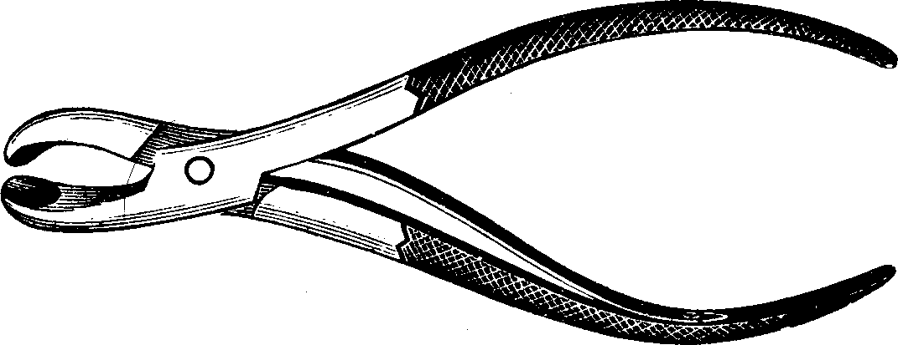
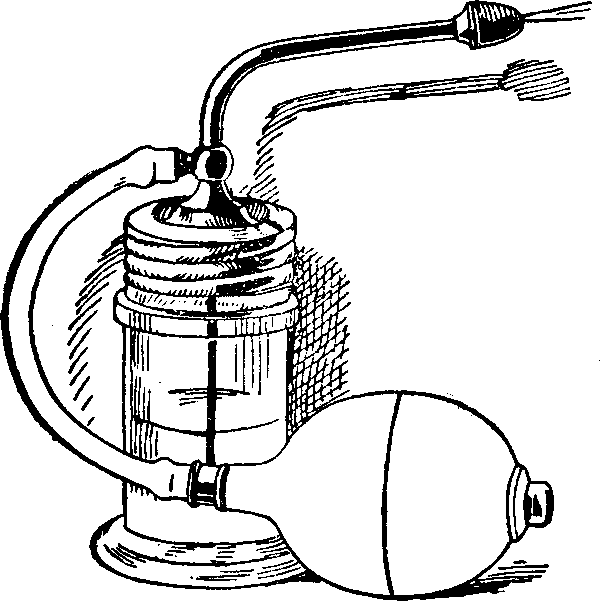
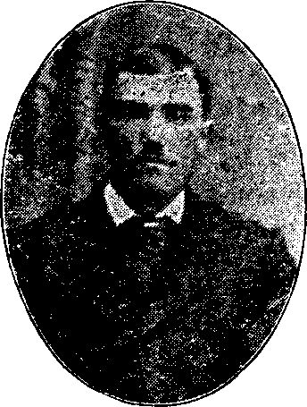
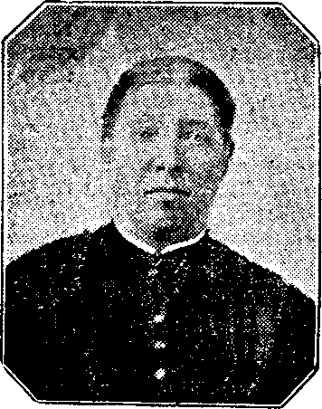
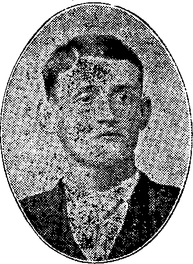
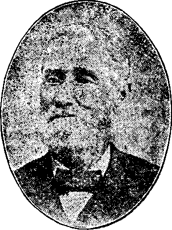

Wm. Ramich, Esq.
| << PREVIOUS | FIRST | NEXT >> |
| | 01 | 02 | 03 | 04 | 05 | 06 | 07 | 08 | 09 | | ||
Knowledge which is conducive to self-preservation is of primary importance. That great educator, profound thinker, and vigorous writer, Herbert Spencer, has pertinently said that, "As vigorous health and its accompanying high spirits, are larger elements of happiness than any other things whatever, the teaching how to maintain them is a teaching that yields to no other whatever. And therefore we assert that such a course of physiology as is needful for the comprehension of its general truths and their bearings on daily conduct is an all-essential part of a rational education."
Believing that the diffusion of knowledge for the prevention of disease is quite as noble a work as the alleviation of physical suffering by medical skill, we have devoted a large portion of this volume to the subjects of physiology and hygiene. These we have endeavored to present in as familiar a style as possible, that they may be understood by every reader. Freely as we have received light upon these subjects have we endeavored to reflect it again, in hopes that a popular presentation of these matters made plain and easy of comprehension to all people, may lead the masses into greater enjoyment of life—the result of a better preservation of health. This we do in part as a public acknowledgment of our obligations to society, to whom every professional man is a debtor. He belongs to it, is a part of its common stock, and should give as well as receive [pg 387]advantages, return as well as accept benefits. We know of no better way to signify our appreciation of the public confidence and patronage, so generously accorded to us, than to offer this volume to the people at a price less than the actual cost for an edition of ordinary size. This we do as a token of the cordial reciprocation of their good will. In giving to the people wholesome advice, by which they may be enabled to ward off disease and thus preserve the health of multitudes, we believe we shall receive their hearty approval, as well as the approbation of our own conscience, both of which are certainly munificent rewards. We believe that good deeds are always rewarded, and that the physician who prevents sickness manifests a genuine and earnest devotion to the common interests of humanity.
We have no respect for the motives of those medical men who would withhold that information from the people which will direct the masses how to take care of themselves, and thereby prevent much sickness and suffering. Nor is the diffusion of such knowledge antagonistic to the best interests of the true and competent physician. The necessity for his invaluable services can no more be set aside by popularizing physiological, hygienic, and medical truths, than we can dispense with those of the minister and lawyer by the inculcation of the principles of morality in our public schools. The common schools do not lessen the necessity for colleges or universities, but rather contribute to their prosperity. Nor are we so presumptuous as to anticipate that we could possibly make this volume so instructive as to render "every man his own physician." No man can with advantage be his own lawyer, carpenter, tailor, and printer; much less can he hope to artfully repair his own constitution when shattered by grave maladies, which not only impair the physical functions, but weaken and derange the mental faculties. What physician presumes to prescribe for himself, when suddenly prostrated by serious illness? He very sensibly submits to the treatment of another, because he realizes that sickness impairs his judgment, and morbid sensations mislead and unfit him for the exercise of his skill. If this is true of the physician, with how much greater force does it apply to the unprofessional! If a sick sea-captain is unfit to stand at the helm and direct his ship, how utterly incompetent [pg 388]must the raw sailor be when similarly disqualified! Nor is the physician as competent to treat those near and dear to him, when they are suffering from dangerous illness, as another medical man not similarly situated, whose judgment is not liable to be misled by intense anxiety and affectionate sympathy.
Notwithstanding all these facts, however, a knowledge on the part of the unprofessional, of something more than physiology and hygiene, and appertaining more closely to medicine proper, will many times prove valuable.
In the first stage of many acute affections which, if unheeded, gradually assume a threatening aspect, endangering life and demanding the services of the most skilled physician to avert fatal results, the early administration of some common domestic remedy, such as a cathartic, or a diaphoretic herb, associated with a warm bath, a spirit vapor-bath, or a hot foot-bath, will very often obviate the necessity for calling a family physician, and frequently save days and weeks of sickness and suffering.
So, likewise, are there numerous, acute diseases of a milder character which are easily and unmistakably recognized without the possession of great medical knowledge, and which readily yield to plain, simple, medical treatment which is within the ready reach of all who strive to acquaint themselves with the rudiments of medical science. But in sudden and painful attacks of acute disease, life may be suddenly and unexpectedly jeopardized, and immediate relief prove necessary. While under these circumstances the prompt application of such domestic treatment as good common-sense may dictate, guided by a knowledge of those first principles of medical learning which we shall hereafter endeavor to make plain, may result in speedy and happy relief, yet at the same time there should be no delay in summoning a competent physician to the bedside of the sufferer.
Then, and not the least important, there are the various chronic or lingering diseases, from all of which few individuals indeed, who pass the meridian of life, entirely escape. In this class of ailments there is generally no immediate danger, and, therefore, time may be taken by the invalid for studying his disease and employing those remedies which are best suited for its removal. [pg 389]Or, if of a dangerous or complicated character, and, therefore, not so readily understood, he may consult either personally or by letter, some learned and well-known physician, who makes a specialty of the treatment of such cases, and whose large experience enables him to excel therein.
In consideration, therefore, of the foregoing facts, we deem it most profitable for our readers that Part Fourth of this volume should be arranged in the following manner:
The milder forms of uncomplicated, acute diseases, which may be readily and unmistakably recognized, and successfully managed without professional aid, will receive that attention which is necessary to give the reader a correct idea of them, and their proper remedial treatment.
We shall devote only such attention to the severe and hazardous forms of acute diseases as is necessary in order to consider their initial stage, with their proper treatment, not attempting to trace their numerous complications, or portray the many pathological conditions which are liable to be developed. For, even by devoting much space to the latter, we could not expect to qualify our unprofessional readers for successfully treating such obscure and dangerous conditions.
We shall devote the largest amount of space to a careful and thorough consideration of those chronic diseases, which, by a little study, may be readily recognized and understood by the masses, and for the cure of which we shall suggest such hygienic treatment and domestic remedies as may be safely employed by all who are in quest of relief. In the more dangerous, obscure, or complicated forms of chronic diseases, the correct diagnosis and successful treatment of which tax all the skill possessed by the experienced specialist, the invalid will not be misled into the dangerous policy of relying upon his own judgment and treatment, but will be counseled not to postpone until too late, the employment of a skillful physician.
The apportionment of space which is made in considering the various diseases and their different stages, as well as the course which the people are advised to pursue under the different circumstances of affliction, is not always in accordance with the plans and recommendations which have been made by others who have written works on domestic medicine. Most of these [pg 390]authors have attempted, by lengthy disquisitions, to teach their readers how to treat themselves without the services of a physician, even in the most hazardous forms of disease. In such dangerous maladies as typhoid, typhus, yellow, and scarlet fevers, typhoid pneumonia, and many others, in which life is imminently imperiled, such instruction and advice is decidedly reprehensible, as it may lead to the most serious consequences. We are confident, therefore, that the manner of disposing of the different subjects which are discussed in the succeeding chapters, and the course of action which is advised, will commend themselves to our readers as being such as are calculated to promote and subserve their best interests.
Skill in the art of healing is indicated in three ways: (1.) by ascertaining the symptoms, seat, and nature of the disease, which is termed diagnosis; (2.) by foretelling the probable termination, which is termed prognosis; (3.) by the employment of efficacious and appropriate remedies, which is called treatment. Of these three requisites to a prosperous issue, nothing so distinguishes the expert and accomplished physician from the mere pretender as his ready ability to interpret correctly, the location, extent, and character of an affection from its symptoms. By medical diagnosis, then, is understood the discrimination between diseases by certain symptoms which are distinguishing signs. Every malady is accompanied by its characteristic indications, some of which are diagnostic, i.e., they particularize the affection and distinguish it from all others.
Medical diagnosis is both a science and an art; a science when the causes and symptoms of a disease are understood, and an art when this knowledge can be applied to determine its location and exact nature. Science presents the general principles of practice; art detects among the characteristic symptoms the differential signs, and applies the remedy. Da Costa aptly remarks: "No one aspiring to become a skillful observer can trust exclusively to the light reflected from the writings of others; he must carry the torch in his own hands, and himself look into every recess."
The critical investigation of symptoms, with the view of [pg 391]ascertaining their signs, is essential to successful practice. Without closely observing them, we cannot accurately trace out the diagnosis, and a failure to detect the right disease is apt to be followed by the use of wrong medicines.
General diagnosis considers the surroundings of the patient as well as the actual manifestations of the disease. It takes into account the diathesis, i.e., the predisposition to certain diseases in consequence of peculiarities of constitution. We recognize constitutional tendencies, which may be indicated by the contour of the body, its growth, stature, and temperament, since all these facts greatly modify the treatment. Likewise the sex, age, climate, habits, occupation, previous diseases, as well as the present condition, must be taken into account.
Auscultation, as practiced in detecting disease, consists in listening to the sounds which can be heard in the chest.
Percussion consists in striking upon a part with the view of appreciating the sound which results. The part may be struck directly with the tips of the fingers, but more generally one or more fingers of the other hand are interposed between the points of the fingers and the part to be percussed, that they, instead of the naked chest, may receive the blow; or, instead of the fingers, a flat piece of bone or ivory, called a pleximeter, is placed upon the chest to receive the blow.
Latterly, improved instruments greatly assist the practitioner of medicine in perfecting this art. The microscope assists the eye, and helps to reveal the appearance and character of the excretions, detecting morbid degenerations; chemistry discloses the composition of the urine, which also indicates the morbid alterations occurring in the system; by percussion we can determine the condition of an internal organ, from the sound given when the external surface is percussed; the ear, with the aid of the stethoscope, detects the strange murmurs of respiration, the fainter, more unnatural pulsations of life, and the obscurer workings of disease; with the spirometer we determine the breathing capacity of the lungs, and thus ascertain the extent of the inroads made by disease; the dynamometer records the lifting ability of the patient; the thermometer indicates the morbid variation in the bodily temperature; various instruments [pg 392]inform us of the structural changes causing alterations in the specific gravity of fluids, e.g., the urinometer indicates those occurring in the urine; and thus, as the facilities for correct diagnosis increase, the art of distinguishing and classifying diseases becomes more perfect, and their treatment more certain. While physiology treats of all the natural functions, pathology treats of lesions and altered conditions.
Fig. 146. Dr. Brown's Spirometer.
By the term symptoms we mean the evidence of some morbid effect or change occurring in the human body, and it requires close observation and well-instructed experience to convert these symptoms into diagnostic signs. Suppose "Old Probabilities" (as we commonly designate the invaluable Signal Department) hangs out his warning tokens all along our lake borders and ocean coasts; our sailors behold the fluttering symbols indicating an approaching storm, but if no one understood their meaning, a fearful disaster might follow. But if these signals are understood, a safe harbor is sought and the mariner is protected. So disease may hang out all her signals of distress, in order that they may be seen, but unless correctly interpreted, and a remedial harbor is sought, these symptoms are of little practical value.
Undoubtedly the reason why so many symptom-doctors blunder is because they prescribe according to the apparent symptoms, without any real reference to the nature of the affection. They fail to discover how far a symptom points out the seat, and also the progress of a disease. They do not distinguish the relative importance of the different symptoms. The practical purpose of all science is to skillfully apply knowledge to salutary and profitable uses. The patient himself may carefully note the indications, but it is only the expert physician who can tell the import of each symptom.
[pg 393]Symptoms are within every one's observation, but only the physician knows the nature and value of signs. We have read an anecdote of Galen, who was a distinguished physician in his day, which illustrates the distinction between sign and symptom. Once, when dangerously ill, he overheard two of his friends in attendance upon him recount his symptoms, such as "Redness of the face, a dejected, haggard, and inflamed appearance," etc. He cried out to them to adopt every necessary measure forthwith, as he was threatened with delirium. The two friends saw the symptoms well enough; but it was only Galen himself, though the patient, who was able to deduce the sign of delirium—that is, he alone was able to translate those symptoms into signs. To determine the value of symptoms, as signs of disease, requires close observation.
We shall refer to a few symptoms which any unprofessional reader may readily observe and understand.
Position of Patient. When a patient is disposed to lie upon his back continually during the progress of an acute disease, it is a sign of muscular debility. If he manifests no desire to change his position, or cannot do so, and becomes tremulous at the least effort, it indicates general prostration. When this position is assumed, during the progress of continued fever, and is accompanied by involuntary twitching of the muscles, picking of the bed-clothes, etc., then danger is imminent and the patient is sinking. Fever, resulting from local inflammation, does not produce muscular prostration, and the patient seldom or never assumes the supine position. If this inflammation is in the extremities, those parts are elevated, in order to lessen the pressure of the blood, which a dependent, position increases.
For example, let us change the scene, and introduce a patient with head and shoulders elevated, who prefers to sit up, and who places his hands behind him and leans back, or leans forward resting his arms and head upon a chair. The next week he is worse, and no longer tries to lie in bed, but sits up all the time; note the anxious expression of countenance, the difficult or hurried breathing, the dry and hacking cough, and observe [pg 394]that the least exertion increases the difficulty of respiration and causes palpitation of the heart. These plain symptoms signify thoracic effusion, the collection of water about the lungs.
The Countenance displays diagnostic symptoms of disease. In simple, acute fevers, the eyes and face are red and the respiration is hurried; but in acute, sympathetic fever, these signs are wanting. We cannot forget the pale, sharp, contracted, and pinched features of those patients whose nostrils contract and expand alternately with the acts of respiration. How hard it was for them to breathe. The contraction and expansion of the nostrils indicate active congestion of the lungs.
As a general rule, chronic inflammation of the stomach, duodenum, liver, and adjacent organs, imparts a gloomy expression to the countenance, at the same time the eye is dull, the skin dusky or yellow, and the motions are slow. But in lung diseases, the spirits are buoyant, the skin is fair, and the cheeks flushed with fever and distinctly circumscribed with white, for delicacy and contrast, almost exceed the hues of health in beauty. Note, too, the pearly lustre and sparkling light of the eye, the quivering motion of the lips and chin, all signs of pulmonary disease.
The Story of Sexual Abuse is plainly told by the downcast countenance, the inability to look a person fairly in the face, the peculiar lifting of the upper lip and the furtive glance of the eye. The state of the mind and of the nervous system corroborates this evidence, for there seems to be a desire to escape from conversation and to elude society. The mind seems engrossed and abstracted, the individual appears absorbed in a constant meditation, he is forgetful and loses nearly all interest in the ordinary affairs of life. The whole appearance of a patient, suffering from spermatorrhea, is perfectly understood by the experienced physician, for the facial expressions, state of mind, and movements of the body, all unconsciously betray, and unitedly proclaim his condition.
Tongue. Much may be learned from the appearance, color, and form of the tongue, and the manner of its protrusion. If pale, moist, and coated white, it indicates a mild, febrile condition of the system. If coated in the center, and the sides [pg 395]look raw, it indicates gastric irritation. If red and raw, or dry and cracked, it is a sign of inflammation of the mucous membrane of the stomach. If the inflammation is in the large intestine, the tip of the tongue presents a deep red color, while the middle is loaded with a dark brown coating. When the tongue is elongated and pointed, quickly protruded and withdrawn, it indicates irritation of the nerve-centers, as well as of the stomach and bowels. If tremulous, it denotes congestion and lack of functional ability; this may be observed in congestive fevers.
Pulse. Usually the pulse beats four times during one respiration, but both in health and disease its frequency may be accelerated or retarded. In adults, there are from sixty-five to seventy-five beats in a minute, and yet in a few instances we have found, in health, only forty pulsations per minute. But when the heart beats from one hundred and twenty to one hundred and forty times a minute, there is reason to apprehend danger, and the case should receive the careful attention of a physician.
Irregularity of the pulse may be caused by disease of the brain, heart, stomach, or liver; by the disordered condition of the nervous system; by lack of muscular nutrition, as in gout, rheumatism, or convulsions; by deficiency of the heart's effective power, when the pulse-wave does not reach the wrist, or when it intermits and then becomes more rapid in consequence of septic changes of the blood, as in diphtheria, erysipelas, and eruptive fevers.
Pain. The import of pain depends on its seat, intensity, nature, and duration. An acute, intense pain usually indicates inflammation of a nerve as well as the adjacent parts. Sharp, shooting, lancinating pains occur in inflammation of the serous tissues, as in pleurisy. A smarting, stinging pain attends inflammation of the mucous membrane. Acute pain is generally remittent and not fixed to one spot. Dull, heavy pain is more persistent, and is present in congestions, or when the substance of an organ is inflamed, and it often precedes hemorrhage. Burning pain characterizes violent inflammations involving the skin and subjacent cellular tissue, as in case of boils and carbuncles. Deep, perforating pain accompanies [pg 396]inflammation of the bones, or of their enveloping membranes. Gnawing, biting, lancinating pain attends cancers.
The location of pain is not always at the seat of the disease. In hip-disease, the pain is not first felt in the hip, but in the knee-joint. In chronic inflammation of the liver, the pain is generally most severe in the right shoulder and arm. Disease of the kidneys occasionally produces numbness of the thigh and drawing up of the testicle, and commonly causes colicky pains. Inflammation of the meninges of the brain is often indicated by nausea and vomiting before attention is directed to the head. These illustrations are sufficient to show that pain often takes place in some part remote from the disease.
In chronic, abdominal affections, rheumatic fevers, gout, and syphilis, the entire system is thrown into a morbid state, the nervous system is disturbed, and wandering pains manifest themselves in different parts of the body. Fixed pain, which is increased by pressure, indicates inflammation. If it be due only to irritation, pressure will not increase it. Some rheumatic affections and neuralgia not only bear pressure, but the pain diminishes under it. Permanent pain shows that the structures of an organ are inflamed, while intermittent pain is a sign of neuralgia, gout, or rheumatism. Absence of pain in any disease, where ordinarily it should be present, is an unfavorable sign. Internal pain, after a favorable crisis, is a bad omen. Or, if pains cease suddenly without the other symptoms abating, the import is bad. If, however, pain and fever remit simultaneously and the secretions continue, it is a favorable sign.
A dull pain in the head indicates fullness of the blood-vessels from weakness, low blood, or general debility. It may be caused by taking cold, thus producing passive congestion of the brain. It may proceed from gastric disturbance, constipation of the bowels, or derangement of the liver. Heaviness of the head sometimes precedes inflammation of the brain, or chronic disease of its membranes. A dull, oppressive pain in the head indicates softening of the brain, and is generally accompanied by slowness of the pulse and of the speech. A pulsating pain of the head occurs in heart disease, hysteria, and frequently accompanies some forms of insanity.
[pg 397]The Eye indicates morbid changes and furnishes unmistakable signs of disease. Sinking of the eye indicates waste, as in consumption, diarrhea, and cholera. In fevers it is regarded as a fatal symptom. A dark or leaden circle around the eye, seen after hard work, indicates fatigue and overdoing. If the mucous covering of the inner surface of the lids and the ball of the eye is congested and inflamed, it exhibits redness, and may indicate congestion or even inflammation of the brain.
A dilated pupil is often observed in catarrhal consumption, congestion of the brain, low fevers, and chlorosis.
The pupil contracts in inflammation of the meninges, when there is increased sensibility and intolerance of light, also in spinal complaints. In some diseases the lustre of the eye increases, as in consumption. But if it decreases with the attack of violent disease, it indicates great debility and prostration.
Examination of the Urine. All medical authors and physicians of education, freely admit and even insist upon the importance of critically examining the patient's urine, in all cases in which there is reason to suspect disease of the kidneys or bladder. In chronic affections it is particularly serviceable, especially in derangements of the liver, blood, kidneys, bladder, prostate gland, and nervous system. Many scholarly physicians have sadly neglected the proper inspection of the urine, because they were afraid of being classed with the illiterate "uroscopian" doctors, or fanatical enthusiasts, who ignorantly pretend to diagnose correctly all diseases in this manner, thus subjecting themselves and their claims to ridicule. Nothing should deter one from giving to this excretion the attention it deserves.
The urine which is voided when the system is deranged or diseased is altered in its color and composition, showing that its ingredients vary greatly. So important an aid do examinations of the urine furnish in diagnosing many chronic ailments, that at the Invalids' Hotel and Surgical Institute, where many thousands of cases are annually treated, a chemical laboratory has been fitted up, and a skillful chemist is employed, who makes a specialty of examining the urine, both chemically and microscopically, and reporting the result to the attending physicians. His extended experience renders his services invaluable. With [pg 398]his assistance, maladies which had hitherto baffled all efforts put forth to determine their true character, have frequently been quickly and unmistakably disclosed.
Microscopical Examination. This method of examination affords a quicker and more correct idea of a deposit or deposits than any other method. The expert, by simply looking at a specimen, can determine the character of the urine, whether blood, mucus, pus, uric acid, etc., are present or not. But when no deposit is present, then it is necessary to apply chemical tests, and in many cases the quantity of the suspected ingredient must be determined by analysis. As a detailed account, of the various modifications which the urine undergoes in different diseases, would be of no practical use to the masses, since they could not avail themselves of the advantages which it would afford for correct diagnosis, except by the employment of a physician who does not ignore this aid in examining his patients, we shall omit all further details upon the subject. For the same reason we shall not often, in treating of the different diseases in which examinations of the urine furnish such valuable aid in forming a diagnosis, make mention of the changes which are likely to have occurred.
The term Inflammation signifies a state in which the infected part is hotter, redder, more congested, and more painful than is natural. Inflammation is limited to certain parts, while fever influences the system generally. Inflammation gives rise to new formations, morbid products, and lesions, or alterations of structure. The morbid products of fever, and its modification of fluids are carried away by the secretions and excretions.
The susceptibility of the body to inflammation maybe natural or acquired. It is natural when it is constitutional; that is, when there is an original tendency of the animal economy to manifest itself in some form of inflammation. We may notice that some children are far more subject to boils, croups, and erysipelatous diseases than others. This susceptibility, when innate, may be lessened by careful medication, although it may never be wholly eradicated. When acquired, it is the result of the influence of habits of life, climate, and the state of mind over the constitution
[pg 399]Phlegmonous inflammation is the active inflammation of the cellular membrane, one illustration of which is a common boil. The four principal symptoms are redness, swelling, heat, and pain; and then appears a conical, hard, circumscribed tumor, having its seat in the dermoid texture. At the end of an indefinite period, it becomes pointed, white or yellow, and discharges pus mixed with blood. When it breaks, a small, grayish, fibrous mass sometimes appears, which consists of dead, cellular tissue, and which is called the core.
There are certain morbid states of the constitution which lead to local inflammation, subsequent upon slight injury; or, in some cases, without any such provocation, as in gout, rheumatism, and scrofula. One of the first results of the inflammation, in such cases, is a weakening of the forces which distribute the blood to the surface and extremities of the body. It is generally admitted that in scrofulous persons the vascular system is weak, the vessels are small, and because nutrition is faulty, the blood is imperfectly organized. The result is failure in the system, for if nutrition fails, there may be lacking earthy matter for the bones, or the unctious secretions of the skin; the sebaceous secretion is albuminous and liable to become dry, producing inflammation of the parts which it ought to protect.
Disorder of the alimentary canal and other mucous surfaces are sometimes reflected upon the skin. We have occasionally observed cutaneous eruptions and erysipelas, when evidently they were distinct signs of internal disorder.
Inflammation may be internal as well as external, as inflammation of the brain, lungs, or stomach, and it is frequently the result of what is called a cold. No matter how the body is chilled, the blood retreats from the surface, which becomes pale and shrunken, there is also nervous uneasiness, and frequently a rigor, accompanied with chattering of the teeth. After the cold stage, reaction takes place and fever follows. The sudden change from a dry and heated room to a cool and moist atmosphere is liable to induce a cold. Riding in a carriage until the body is shivering, or sitting in a draft of air when one has been previously heated, or breathing a very cold air during the night when the body is warm, especially when not accustomed to doing so, or exposing the body to a low temperature when [pg 400]insufficiently clothed, are all different ways of producing inflammation.
Inflammation may result in consequence of local injury, caused by a bruise, or by a sharp, cutting instrument, as a knife or an axe, or it may be caused by the puncture of a pin, pen-knife blade or a fork-tine, or from a lacerated wound, as from the bite of a dog, or from a very minute wound poisoned by the bite of a venomous reptile. Local inflammations may arise from scalds, burns, the application of caustics, arsenic, corrosive sublimate, cantharides, powerful acids, abrasions of the surface by injuries, and from the occurrence of accidents.
The swelling of the part may be caused by an increase of the quantity of blood in the vessels, the effusion of serum and coagulating lymph, and the interruption of absorption by the injury, or by the altered condition of the inflamed part.
The character of the pain depends upon the tissue involved, and upon the altered or unnatural state of the nerves. Ordinarily, tendon, ligament, cartilage, and bone are not very sensitive, but when inflamed they are exquisitely so.
The heat of the inflamed part is not so great, when measured by the thermometer, as might be supposed from the patient's sensations.
Termination of Inflammation. Inflammation ends in one of six different ways. Inflammation may terminate in resolution, i.e., spontaneous recovery; by suppuration, in the formation of matter; by effusion, as the inflammation caused by a blister-plaster terminates by effusion of water; by adhesion, the part inflamed forming an attachment to some other part; by induration, hardening of the organ; or by gangrene, that is, death of the part.
Thus, inflammation of the lungs may terminate by recovery, that is, by resolution, by suppuration and raising of "matter," by hardening and solidification of the lung, or by gangrene. Inflammation of the endocardium, the lining membrane of the heart, may cause a thickening of it, and ossification of the valves of the heart, thus impairing its function. Inflammation of the pericardium may terminate in effusion, or dropsy, and inflammation of the liver may result in hardening and adhesion to adjacent parts.
[pg 401]Remove the exciting causes as far as practicable. If caused by a splinter or any foreign substance, it should be withdrawn, and if the injury is merely local, apply cold water to the parts to subdue the inflammation. If caused by a rabid animal, the wound should be enlarged and cupped, and the parts cleansed or destroyed by caustic. The patient should remain quiet and not be disturbed. The use of tincture of aconite internally, will be found excellent to prevent the rise of inflammation. A purgative is also advised, and four or five of Dr. Pierce's Pleasant Purgative Pellets will be sufficient to act upon the bowels. If there is pain, an anodyne and diaphoretic is proper. Dr. Pierce's Compound Extract of Smart-weed will fulfill this indication. In local inflammation cold water is a good remedy, yet sometimes hot water, or cloths wrung out of it, will be found to be the appropriate application. When the inflammation is located in an organ within a cavity, as the lungs, hot fomentations will be of great service. Bathing the surface with alkaline water must not be omitted. Whenever the inflammation is serious the family physician should be early summoned.
In fever all the functions are more or less deranged. In every considerable inflammation there is sympathetic fever, but in essential fevers there are generally fewer lesions of structure than in inflammation. Fever occasions great waste of the tissues of the body, and the refuse matter is carried away by the organs of secretion and excretion. The heat of the body in fever is generally diffused, the pulse is quicker, there is dullness, lassitude, chilliness, and disinclination to take food. We propose to give only a general outline of fevers, enough to indicate the principles which should be observed in domestic treatment.
Most fevers are distinctly marked by four stages: 1st, the forming stage; 2d, the cold stage; 3d, the hot stage; 4th, the sweating or declining stage. During the first stage the individual is hardly conscious of being ill, for the attack is so slight that it is hardly perceptible. True, as it progresses, there is a [pg 402]feeling of languor, an indisposition to make any bodily or mental effort, and also a sense of soreness of the muscles, aching of the bones, chilliness, and a disposition to get near the fire. There is restlessness, disturbed sleep, bad dreams, lowness of spirits, all of which are characteristic of the formative stage of fever.
The next is the cold stage, when there is a decided manifestation of the disease, and the patient acknowledges that he is really sick. In typhus and typhoid fever the chills are slight; in other fevers they are more marked; while in ague they are often accompanied by uncontrollable shaking. When the chill is not so distinct the nails look blue and the skin appears shriveled, the eye is sunken and a dark circle circumscribes it, the lips are blue, and there is pain in the back. The pulse is frequent, small, and depressed, the capillary circulation feeble, the respiration increased, and there may be nausea and vomiting. These symptoms vary in duration from a few minutes to more than an hour. They gradually abate, reaction takes place, and the patient begins to throw off the bed-clothes.
Then follows the hot stage, for with the return of the circulation of the blood to the surface of the body, there is greater warmth, freer breathing, and a more comfortable and quiet condition of the system. The veins fill with blood, the countenance brightens, the cheeks are flushed, the intellect is more sprightly, and if the pulse is frequent, it is a good sign; if it sinks, it indicates feeble, vital force, and is not a good symptom. If there is considerable determination of blood to the head it becomes hot, the arteries of the neck pulsate strongly, and delirium may be expected. During the hot stage, if the fever runs high, the patient becomes restless, frequently changes his position, is wakeful, uneasy, and complains of pain in his limbs. In low grades, the sensibility is blunted, smell, taste, and hearing are impaired.
The patient in the hot stage is generally thirsty, and if he is allowed to drink much, it may result in nausea and vomiting. Moderate indulgence in water, however, is permissible. There is aversion to food, and if any is eaten, it remains undigested. The teeth are sometimes covered with dark sordes (foul accumulations) early in the fever, and the appearance of the tongue [pg 403]varies, sometimes being coated a yellowish brown, sometimes red and dry, at other times thickly coated and white. The condition of the bowels varies from constipation to diarrhea, although sometimes they are quite regular. The urine is generally diminished in quantity, but shows higher color.
The sweating stage in some fevers is very marked, while in others there is very little moisture, but an evident decline of the hot stage, the skin becoming more natural and soft. The pulse is more compressible and less frequent, the kidneys act freely, respiration is natural, the pains subside, although there remains languor, lassitude, and weariness, a preternatural sensibility to cold, an easily excited pulse, and a pale and sickly aspect of the countenance. The appetite has failed and the powers of digestion are still impaired.
Domestic Management of Fevers. It is proper to make a thorough study of the early, insidious symptoms of fever, in order to understand what ought to be done. If it arises in consequence of malaria, the treatment must be suited to the case. If from irritation of the bowels and improper articles of diet, then a mild cathartic is required. If there is much inflammation, a severe chill, and strong reaction, then the treatment should be active. If the fever is of the congestive variety and the constitution is feeble, the reaction imperfect, a small, weak pulse, a tendency to fainting, a pale countenance, and great pain in the head, apply heat and administer diaphoretics, and procure the services of a good physician.
As a general rule, it is proper to administer a cathartic, unless in typhoid fever, and for this Dr. Pierce's Purgative Pellets answer the purpose, given in doses of from four to six, according to the state of the bowels. If these are not at hand, a tea of sage and senna may be drunk until it produces a purgative effect, or a dose of Rochelle salts taken. In nearly all fevers we have found that a weak, alkaline tea, made from the white ashes of hickory or maple wood, is useful, taken weak, three or four times daily, or if there be considerable thirst, more frequently. Some patients desire lemon juice, which enters the system as an alkali and answers all purposes.
Diaphoretic medicines are also indicated, and the use of Dr. Pierce's Extract of Smart-weed will prove very serviceable. [pg 404]Drinking freely of pleurisy-root tea, or of a strong decoction of boneset is frequently useful. After free sweating has been established, then it is proper to follow by the use of diuretic teas, such as that of spearmint and pumpkin seed combined, or sweet spirits of nitre, in doses of twenty to thirty drops, added to a teaspoonful of the Extract of Smart-weed, diluted with sweetened water.
To lessen the frequency of the pulse, fluid extract or tincture of aconite or veratrum may be given in water, every hour. During the intermission of symptoms, tonic medicines and a sustaining course of treatment should be employed. If the tongue is loaded and the evacuations from the bowels are fetid, a solution of sulphite of soda is proper; or, take equal parts of brewer's yeast and water, mix, and when the yeast settles, give a tablespoonful of the water every hour, as an antiseptic. Administering a warm, alkaline hand-bath to a fever patient every day, is an excellent febrifuge remedy, being careful not to chill or induce fatigue. If there is pain in the head, apply mustard to the feet; if it is in the side, apply hot fomentations.
The symptoms which indicate danger are a tumid and hard abdomen, difficult breathing, offensive and profuse diarrhea, bloody urine, delirium, or insensibility. Favorable symptoms are a natural and soft state of the skin, eruptions on the surface, a natural expression of the countenance, moist tongue, free action of the kidneys, and regular sleep. If the domestic treatment which we have advised does not break the force of the disease and mitigate the urgency of the symptoms, it will be safer to employ a good physician, who will prescribe such a coarse of treatment as the case specially requires. It is our aim to indicate what may be done before the physician is called, for frequently his services cannot be obtained when they are most needed. Besides, if these attacks are early and properly treated with domestic remedies, it will often obviate the necessity of calling upon a physician. If, on the other hand, fevers are neglected and no treatment instituted, they become more serious in character and are more difficult to cure.
To recapitulate, our treatment recommends evacuation through nature's outlets, the skin, kidneys, and bowels, maintaining warmth, neutralizing acidity, using antiseptics, tonics, [pg 405]and the hand-bath, and the fluid extract or tincture of aconite, or veratrum to moderate the pulse by controlling the accelerated and unequal circulation of the blood. It is a simple treatment, but if judiciously followed, it will often abort a fever, or materially modify its intensity and shorten its course.
The description of fever already given applies well to this form of it, only the symptoms in the former stage are rather more distinct than in the other varieties. Weariness, lassitude, yawning, and stretching, a bitter taste in the mouth, nausea, less of appetite, the uneasy state of the stomach and bowels are more marked in the premonitory stages of intermittent fevers. The cold stage commences with a chilliness of the extremities and back, the skin looks pale and shriveled, the blood recedes from the surface, respiration is hurried, the urine is limpid and pale, sometimes there is nausea and vomiting, and towards the conclusion of the stage, the chilly sensations are varied with flushes of heat. The hot stage is distinguished by the heat and dryness of the surface of the body and the redness of the face; there is great thirst, strong, full, and hard pulse, free and hurried respiration and increased pain in the head and back. The sweating stage commences by perspiration appearing upon the forehead, which slowly extends over the whole body, and soon there is an evident intermission of all the symptoms. In the inflammatory variety of intermittent fever, all these symptoms are acute, short, and characterized by strong reaction. Gastric fever, the most frequent variety of intermittent fever, is marked by irritation of the stomach and bowels, and a yellow appearance of the white of the eye.
Causes. The cause of the malarial fevers, intermittent, remittent, and congestive, is supposed to be miasm, a poisonous, gaseous exhalation from decaying vegetation, which is generally most abundant in swamps and marshes, and which is absorbed into the system through the lungs.
Treatment. During the entire paroxysm the patient should be kept in bed, and in the cold stage, covered with blankets and surrounded with bottles of hot water. The Compound Extract of Smart-weed should be administered in [pg 406]some diaphoretic herb-tea. During the hot stage, the extra clothing and the bottles of hot water should be gradually removed and cold drinks taken instead of warm. During the sweating stage the patient should be left alone, but as soon as the perspiration ceases, from two to four of the Purgative Pellets should be administered, as a gentle cathartic. A second paroxysm should, if possible, be prevented. To accomplish this, during the intermission of symptoms, the Golden Medical Discovery should be taken in doses of from two to three teaspoonfuls every four hours in alternation with three-grain doses of the sulphate of quinine. If the attack is very severe, and is not relieved by this treatment, a physician should be summoned to attend the case.
The distinction between intermittent and remittent fever does not consist in a difference of origin. In the former disease there is a complete intermission of the symptoms, while in the latter there is only a remission.
Treatment. The treatment should consist in the employment of those remedial agents advised in intermittent fever, the Golden Medical Discovery and quinine being taken during the remission of symptoms. During the height of the fever, tincture of aconite maybe given and an alkaline sponge-bath administered with advantage. As in intermittent fever, should the course of treatment here advised not promptly arrest the disease, the family physician should be summoned.
This is the most severe and dangerous form of malarial fever. It may be either intermittent or remittent in character. In some instances the first paroxysm is so violent as to destroy life in a few hours, while in others it comes on insidiously, the first one or two paroxysms being comparatively mild. It is frequently characterized by stupor, delirium, a marble-like coldness of the surface, vomiting and purging, jaundice, or hemorrhage from the nose and bowels. In America this fever is only met with in the Mississippi valley, and in other localities where the air contains a large quantity of malarial poison.
[pg 407]Treatment. This fever is so dangerous that a physician should be summoned as soon as the disease is recognized. For the benefit of those who are unable to obtain medical attendance, we will say that the treatment should be much the same as in intermittent fever, but more energetic. Quinine should be taken in doses of from five to fifteen grains every two or three hours. If it be not retained by the stomach, the following mixture may be administered by injection: sulphate of quinine, one-half drachm; sulphuric acid, five drops; water, one ounce; dissolve, and then add two ounces of starch water.
The symptoms of these fevers do not intermit and remit, but continue without any marked variation for a certain period. They are usually characterized by great prostration of the system, and are called putrid when they manifest septic changes in the fluids, and malignant when they speedily run to a fatal termination. Typhoid and typhus fevers belong to this class. We shall not advise treatment for these more grave disorders which should always, for the safety of the patient, be attended by the family physician, except to recommend some simple means which may be employed in the initial stage of the disease, or when a physician's services cannot be promptly secured.
In typhoid fever there is ulceration of the intestines and mesenteric glands. This diseased condition of the bowels distinguishes this fever from all others, and is readily detected by sensitiveness to pressure, especially over the lower part of the abdomen on the right side. The early disposition to diarrhea is another characteristic symptom of it, and there is also no intermission of symptoms as in intermittent fever. The disease comes on insidiously, with loss of appetite, headache, chilliness, and languor. It is usually a week or more before the disease becomes fully developed.
Cause. Typhoid fever is a specific form of fever developed from the action of a specific germ upon a susceptible system. The poison of typhoid fever is eliminated mainly through the bowels. The germs of typhoid can maintain life for months in [pg 408]water, and thus it happens that ponds, lakes, rivers and streams which receive sewage can spread the germs of typhoid fever. Well water often swarms with these poisonous germs. In some cases it has been found that privies, though twenty or forty feet away from a well, have yet drained into it—through a clay soil covered with gravel—and carried the germs to those drinking the water from the well. Next to water, milk is the most prominent carrier of contagion. Milk is apt to get infected with the germs if cooled in tanks of water which may receive drainage from outhouses and barns.
Treatment. Scientific support has been given the treatment by cold tub baths (70° Fahrenheit) and it is advised by many physicians. Experience has proved that sponge baths and tub baths are of the utmost importance, when the temperature of the patient is at or above 102.5° Fahrenheit. Every three hours the tub bath is given for twenty minutes at 70° Fahrenheit. These may be tepid at first, gradually cooling to 70°. Frictions are applied to patient in the bath, and he is wrapped in blankets when taken out to avoid danger of chill, and then given a warm drink or stimulant. Treatment should be directed by an experienced physician to suit the symptoms. The evacuations from the bowels should be thoroughly disinfected with chloride of lime or carbolic acid, that they may not convey the disease to others. All the sewerage and drain pipes in the house should likewise be disinfected.
This fever takes its name from the scarlet color of the eruption on the surface of the body. Sometimes it is comparatively mild, and is then called Scarlatina Simplex; when it is accompanied by a sore throat, it is termed Scarlatina Anginosa; and when the disease is of a low, putrid type, it is called Scarlatina Maligna. This disease has three distinct stages: (1), the stage of invasion; (2), the stage of eruption; and (3), the stage of desquamation. In the first stage there is pain in the head, increased heat of the skin, redness and soreness of the throat, and sometimes nosebleed, diarrhea, or vomiting. The average duration of this stage is twenty-four hours. The eruptive stage [pg 409]generally begins on the second day, though sometimes it is delayed longer, and the scarlet rash rapidly diffuses itself over the whole body. The redness is vivid and has been compared to the appearance of a boiled lobster. The stage of eruption reaches its maximum of intensity on the third day, and it is important that it does not recede. Redness of the tonsils and throat is one of the early symptoms which precedes any cutaneous eruption. The tongue also is finely spotted with numerous red points which mark its papillæ, presenting an appearance which has been compared to that of a strawberry.
The thirst is urgent, there is no appetite, and vomiting and mild delirium are common. This stage continues from four to six days, and sometimes longer. Desquamation (scaling off of the skin) commences at the decline of the eruption, in the form of minute, branny scales. The duration of this stage is indefinite, and may end in five or six or may continue ten or twelve days.
If the inflammation in the throat is very severe, it may terminate in an abscess, which may also occur in the glands of the neck, and sometimes the inflammation extends to the lips, cheeks, and eyelids. Gangrene within the throat occurs in rare instances. The disease is easily communicated, and usually develops in two to five days after exposure. It occurs most frequently in the third and fourth years of life. There is no other disease so simple, and yet so often liable to prove fatal, as scarlet fever; and for this reason we shall advise the attendance of the family physician.
Domestic treatment may be given as follows, until a physician can be obtained: Catnip, pennyroyal, or pleurisy-root tea, containing one teaspoonful of the Extract of Smart-weed, may be given, to drive the rash to the surface. Cold drinks are suitable to allay the thirst, nausea, and fever. The sick-room should be kept at a temperature of about 65° Fahr., and fresh air admitted freely. The patient ought not to be overloaded with bed-clothes; and the skin should be sponged over twice daily with tepid water, different parts being exposed successively, and carefully dried with soft cloths. Soda may be added to the water, but no soap should be used. The diet should consist of milk, extract of beef, and soups. Injections may be employed [pg 410]to relieve constipation, but purgatives should be avoided. We repeat that this disease is one which requires the attendance of the family physician, and great care should be exercised during recovery, that no bad results may follow.
Small-pox is produced by a specific poison, which is reproduced and multiplied during the progress of the disease. It is contained in the pustules, and in the excretions and exhalations of affected individuals. It is established after a period of incubation varying from nine to thirteen days after infection.
There are two varieties of this disease, known as confluent and distinct variola; in the former, the vesicles run together, in the latter, they are separate.
This fever has three stages. The first is that of invasion, distinctly marked by a chill or a series of chills, which alternate with flushes of heat. In this stage the tongue becomes coated, there is also nausea and vomiting, pain in the limbs, back, and particularly in the loins, the latter symptom being of diagnostic importance. This stage continues about two days, and if the symptoms are light, it may be expected that the disease will be comparatively mild, and of the distinct variety.
The stage of eruption. The eruption begins to appear on the skin, generally on the third day following the attack, though in the throat and mouth may be discovered round, whitish, or ashy spots, several hours previous to the appearance of vesicles on the surface of the body. These are first seen on the face and neck, then on the trunk and upper extremities, and, lastly, on the lower extremities. The eruption at first appears in the form of small, red or purple spots, which change the texture of the skin by becoming more hard, pointed, and elevated. On the fifth day of the eruption they attain their full size, being softened and depressed in the center, and hence are called umbilicated. Now a change takes place, and the vesicles fill with "matter" and become pointed, and there is a rise in the fever.
The stage of suppuration commences thus: the pulse quickens, the skin becomes hotter, and in many cases of the confluent variety, swelling of the face, eyelids, and extremities occurs. Frequently there is passive delirium in this stage, and if diarrhea [pg 411]sets in, it is an unfavorable sign. The duration of this stage of the eruption is four or five days.
The stage of desication, or of the drying of the pustules, commences between the twelfth and fourteenth day of the disease. In the confluent variety, patches of scab cover all the space occupied by the eruption, and the skin exhales a sickening odor.
The Treatment should have reference to the determination of the eruption to the surface. If there is thirst, allow cold drinks, ice-water, or lemonade. Bathing the surface with cold water, breathing plenty of fresh air, using disinfectants in the room, and taking antiseptic medicine internally, are proper. Add one part of carbolic acid to six parts of glycerine, mix from two to three drops of this with an ounce of water, and of this preparation administer teaspoonful doses frequently. A few drops of carbolic acid and glycerine may be rubbed up with vaseline, and the surface anointed with it to prevent pitting. The malady is so grave that it should be intrusted to the care of the family physician.
Varioloid is a modified form of small-pox. There is less constitutional disturbance, and very little or no pitting of the skin. Varioloid generally occurs in persons who have not been fully protected by vaccination. A person suffering from this modification of the disease may, by contagion, communicate to another genuine small-pox. The treatment is the same as that recommended in variola.
The important discovery of vaccination is due to Dr. Jenner, who ascertained that when the cow was affected by this disease and it was then communicated to man, the affection was rendered very mild and devoid of danger, and at the same time it proved a very complete protection against small-pox. Like most other valuable discoveries introduced to the world, it encountered bitter prejudice and the most unfair opposition. Now its inestimable value is generally known and admitted.
In a few cases, in which the quality of the vaccine virus was [pg 412]deteriorated, its effect is only to slightly-modify small-pox, and then the disease resembles that caused by inoculation. The operation of infecting the blood with the kine virus is called vaccination. All that we know is that when the cow becomes affected with this disease, and it is then transferred to man, it loses its severity and serves as a protection against small-pox. In a great majority of cases this protection is absolute, and only in a very few does it leave the subject susceptible to small-pox, materially modified. The protection it affords against small-pox is found to diminish after the lapse of an indefinite number of years, and hence it is important to be re-vaccinated once or twice, for instance, after an interval of five years. Between the second and third months of infancy is the best period for vaccination, and the place usually selected is the middle of the arm above the elbow-joint.
Chicken-pox is an eruptive disease, which affects children, and occasionally adults. It is attended with only slight constitutional disturbance, and is, therefore, neither a distressing nor dangerous affection. The eruption first appears on the body, afterwards on the neck, the scalp, and lastly on the face. It appears on the second or third day after the attack, and is succeeded by vesicles containing a transparent fluid. These begin to dry on the fifth, sixth, or seventh day. This disease may be distinguished from variola and varioloid by the shortness of the period of invasion, the mildness of the symptoms, and the absence of the deep, funnel-shaped depression of the vesicles, so noticeable in variola.
Treatment. Ordinarily very little treatment is required. It is best to use daily an alkaline bath, and, as a drink, the tea of pleurisy-root, catnip, or other diaphoretics, to which may be added from one-half to one teaspoonful of the Extract of Smart-weed. If the fever runs high, a few drops of aconite in water will control it.
This is generally a disease of less severity and importance than the other eruptive fevers, but it is sometimes followed by [pg 413]serious complications. The stage of invasion is marked by the symptoms of a common cold, sneezing, watery eyes, a discharge from the nostrils, a dry cough, chilliness, and headache. This stage may last four days. Then follows an eruption of red dots or specks, which momentarily disappear on pressure. On the fourth day of the eruption the redness of the skin fades, the fever diminishes, and the vesicles dry into scales or little flakes. The eyes may be inflamed and the bowels may be quite lax at this stage.
Treatment. The great object in the treatment is to bring out the eruption. To effect this, sweating teas are beneficial. The free use of the Extract of Smart-weed is recommended, and the skin should be bathed every day with tepid water. Sometimes when warm drinks fail to bring out the eruption, drinking freely of cold water and keeping warmly covered in bed, will accomplish the desired result.
False Measles (Rose Rash) is an affection of very little importance and may be treated similarly to a case of ordinary measles.
There are few adult persons in this country who have not, by observation or experience, become somewhat familiar with this disease. Its manifestations are both constitutional and local, and their intensity varies exceedingly in different cases. The constitutional symptoms are usually the first to appear, and are of a febrile character. A distinct chill, attended by nausea and general derangement of the stomach is experienced, followed by febrile symptoms more or less severe. There are wandering pains in the body and sometimes a passive delirium exists. Simultaneously with these symptoms the local manifestations of the disease appear. A red spot develops on the face, the ear, or other part of the person. Its boundary is clearly marked and the affected portion slightly raised above the surrounding surface. It is characterized by a burning pain and is very sensitive to the touch. It is not necessary for the benefit of the popular reader that we should draw a distinction between the different varieties of this malady. The distinctions made are founded chiefly upon the depth to which the morbid condition attends, and not on any difference in the nature of the affection.
[pg 414]Suppuration of the tissues involved is common in the severer forms. Should the tongue become dark and diarrhea set in, attended with great prostration, the case is very serious, and energetic means must be employed to save life. A retrocession of the inflammation from the surface to a vital organ is an extremely dangerous symptom. The disease is not regarded as contagious, but has been known to become epidemic.
Treatment. The treatment during the initial stage of this disease should correspond with the general principles laid down for the treatment of fever. The spirit vapor-bath, with warm, diaphoretic teas, or the Compound Extract of Smart-Weed may be given to favor sweating. The whole person should be frequently bathed in warm water rendered alkaline by the addition of saleratus or soda. The bowels should be moved by a full dose of the Purgative Pellets. Fluid extract of aconite in small and frequent doses will best control the fever. The specific treatment, which should not be omitted, consists in administering doses of ten drops of the tincture of the muriate of iron in alternation with teaspoonful doses of the Golden Medical Discovery, every three hours. As a local application, the inflamed surface may be covered with cloths wet in the mucilage of slippery elm. Equal parts of sweet oil and spirits of turpentine, mixed and painted over the surface, is an application of unsurpassed efficacy.
This is an exceedingly grave, constitutional disease characterized by a rapid breaking down of the powers of life, together with a peculiar affection of the throat, in which a disposition to the formation of false membranes is a prominent feature. The formation of these membranes, however, is not limited to the throat, but may occur on mucous surfaces elsewhere.
Cause. Infection with the specific germ of the disease by contagion or inoculation. It can be carried in milk or water, and the germs can attach themselves to furniture, walls, clothing, etc. A person with chronic diphtheretic sore throat can infect children or susceptible persons with the disease in its most acute type by kissing. All persons with sore throat should avoid kissing—as this disease is commonly spread in this way.
[pg 415]Symptoms. The symptoms vary in different cases. In some the disease comes on gradually, while in others it is malignant from the first. The throat feels sore, the neck is stiff and a sense of languor, lassitude, and exhaustion pervades the system. Sometimes a chill is experienced at the outset. Febrile disturbance, generally of a low, typhoid character, soon manifests itself. The skin is hot; there is intense thirst; the pulse is quick and feeble, ranging from 120 to 150 per minute. The tongue is generally loaded with a dirty coat, or it may be bright red. The odor of the breath is characteristic, and peculiarly offensive, and there is difficulty in swallowing and sometimes in breathing. Vomiting is sometimes persistent. If we examine the throat, we find more or less swelling of the tonsils and surrounding parts, which are generally bright red, and shining, and covered with a profuse, glairy, tenacious secretion. Sometimes the parts are of a dusky, livid hue, and, in rare instances, pallid. The false membrane, a peculiar tough exudation, soon appears and may be seen in patches, large or small, or covering the entire surface from the gums back as far as can be seen, its color varying from a whitish yellow to a gray or dark ashen tint. When it is thrown off, it sometimes leaves a foul, ulcerating surface beneath. The prostration soon becomes extreme, and small, livid spots may appear on the surface of the body. There may be delirium, which is, in fatal cases, succeeded by stupor, or coma. The extremities become cold; diarrhea, and in some cases convulsions, indicate the approach of death. Sometimes the patient dies before the false membrane forms.
Treatment. The extremely dangerous character of this disease demands that the services of a skillful physician be obtained at once; and that his efforts should be aided by the most thorough hygienic precautions, good fresh air, bathing, and a supporting diet. Prior to the arrival of the physician, lose no time in using plenty of good brandy or whiskey to offset the extremely weakening effect of the disease. The employment of alcoholic stimulation in this disease is almost always used by physicians. Control the vomiting and allay the thirst by allowing the patient to suck small pieces of ice every five or ten minutes. Hot fomentations or spirits of turpentine should be [pg 416]applied to the throat. If the physician does not take charge of the patient by this time, the use of permanganate of potash, triturated, in strength of one grain to the ounce, in a mixture of fine sugar of milk and gum acacia, and blown over the parts with an insufflater every few hours, brings the best results if thoroughly carried out; or the throat can be swabbed out with the following mixture: chlorate of potash, four drachms; tincture of muriate of iron, three drachms, syrup of orange, two ounces; water sufficient to make four ounces; administered every two or three hours. Inhaling steam or lime-water from a steam atomizer is especially good. The use of blisters, caustics, active purges, mercurials, or bleeding, should be condemned. Throughout the whole course of the disease the strength must be supported by the most nourishing diet, as well as by tonics and stimulants. Beef tea, milk, milk punch, and brandy should be freely administered. A competent physician should be called in as early as possible. The general results of the treatment with antitoxin, if given on the first, second or third day of the disease, are usually favorable. There are rarely any immediately bad results from the injections, and the published testimony of careful observers would tend to prove that recovery has followed its use in a larger percentage of cases than under former methods of treatment.
This is an acute inflammation of the tonsils, which generally extends to, and involves adjacent strictures, and is attended with general febrile disturbance. Its duration varies from four to twenty days. It sometimes terminates by a gradual return to health (resolution); or by the formation of "matter" within the gland (suppuration.) When this latter is the case, the swelling sometimes becomes so great before it breaks as to require lancing.
Causes. It most frequently results from a cold. In some persons there is a predisposition to it, and the individual is liable to recurring attacks. Persons of a scrofulous diathesis are more liable to it than others.
Symptoms. Difficulty of swallowing, soreness, and stiffness [pg 417]of the throat, are the first monitions of its approach. There is fever, quick, full pulse, and dryness of the skin; the tongue is furred, and the breath offensive. The tonsils are intensely red, swollen, and painful, the pain often extending to the ear. Sometimes but one tonsil is affected, though generally both are involved. In severe cases the patient cannot lie down, in consequence of the difficulty of breathing.
Treatment. In the early stage of the disease, the spirit vapor-bath is invaluable. The sweating which it produces should be kept up by the use of the Compound Extract of Smart-weed in some diaphoretic infusion. Hot wet-packs to the throat, covered with dry cloths, are useful. The inhalation of the hot vapor of water or vinegar, or peppermint and water, is beneficial. A carthartic should be given at night. When the disease does not show a disposition to yield to this treatment, the services of a physician should be obtained. When pus, or "matter," is formed in the tonsil, which may be known by the increased swelling and the appearance of a yellowish spot, the services of a physician will be required to lance it.
Fig. 147. A
A.—Enlarged Tonsils. B.—Elongated Uvula.
Chronic enlargement of the tonsils, as shown in Fig. 147, A A, is an exceedingly common affection. It is most common to those of a scrofulous habit. It rarely makes its appearance after the thirtieth year, unless it has existed in earlier life, and has been imperfectly cured. Both tonsils are generally, though unequally enlarged. A person affected with this disease is extremely liable to sore throat, and contracts it on the slightest exposure; the contraction of a cold, suppression of perspiration, or derangement of the digestive apparatus being sufficient to provoke inflammation.
[pg 418]Causes. Repeated attacks of quinsy, scarlet fever, diphtheria, or scrofula, and general impairment of the system, predispose the individual to this disease.
Symptoms. The voice is often husky, nasal or guttural, and disagreeable. When the patient sleeps, a low moaning is heard, accompanied with snoring and stentorian breathing, and the head is thrown back so as to bring the mouth on a line with the windpipe, and thus facilitate the ingress of air into the lungs. When the affection becomes serious, it interferes with breathing and swallowing. The chest is liable to become flattened in front and arched behind, in consequence of the difficulty of respiration, thus predisposing the patient to pulmonary disease. On looking into the throat, the enlarged tonsils may be seen, as in the figure. Sometimes they are so greatly increased in size that they touch each other.
Treatment. The indications to be carried out in the cure of this malady are:
(1.) To remedy the constitutional derangement.
(2.) To remove the enlargement of the tonsil glands.
The successful fulfillment of the first indication may be readily accomplished by attention to hygiene, diet, clothing, and the use of the Golden Medical Discovery, together with small daily doses of the Pleasant Purgative Pellets. This treatment should be persevered in for a considerable length of time after the enlargement has disappeared, to prevent a return.
To fulfill the second indication, astringent gargles may be used. Infusions of witch-hazel or cranesbill should be used during the day. The following mixture is unsurpassed: iodine, one drachm; iodide of potash, four drachms; pure, soft water, two ounces. Apply this preparation to the enlarged tonsils twice a day, with a probang, or soft swab, being careful to paint them each time. A persevering use of these remedies, both internal and local, is necessary to reduce and restore the parts to a healthy condition.
Sometimes the enlarged tonsils undergo calcareous degeneration; in this case, nothing but their removal by a surgical operation is effectual. This can be readily accomplished by any competent surgeon. We have operated in a large number of cases, and have never met with any unfavorable results.
[pg 419]Chronic enlargement or elongation of the uvula, or palate, as shown at B, Fig. 147, may arise from the same causes as enlargement of the tonsils. It subjects the individual to a great deal of annoyance by dropping into and irritating the throat. It causes tickling and frequent desire to clear the throat, change, weakness, or entire loss of voice, and difficulty of breathing, frequently giving rise to the most persistent and aggravating cough.
Treatment. The treatment already laid down for enlarged tonsils, with which affection, elongation of the uvula is so often associated, is generally effectual. When it has existed for a long time and does not yield to this treatment, it may be removed by any competent surgeon.
When the blood contains less than the ordinary number of red corpuscles, the condition is known as anæmia, and is characterized by every sign of debility. A copious hemorrhage, in consequence of a cut, or other serious injury, will lessen the quantity of blood and may produce anæmia. After sudden blood-letting, the volume of the circulation is quickly restored by absorption of fluid, but the red corpuscles cannot be so readily replaced, so that the blood is poorer by being more watery. This is only one way in which the blood is impoverished.
The blood may be exhausted by a drain upon the system, in consequence of hard and prolonged study. Severe mental employment consumes the red corpuscles, leaving the blood thin, the skin cool and pale, and the extremities moist and cold.
Anæmia may arise from lack of exercise, or it may be occasioned by mental depression, anxiety, disappointment, trouble, acute excitement of the emotions or passions, spinal irritation; in fact, there are many special relations existing between the red corpuscles of the blood and the various states of the mind and the nervous system. The latter depends directly upon the health and quantity of these red corpuscles for its ability to execute its functions.
[pg 420]Anæmia may arise in consequence of low diet, or because the alimentary organs do not properly digest the food, or when there is not sufficient variety in the diet. No matter how anæmia is occasioned, whether by labor and expenditure, by hemorrhages, lead poisoning, prolonged exposure to miasmatic influences, deprivation of food, indigestion, imperfect assimilation, frequent child-bearing, or lactation, the number of the red corpuscles in the blood is materially diminished.
The diagnostic symptoms of anæmia are pallor of the face, lips, tongue, and general surface, weakness of the vital organs, hurried respiration on slight exercise, swelling or puffiness of the eyes, and a murmur of the heart, resembling the sound of a bellows.
This disorder of the blood tends to develop low inflammation, dropsical effusion, tubercular deposits, Bright's disease, derangements of the liver, diarrhea, leucorrhea, and is a precursor of low, protracted fevers. This condition of the blood predisposes to the development of other affections, providing they are in existence, and often it is found associated with Bright's disease, cancer, and lung difficulties.
Treatment. (1.) Prevent all unnecessary waste and vital expenditure.
(2.) Place the patient under favorable circumstances for recovery, by regulating the exercise and clothing entertaining the mind, and furnishing plenty of pure air.
(3.) Prescribe such a nutritious diet as will agree with the enfeebled condition of the patient.
(4.) Regular habits should be established in regard to meals, exercise, recreation, rest, and sleep.
(5.) The use of tonics and stimulants, as much as the stomach will bear, should be encouraged. Bathe the surface with a solution of a drachm of quinine in a pint of whiskey.
(6.) Iron, in some form, is the special internal remedy in anæmia. Meantime, it is proper to treat the patient with gentle, manual friction, rubbing the surface of the body lightly and briskly with the warm, dry hand, which greatly stimulates the circulation of the blood. Anæmia occurs more frequently in the female than in the male, because her functions and duties are more likely to give rise to it.
[pg 421]Apnoea, or short, hurried, difficult respiration, is occasioned by certain conditions of the blood. When anything interferes with the absorption of oxygen, or the elimination of carbonic acid, the blood is not changed from venous to arterial, and becomes incapable of sustaining life. This morbid condition is termed asphyxia. We often read of persons going into wells where there are noxious gases, or remaining in a close room where there are live coals generating carbonic acid gas and thus becoming asphyxiated, dying for want of oxygen.
Deficiency of oxygen is the cause of apnoea, and sometimes the red corpuscles themselves are so few, worn out, or destroyed, that they cannot carry sufficient oxygen, and the consequence is that the patient becomes short of breath, and when a fatal degeneration of the corpuscles ensues, he dies of asphyxia. Many a child grows thin and wan and continues to waste away, the parents little dreaming that the slow consumption of the red corpuscles of the blood is the cause which is undermining the health. Sometimes this disease is the result of starvation, irregular feeding, improper diet, want of care, and, at other times, want of fresh air, proper exercise, and sunlight.
Treatment. The first essential to success in the treatment of this disease, is the removal of the exciting cause. Exercise in the outdoor air and sunlight, with good, nutritious food, and well-ventilated sleeping apartments, are of the greatest importance. The bitter tonics, as hydrastin, with pyrophosphate of iron, should be employed to enrich the blood and build up the strength.
This term is used to designate a condition in which there is an excess of colorless blood-corpuscles. In health, the colorless corpuscles should exist only in the proportion of one, to one or two hundred of the red corpuscles. These colorless corpuscles increase when there is disease of the lymphatic glands, but whether this is the cause of their increase or perversion is not known.
They have been found abundant in the blood in diseases of the spleen and of the liver. Diarrhea usually attends this [pg 422]complaint, together with difficult breathing, loss of strength, gradual decline, fever, diminution of vital forces, and finally death. The recovery of a well-marked case of this disease is very doubtful. Its average duration is about one year.
Transudation is the passage of fluid through the tissue of any part of the body without changing its liquid state, while exudation means, medically, the passage of matter which coagulates and gives rise to solid deposits. When transudations are unhealthy, they may accumulate in serous cavities or in cellular structures, and constitute dropsy. Exudation is the result of inflammation, and the product effused coagulates and becomes the seat of a new growth of tissue. Exosmosis means the passage of fluid from within outward, and is a process constantly taking place in health; while transudation takes place because the blood is watery and the tissues are feeble and permeable, permitting the serum and watery elements of the blood to pass into certain cavities, where they accumulate.
The cause of dropsies may be low diet, insufficient exercise, indigestion, hemorrhages, wasting diseases, in fact, any thing which impoverishes the blood and increases the relative amount of serum. The tardy circulation of blood in the veins, or its obstruction in any way, is a condition highly favorable to the development of dropsy.
General dropsy is called anasarca, and is readily distinguished by bloating or puffiness of the skin all over the body. This condition is also called oedema. The skin is pale, yields under the finger without pain, and preserves the impression for some time. The oedema usually appears first in the lower extremities, next in the face, and from thence extends over the body.
General dropsy is commonly due to an impoverished condition of the blood, and this may be the result of albuminuria, a disease of the kidneys. Albuminuria is frequently the sequel of scarlatina. Hence, the utmost care should be taken against exposure of a patient recovering from scarlatina, and the same caution should be exercised during convalescence from measles, erysipelas, and rheumatism. Dropsies may be general, as in anasarca, or local, as dropsy of the heart, called cardiac dropsy: [pg 423]dropsy of the peritoneum, the serous membrane which lines the abdominal cavity, called ascites; dropsy of the chest, called hydrothorax; dropsy of the head, called hydrocephalus; dropsy of the scrotum, called hydrocele.
Dropsy is not, therefore, of itself a disease, but only the symptom of a morbid condition of the blood, kidneys, liver, or heart. Thus disease of the valves of the heart, may obstruct the free flow of blood and thus retard its circulution. In consequence the pulse grows small and weak, and the patient cannot exercise or labor as usual, and finally the lower limbs begin to swell, then the face and body, the skin looks dusky, the appetite is impaired, the kidneys become diseased, there is difficulty in breathing, and the patient, it is said, dies of dropsy, yet dropsy was the result of a disease of the heart, which retarded the circulation and enfeebled the system, and which was actually the primary cause of death.
Treatment. Dropsy being only a symptom of various morbid conditions existing in the system, any treatment to be radically beneficial must, therefore, have reference to the diseased conditions upon which the dropsical effusion, in each individual case, depends. These are so various, and frequently so obscure, as to require the best diagnostic skill possessed by the experienced specialist, to detect them. There are, however, a few general principles which are applicable to the treatment of nearly all cases of dropsy. Nutritious diet, frequent alkaline baths to keep the skin in good condition and favor excretion through its pores, and a general hygienic regulation of the daily habits, are of the greatest importance. There are also a few general remedies which may prove more or less beneficial in nearly all cases. We refer to diuretics and hydragogue cathartics. The object sought in the administration of these is the evacuation of the accumulated fluids through the kidneys and bowels, thus giving relief. Of the diuretics, queen of the meadow, buchu, and digitalis generally operate well. As a cathartic, the Purgative Pellets accompanied with a teaspoonful or two of cream of tartar, will prove serviceable. Beyond these general principles of treatment it would be useless for us to attempt to advise the invalid suffering from any one of the many forms of dropsy. The specialist skilled by large [pg 424]experience in detecting the exact morbid condition which causes the watery effusion and accumulation, can select his remedies to meet the peculiar indications presented by each individual case. Sometimes the removal of the watery accumulation by tapping becomes necessary, in order to afford relief and give time for remedies to act. We have found it necessary to perform this operation very frequently in cases of hydrocele, and also quite often in cases of abdominal dropsy. The chest has also been tapped and considerable quantities of fluids drawn off, and this has been followed by prompt improvement and a final cure.
Case I. A Canadian gentleman, aged 68, applied at the Invalids Hotel and Surgical Institute, for examination and treatment. He had been dropsical for over two years, and had become so badly affected as to be unable to lie down at night. His legs were so filled with water and enlarged as to render it almost impossible for him to walk, and there was a general anasarca. The least exertion was attended with the greatest difficulty of breathing. He had been under the treatment of several eminent general practitioners of medicine in Canada but found no relief. They were unable to discover the real cause of his ailment, but to the specialist who has charge of this class of diseases at our institution, and who annually examines and treats hundreds of such cases, it was at once apparent that the dropsy was caused from a weakened condition of the heart, which rendered it unable to perform its functions. He was put upon a tonic and alterative course of treatment, which also embraced the use of such medicines as have been found to exert a specific, tonic action upon the muscular tissues of the heart. He improved so rapidly that in less than two months he was able to lie down and sleep soundly all night. The bloating disappeared, his strength improved, and in three month's more he was discharged perfectly cured.Case II. A man aged 42, consulted us by letter, stating that he was
troubled with general bloating which had made its appearance gradually and was attended by general debility and other symptoms which have been enumerated as common to general dropsy. He had been under the treatment of several home physicians without receiving any benefit; he had steadily grown worse until he felt satisfied that if he did not soon get relief he could not live very long. He was requested to send a sample of his urine for examination, as we had suspicions, from the symptoms which he gave, that the cause of his dropsy was albuminuria, or Bright's disease of the kidneys. On examination of the urine, albumen in very perceptible quantities was found to be present. We had, about this time, come into possession of a remedy said by very good authority, to be a specific in degeneration of the kidneys when not too far advanced, and we determined to test it upon this well-marked case. We accordingly prescribed it, together with other proper tonics and alteratives, at the same time giving the patient important hygienic advice, which must be complied with if success is attained in the management of this very fatal malady. Our patient gradually improved, and in a few months' time was restored to perfect health, which he has continued to enjoy ever since. From our [pg 425]subsequent experience, embracing the treatment of quite a large number of cases of Bright's disease of the kidneys, we are satisfied that it is, in its early stage, quite amenable to treatment.Case III. A man aged 35, single, consulted us for what he supposed
to be enlargement of the testicles. The scrotum was as large as his head, and it was with difficulty that he could conceal the deformity from general observation. The disease was immediately recognized by the attending surgeon as hydrocele. The liquid was promptly drawn oft by tapping, and a stimulating injection was made into the scrotum to prevent re-accumulation. We mention this case only because it is one among a very large number who have consulted us supposing that they were suffering from enlargement of the testicles, cancer, or some other morbid growth within the scrotum, when a slight examination has shown the affection to be hydrocele, a disease which is speedily cured by tapping, with a little after treatment. The operation is perfectly safe and almost entirely painless.Case IV. A lady, aged 24, consulted us by letter enumerating a long list of symptoms which clearly indicated abdominal dropsy, resulting from suppression of the menses. A well-regulated, hygienic treatment was advised, and medicines to restore the menstrual function by gradually toning up and regulating the whole system, were forwarded to her by express. After four months' treatment, perfect recovery resulted. Cases like this latter are very common and generally yield quite readily to proper management. No harsh or forcing treatment for restoring the menstrual function should be employed, as it will not only fail to accomplish the object sought, but it is also sure to seriously and irreparably injure the system. The most difficult cases which we have had to deal with, have been those which had been subjected by other physicians to the administration of strong emmenagogues in the vain effort to bring on the menses.
Prominent among constitutional diseases is the one known as rheumatism. It is characterized by certain local symptoms or manifestations in fibrous tissues. This term has been applied to neuralgic affections and to gout, but it differs from each in several essential particulars. Rheumatism may be divided into (1) Acute, (2) Chronic, (3) Muscular.
Acute Articular Rheumatism. Acute articular rheumatism implies an affection of the articulations or joints. It usually commences suddenly; sometimes pain or soreness in the joints precedes the disclosure of the disease. The symptoms are pain in the joints, tenderness, increased heat, swelling and redness of the skin. The pain varies in its intensity in different oases, and is increased by the movement of the affected parts. Swelling of the joints occurs, especially those of the knee, ankle, wrist, elbow, and the smaller joints of the hands and feet. The swelling and redness are generally in [pg 426]proportion to the acuteness of the attack. Acute articular rheumatism is always accompanied with more or less fever. Sweating is generally a prominent symptom, being strongly acid and more profuse during the night. The appetite is impaired, the tongue is coated, the bowels are constipated, or there is diarrhea.
The Duration of this Disease. Unlike fevers, its course is marked by fluctuations; frequently after a few days the pain subsides, the fever disappears, and convalescence is apparently established, when, suddenly, all the symptoms are renewed with even greater intensity than before. This disease rarely proves fatal, unless the heart is involved.
Causes. Rheumatism is frequently supposed to be occasioned by a suppression of the functions of the skin, and is generally attributed to the action of cold upon the surface of the body. But this acts only as an exciting cause. It is a disease of the blood. This form of rheumatism usually occurs between the age of fifteen and thirty, and prevails most extensively in changeable climates. Acute articular rheumatism seldom terminates in the chronic form.
Chronic Articular Rheumatism. Articular rheumatism, in the subacute or chronic form, is frequently observed in medical practice. The symptoms are pain and more or less swelling of the joints, although not of as grave a character as in acute rheumatism. There is frequently an absence of increased heat and redness. As in the acute form, the different joints are liable to be affected successively and irregularly, until, after a time, the disease becomes fixed in a single joint, and the fibrous tissues entering into the ligaments and tendons are liable to be affected. The appetite, digestion, and nutrition are often good, and, in mild cases, patients are able to pursue their daily vocations. The disease is supposed to be the same as in the acute form, but milder, and, strange to say, more persistent. A diseased condition of the blood is supposed to be involved in both instances, but this morbid state is less extended, and, at the same time, more obstinate in the chronic than in the acute form. Sub-acute articular rheumatism is not always chronic, and may disappear in a shorter time than in the acute form. Chronic articular rheumatism is not generally fatal, but there is danger of permanent deformities.
[pg 427]Muscular Rheumatism. This affection is closely allied to neuralgia, and may properly be called myalgia. It exists under two forms, acute and chronic. In acute muscular rheumatism, there is at first a dull pain in the muscles, which gradually increases. When the affected muscles are not used the pain is slight, and certain positions may be assumed without inducing it constantly; but in movements which involve contraction of the muscles the pain is very violent. In some cases, the disease is movable, changing from one muscle to another, but usually it remains fixed in the muscle first attacked. The appetite and digestion are not often impaired, and there is no fever. The duration of this form of rheumatism varies from a few hours to a week or more.
In subacute or chronic muscular rheumatism, pain is excited only when the affected muscles are contracted with unusual force, and then it is similar to that experienced in the acute form. The chronic form is more apt to change its position than the acute. The duration of this form is indefinite. In both the acute and chronic forms some particular parts of the body are more subject to the affection than others.
The muscles on the posterior part of the neck are subject to rheumatic affection. It is termed torticollis or cervical rheumatism in such cases, and should be distinguished from ordinary neuralgia. When the muscles of the loins are affected, it is commonly known as lumbago. In case the thoracic muscles are affected, it is known as pleurodynia. In coughing, sneezing, and the like, the pain produced is not unlike that in pleuritis and intercostal neuralgia.
One of the most marked features of muscular rheumatism, is the cramp-like pain, induced by the movements of the affected muscles, whereas the pain is slight when those muscles are uncontracted. This feature is very serviceable in distinguishing muscular rheumatism, or myalgia, from neuralgic affections. Another trait which distinguishes muscular rheumatism from neuralgia, is that the former is characterized by great soreness, while the latter is not. There is also a distinction between inflammation of the muscles and muscular rheumatism. In the case of the former, there is continued pain, swelling of the parts, occasional redness, and the presence of [pg 428]more or less fever, which conditions do not exist in the latter. Persons subject to rheumatism of the muscles, are apt to suffer from an attack, after exposure of the body to a draught of air during sleep, or when in a state of perspiration.
Treatment of Acute Rheumatism. Administer the spirit vapor-bath to produce free perspiration, which should be maintained by full doses of the Compound Extract of Smart-weed. The anodyne properties of the latter also prove very valuable in allaying the pain. Tincture or fluid extract of aconite root may also be employed, to assist in equalizing the circulation, and also to secure its anodyne action. Black cohosh seems to exert a specific and salutary influence in this disease, and the tincture or fluid extract of the root of this plant may be advantageously combined with the aconite. Take fluid extract of aconite-root, thirty drops; fluid extract of black cohosh, one drachm; water, fifteen teaspoonfuls; mix. The dose is one teaspoonful every hour. The whole person should be frequently bathed with warm water, rendered alkaline by the addition of saleratus or soda. The painful joints may be packed with wool or with cloths wrung from the hot saleratus water, and the patient kept warm and quiet in bed. The acetate of potash taken in doses of five grains, well diluted with water, every three or four hours, is very valuable in acute rheumatism. Its alkaline qualities tend to neutralize the acid condition of the fluids of the system, and it also possesses diuretic properties which act upon the kidneys, removing the offending blood-poison from the system through these organs. If the joints are very painful, cloths wet with the Compound Extract of Smart-weed and applied to them, and covered with hot fomentations, very frequently relieve the suffering. The majority of cases yield quite promptly to the course of treatment already advised, if it is persevered in. The disease, however, sometimes proves obstinate and resists for many days the best treatment yet known to the medical profession.
Treatment of Chronic Rheumatism. The general alkaline baths recommended in the acute affection are also valuable in the chronic. The spirit vapor-bath, the Turkish, as well as the sulphur vapor-bath, are all worthy of a trial in this obstinate and painful disease. Alternatives are a very valuable [pg 429]class of agents in chronic rheumatism. The following mixture, in teaspoonful doses three times a day, in alternation with the Golden Medical Discovery, has proved very successful in this disease: acetate of potash, one ounce; fluid extract of black cohosh, one ounce; fluid extract of poison hemlock, two drachms; simple syrup, six ounces. This thorough alterative course, if well persevered in, together with the use of alkaline and vapor-baths, will generally prove very successful. The specialist, however, dealing with chronic diseases exclusively, will occasionally meet with a case which has been the rounds of the home physicians without benefit, that will tax his skill and require the exercise of all his perceptive faculties to determine the exact condition of the patient's system, upon which the obstinacy of the disease depends. When this is ascertained, the remedies will naturally suggest themselves, and the malady will generally yield to them. But, although the treatment of this disease has entered largely into our practice at the Invalid's Hotel, and has been attended by the most happy results, yet the cases have presented so great a diversity of abnormal features, and have required so many variations in the course of treatment, to be met successfully, that we frankly acknowledge our inability to so instruct the unprofessional reader as to enable him to detect the various systemic faults common to this ever-varying disease, and adjust remedies to them, so as to make the treatment uniformly successful. If the several plans of treatment which we have given do not conquer the disease, we can not better advise the invalid than to recommend him to employ a physician of well-known skill in the treatment of chronic diseases. If such a one is not accessible for personal consultation, a careful statement of all the prominent symptoms, in writing, may be forwarded to a specialist of large experience in this disease, who will readily detect the real fault, in which the ailment has its foundation. Particularly easy will it be for him to do so, if he be an expert in the analysis of urine. A vial of that which is first passed in the morning, should be sent with the history of the case, as chronic rheumatism effects characteristic changes in this excretion, which clearly and unmistakably indicate the abnormal condition of the fluids of the body upon which the disease depends.
[pg 430]Eczematous affections constitute a very important class of skin diseases, the prominent characteristics of which are eruption and itching. They are progressive in character, passing through all the successive stages of development, from mere redness of the skin to desquamation, or thickening of the cuticle. The affections belonging to this group are eczema, psoriasis, pityriasis, lichen, impetigo, gutta rosacea, and scabies, or itch. A careful examination of each of these diseases shows it to be a modified form of eczema, and, therefore, they demand similar treatment.
Eczema. (Humid Tetter, Salt-rheum, Running Scall, or Heat Eruption.) The term eczema is used to designate the commonest kind of skin diseases.
In this disease, the minute blood-vessels are congested causing the skin to be more vascular and redder than in its natural state. There is an itching or smarting in the affected parts. The skin is raised in the form of little pimples or vesicles, and a watery lymph exudes. Sometimes the skin becomes detached and is replaced by a crust of hardened lymph, or it may be partially reproduced, forming squamæ, or scales. There are three stages of this disease; the inflammatory, accompanied by swelling, and the formation of pimples or vesicles; that of exudation, which is succeeded by incrustation; and that of desquamation, in which the skin separates in little scales and sometimes becomes thickened. Rarely, if ever, does the disease pass through these successive stages, but it is modified by its location and the temperament of the patient.
The many varieties of eczema are designated according to their predominating characteristics. Thus, when pimples or vesicles are abundant, it is termed, respectively, eczema papulosum and eczema vesiculosum, a fine illustration of which may be seen in Colored Plate I, Fig. 1. Again, when characterized by the eruption of pustules, it is termed eczema pustulosum, a representation of which may be seen in Plate I, Fig. 2; and, when the prominent feature is the formation of scales, it is termed eczema squamosum.
Eczema may be general or partial; in other words, the eruption may appear in patches or be distributed over the entire surface of the body. The latter form often appears in infants, but rarely occurs in adults. Two or more varieties of the eruption may be associated, or one form may gradually develop into another.
Plate I. Fig. 1. Fig. 2. Fig. 3.
Fig. 4. Fig. 5.
Infants and young children are peculiarly subject to this disorder, and, if the disease be not promptly arrested, it will assume the severest form and eventually become chronic. The muscles are soft, the eyes are dull and expressionless, and the little sufferer experiences the [pg 431]most excruciating torments. Frequently the whole body is covered with patches of eczema, the secretions are arrested, and, where the scales fall off, the skin is left dry and feverish.
Eczema has no symptoms proper, since the morbid feelings are due to constitutional debility, of which eczema is the result. The signs of eczema are redness, heat, an itching or smarting sensation, the formation of pimples or vesicles, exudation, incrustation, the separation of the cuticle into scales and a gradual thickening of the skin.
Causes. Three forms of constitutional derangement predispose the system to eczema; nutritive, assimilative, and nervous debility. In the former, there is a diminution of nutritive power, so that the patient becomes weak and emaciated. Assimilative debility is indicated by an impaired digestion and a consequent suppression, or an abnormal state of the secretions. Eczema occasioned by nervous debility, is accompanied by all the morbid conditions incident to irritation and exhaustion of the nervous system. Eczema may be excited by a violation of the rules of hygiene, as undue exposure, or sudden transition from heat to cold, deficient or excessive exercise, impure air, or improper clothing.
Psoriasis. Psoriasis may be defined as a chronic form of eczema. The transition of the last stage of eczema into psoriasis is indicated by a tendency of the inflamed, thickened, scaly skin to become moist when rubbed. It usually appears in patches on various portions of the body. The skin is parched and highly discolored. The hairs are harsh and scanty. The patient is constantly tormented by an unbearable itching sensation and, if the skin is rubbed, it exudes a viscous or sticky fluid. These are the characteristic signs of psoriasis. It generally appears on the flexures, folds and crooks of the joints, the backs and palms of the hands, the arms, and the lower portions of the legs.
Pityriasis. (Branny Tetter, or Dandruff.) This affection is a mild form of psoriasis, from which it may be distinguished by a more superficial congestion or inflammation of the affected parts, the absence of swelling, and the formation of smaller scales, having the form and appearance of fine bran. It generally appears on the scalp, sometimes extends over the face, and, in rare instances, affects the entire surface of the body. The signs peculiar to this disease are slight inflammation, itching, and the formation of minute scales.
Causes. Pityriasis is caused by nutritive debility, and is often associated with erysipelas, rheumatism, and bronchitis.
Lichen. (Papular Rash.) Lichen is a term used to designate an eruption of minute conical pimples, which are more or less transparent, red, and occasion great annoyance. The eruption is attended with a severe, hot, prickling sensation, as if the flesh were punctured with hot needles. The pimples contain no pus, but if opened, they exude a small quantity of blood and serum. This disease more frequently occurs between the ages of twelve and fifty, but occasionally appears [pg 432]during dentition, when it is called "tooth rash." The lichen pimples are sometimes dispersed singly over the skin and gradually subside, forming a minute scale, corresponding in position with the summit of the pimple. When the pimples appear in clusters, there is a diffused redness in the affected part, and, if they are irritated, minute scabs will be formed. Lichen generally appears on the upper portion of the body, as on the face, arms, hands, back, and chest.
The various forms of lichen are designated according to their causes, signs, location, manner of distribution, and the form of the pimples.
Lichen Simplex is the simplest form of this disorder, and is indicated by the appearance of minute pimples, which, when the distribution is general, are arranged like the blotches of measles. Sometimes the eruption is local and bounded by the limits of an article of clothing, as at the waist. In eight or ten days, the cuticle separates into minute scales, which are detached and thrown off; but a new crop of pimples soon appears and runs the same course, only to be succeeded by another, and thus the affection continues for months and even years.
Lichen circumscriptus is an aggravated form of lichen simplex, and is characterized by a circular arrangement of the pimples. The circumference which marks the limit of the patch is sharply defined. This form of lichen usually appears on the chest, hips, or limbs, and is not unfrequently mistaken for ringworm.
Lichen strophulosus is a variety peculiar to infants. Dermatologists recognize several subdivisions of this species, but the general characteristics are the same in all. The pimples are much larger than in the other forms of lichen, of a vivid red color and the duration of the eruption is limited to two or three weeks.
Lichen urticatus is also an infantile affection and begins with inflammation, which is soon succeeded by the eruption. In a few days the pimples shrink, the redness disappears, and the skin has a peculiar bleached appearance. The eruption is attended by an intense itching sensation and, if the skin is ruptured, a small quantity of blood is discharged and a black scab formed. This variety of lichen is very obstinate and of long duration.
Lichen tropicus, popularly known as prickly heat, is an affection which attacks Europeans in hot climates. It is characterized by the appearance of numerous red pimples of an irregular form, distributed over those portions of the body usually covered by the clothing. It is attended with a fierce, burning, itching sensation, which is aggravated by warm drinks, friction of the clothing, and the heat of the bed. The eruption indicates a healthy condition of the system; its suppression or retrocession is an unfavorable symptom, denoting some internal affection such as deranged nutrition.
Plate II. Fig. 6. Fig. 7. Fig.
8. Fig. 9. Fig. 10. Fig. 11. Fig. 12. Fig. 13.
In lichen planus, as the term indicates, the pimples are flattened. There is no sensation of itching or formation of scabs. The pimples are solitary and have an angular base, and the fresh pimples formed [pg 433]appear on the spaces between the former eruptions. This affection usually attacks some particular region, such as the abdomen, hips, or chest. Instances are recorded in which it has appeared on the tongue and the lining membrane of the mouth. Sometimes it appears in patches, but even then, the margin of each pimple can be discerned.
Lichen pilaris and lividus are modifications of lichen simplex, the former being so named to describe the location of the pimples, i.e., surrounding the minute hairs which cover the body, especially the lower limbs. The term lichen lividus indicates the dark purplish hue caused by a torpid circulation and the consequent change of arterial into venous blood before leaving the pimples. Lichen circinatus is a modified form of lichen circumspectus. The pimples in the center of the circular patch subside and a ring is formed which gradually increases in size. When the rings become broken or extend in regular forms, the affection is termed lichen gyratus.
Causes. Constitutional debility predisposes the system to this eruption. The exciting causes are irritation of the skin, strumous diathesis, dentition, and any violation of hygienic rules. Although lichen is not a fatal disease, yet it tends to reduce the vitality of the system.
Impetigo. (Crusted Tetter or Scall.) Impetigo is a term applied to an inflammation of the skin, more severe and energetic in its character than the preceding affection. We have found the predominating characteristics of eczema and lichen to be the presence of exudation in the former, and the absence of it in the latter.
Impetigo is marked by the formation of yellow pus, which raises the cuticle into pustules. There is a slight swelling, redness, and the pus gradually dries up, forming an amber-colored crust, a representation of which is given in Colored Plate I, Fig. 5. It soon falls, leaving the skin slightly inflammed, but with no scar. The pustules are sometimes surrounded by a cluster of smaller ones.
The varieties of impetigo are designated according to the distribution of the pustules. Impetigo figurata, is characterized by the appearance of large clusters upon an inflamed and swollen surface, generally upon the face, but sometimes upon the scalp. This form is represented in Colored Plate I, Fig. 4. In impetigo sparsa the pustules are scattered over the whole body.
Causes. The predisposing cause of impetigo is nutritive debility, and the exciting causes are irritation, impure air, and errors of diet.
Gutta Rosacea is a progressive disease, and its successive stages of development mark the several varieties, such as gutta rosacea, erythematosa, papulosa, tuberculosa, pustulosa, according as they are characterized by redness, pimples, tubercles, or pustules. This affection is attended with heat, itching, and throbbing. The pustules contain serous lymph, which exudes if the cuticle be broken, and forms a crust at the summit of the pustule.
[pg 434]This eruption often appears on the face of persons addicted to intemperate habits, and has thus received the name of "rum blossom."
Cause. It is essentially a chronic affection, and depends upon constitutional causes.
Scabies. (Itch.) This disease is characterized by a profuse scaliness of the skin, by an eruption of pimples, vesicles, and, in rare instances, of pustules. Its prominent feature is an intense itching, so aggravating that, in many instances, the skin is torn by the nails. Unlike other diseases of the skin, it is not due to inflammation, but is caused by animalculæ, or little parasites, termed by naturalists the acarus scabiei. This minute animal burrows in the skin, irritating it, and thus producing the scaliness and itching. The vesicles are comparatively few in number, and contain a transparent fluid. The pustules are only present in the severest forms or when the skin is very thin and tender. It is then termed pustular itch.
The parts usually affected are the hands, flexures of the joints, and the genital organs. Cases are recorded, in which scabies appeared upon the face and head, but they are of rare occurrence. The activity of the animalculæ, is modified by the vitality of the victim. In persons of a vigorous constitution, they will rapidly multiply, and, in a few days after their first appearance, will be found in almost every part of the body.
Scabies is not confined to any age or sex, but chiefly affects persons of filthy habits. This disease can only be communicated by contact, or by articles of clothing worn by an infected person. There are certain indications which predispose the system to infection, such as robust health, a hot climate, and uncleanliness.
Treatment. In all the varieties of eczematous affections, except scabies, the treatment of which will hereafter be separately considered, remedies employed with a view to the removal of the constitutional fault are of the greatest importance. The eruption upon the skin is but a local manifestation of a functional fault, which must be overcome by alterative remedies. All the excretory organs should be kept active. To open the bowels, administer a full cathartic dose of Dr. Pierce's Pleasant Pellets. Afterwards they should be used in broken doses of one or two daily, in order to obtain their peculiar alterative effects. The use of Dr. Pierce's Golden Medical Discovery is also necessary to secure its constitutional remedial benefits. As a local corrective to relieve the itching and disagreeable dryness of the skin, add half an ounce of blood-root to half a pint of vinegar, steep moderately for two hours, strain and paint the affected parts once or twice daily with the liquid. Every night before retiring, apply glycerine freely to all the affected parts, or dissolve one drachm of oxalic acid in four ounces of glycerine and anoint the skin freely. The white precipitate ointment, obtainable at any drug store, is an excellent application is most forms of eczema. A tea, or infusion, of [pg 435]black walnut leaves, applied as a lotion to the affected parts, has also proved beneficial. The surface of the body should be kept clean by frequent bathing, and thus stimulating its capillary vessels to healthy activity. The eczematous surfaces should not be bathed frequently, and never with harsh or irritating soaps. All varieties of eczematous affections, except scabies, are only temporarily relieved by external applications, while the radical cure depends upon a protracted use of alterative, or blood-cleansing medicines. Therefore, we would again remind the reader of the necessity of keeping the bowels regular, and removing all morbid taints of the blood and faults of the secretory organs by the persistent use of Dr. Pierce's Golden Medical Discovery. The successful treatment of scabies, or common itch, generally requires only local applications, for the object to be obtained is simply the destruction of the little insects which cause the eruption. Happily, we possess an unfailing specific for this purpose. Numerous agents have been employed with success, but Sulphur enjoys the greatest reputation for efficacy, and, since it is perfectly harmless, we advise it for this class of disease. Take a quantity of pulverized sulphur and mix with sufficient vaseline or lard to form an ointment. Having first divested the body of clothing, anoint it all over freely, and rub the ointment thoroughly into the pores of the skin while standing before a hot fire. The application should be made at night before retiring, and the patient should wear woolen night-clothes or lie between woolen blankets. In the morning after the application, the patient should take a warm bath, washing the skin thoroughly and using plenty of soap. This treatment should be repeated two or three times to be certain of a perfect eradication of the disease. After this course of treatment, the wearing apparel as well as the bed-clothes should be thoroughly cleansed, as a precaution against a return of the disease.
[pg 436]The prominent features, eruption, and itching of eczematous affections are purely local. Erythematous affections are, however, remarkable for their symptoms of constitutional disorder. Each of these affections is preceded by intense febrile excitement and nervous debility. In brief, the local manifestations are simply signs of general internal disorders; hence, the treatment should be directed to the restoration of the system. This group includes erythema, erysipelas, and urticaria.
Erythema. A vivid and partial flushing of the face is produced by a superficial inflammation of the skin, termed erythema. There are many stages of this disease, from the instantaneous transient flush caused by emotional excitement, to the protracted inflammation and swelling of erythema nodosum.
The affection is characterized by a flush which is at first a bright vivid scarlet, but which changes to a deep purplish tint. There is a slight elevation of the skin, sometimes accompanied by itching. In the second stage of development, the flush subsides, the skin has a yellowish or bruised appearance, and a few minute scales are formed. In erythema papulosum, a fine representation of which is given in Colored Plate III, Fig. 18, there is an eruption of red pimples or pustules. The prominent feature of erythema nodosum, a variety of erythema which affects those portions of the skin exposed to the sun, is the appearance of a large swelling, usually lasting four or five days and attended by constitutional symptoms, such as nausea, fever, languor, and despondency. The disease is associated with the symptoms incident to a disordered nervous system and sometimes results fatally, in other cases, it terminates in melancholy and mania.
Causes. The predisposing causes of erythema are constitutional debility, changes of climate and temperature, and irritating food or medicines. Locally, it may be produced by friction and the heat of the sun.
Plate III. Fig. 14. Fig. 15. Fig.
16. Fig. 20. Fig. 17. Fig. 19. Fig. 18.
Erysipelas. There are few adult persons in this country who have not, by observation or experience, become somewhat familiar with this disease. Its manifestations are both constitutional and local, and their intensity varies exceedingly in different cases. The constitutional symptoms are usually the first to appear, and are of a febrile character. A distinct chill, attended by nausea and general derangement of the stomach is experienced, followed by febrile symptoms more or less severe. There are wandering pains in the body and sometimes a passive delirium exists. Simultaneously with these symptoms the local manifestations of the disease appear. A red spot develops on the face the ear, or other part of the person. Its boundary is clearly marked and the affected portion slightly raised above the surrounding surface. [pg 437]It is characterized by a burning pain and is very sensitive to the touch. It is not necessary for the information of the general reader that we should draw a distinction between the different varieties of this malady. The distinctions made are founded chiefly upon the depth to which the morbid condition extends, and not on any difference in the nature of the affection.
Suppuration of the tissues involved is common in the severer forms. Should the tongue become dark and diarrhea set in, attended with great prostration, the case is very serious, and energetic means should be employed to save life. A retrocession of the inflammation from the surface to a vital organ is an extremely dangerous symptom.
The disease is not regarded as contagious, but has been known to become epidemic.
Urticaria. (Hives, or Nettle-Rash.) This word is derived from urtica, signifying a nettle; it is a transient affection of the skin, indicated by a fierce, burning, itching sensation and a development of pustules, or white blotches of various forms. A representation of this eruption is given in Colored Plate III, Fig. 17. It is appropriately named nettle-rash, from its resemblance to the irritation caused by the sting of a nettle. There is the same sharp, tingling sensation and a similar white wheal or blotch, caused by the muscular spasm of the corium, a layer of the skin.
Urticaria may be either acute or chronic. Acute urticaria is always preceded by febrile symptoms and the attack is indicated by a sudden congestion of the skin, followed by a slight swelling or elevation of the affected part. When the congestion subsides, the skin has a bruised appearance. In chronic urticaria, the febrile symptoms are absent.
Causes. The exciting causes of urticaria are gastric disorder, irritation of the mucous membrane, or a sudden nervous shock. The predisposing causes are conceded to be assimilative and nervous debility. Hence, it frequently accompanies purpura or land scurvy and rheumatism. The skin in some persons is so susceptible to irritation that urticaria can be kindled at any moment by excitement, as an animated conversation, or by the simple pressure of the hand.
Treatment. The proper treatment for simple erythema consists in applying to the affected parts a little lime-water, or sweet-oil, or glycerine, with the use of warm baths and mild cathartics. This is generally sufficient to effect a cure, if followed up with the persistent use of Dr. Pierce's Golden Medical Discovery taken three times a day.
In erysipelas a hot bath, with warm, sweating teas, or, better still. Dr. Pierce's Compound Extract of Smart-weed may be given to favor sweating. The whole person should be frequently bathed with warm water rendered alkaline by the addition of saleratus or soda. The whole should be moved by a full dose of the "Pleasant Pellets." Fluid extract of veratrum viride, in doses of a drop or two every hour will [pg 438]best control the fever. The specific treatment, that which antidotes the poison in the blood, consists in administering fifteen-drop doses of the tincture of the muriate of iron in one teaspoonful of the "Golden Medical Discovery," every three hours. As a local application, the inflamed surface may be covered with cloths wet in the mucilage of slippery elm. A preparation of equal parts of sweet oil and spirits of turpentine, mixed and painted over the surface, is an application of great efficacy.
For urticaria, the "Pleasant Pellets" should be administered in sufficient doses to move the bowels, the skin bathed with warm water rendered alkaline by the addition of common baking soda or saleratus, and, if there be any febrile symptoms, a little tincture of aconite or veratrum may be administered in one drop doses once each hour. In the chronic form of the disease, the diet should be light, unstimulating, and easily digested, the skin kept clean by frequent bathing, and fresh air and outdoor exercises freely taken. The somewhat protracted use of Dr. Pierce's Golden Medical Discovery will result in the greatest benefit in this form of disease.
The distinguishing feature of this group of cutaneous affections is the formation of bullæ, or blebs, which are defined as "eminences of the cuticle, containing a fluid."
Herpes is an inflammation of the skin in which the eruption appears in patches of a circular form. On the second day, minute, transparent vesicles appear and gradually develop, becoming opalescent. On the succeeding days, they shrink and produce reddish brown scabs, which soon become hard and fall off, leaving deep, purplish pits. In adults, these vesicles sometimes terminate in painful ulcers, caused by an irritation of the eruption. By some practitioners, herpes is regarded as a purely nervous disorder, from the fact that it is frequently accompanied by severe neuralgic pains. These pains are not constant, but occasional, and do not appear at any definite stage of the disease. Sometimes they precede and accompany the eruption. Other instances are recorded in which they remained many years after the disease had disappeared. The local and constant pain of herpes is a severe burning, prickling, itching sensation, which remains after the scabs fall.
The three general forms of this disease are herpes zoster, phlyctoenodes and circinatus.
In herpes zoster, or shingles, the clusters of vesicles encircle one-half of the body, frequently at the waist; hence, it has received the name of zona or girdle. The vesicles often develop into bullæ, and sometimes ulcerate. In herpes phlyctoenodes, the vesicles are small, round, and irregularly distributed over the face, neck, arms, and breast. This form is accompanied by febrile symptoms and offensive excretions.
[pg 439]In herpes circinatus, or ringworm, the vesicles appear in circular patches, or rings. This is the mildest form of herpes, and is not attended by symptoms of constitutional disorder. The various forms of herpes are represented in Colored Plate I, Fig. 3.
Causes. Herpes is not contagious. It is caused by vicissitudes of heat and cold, violent emotions, excessive exertion, irritation of the skin, and a general atony of the system.
Miliaria is the name given to an eruption of vesicles which are larger than those of eczema, but smaller than the bullæ of herpes. At first, the serum contained in the vesicles is perfectly transparent, and reflects the red tint of the underlying skin, hence the name miliaria rubra. But gradually it becomes milky and opalescent, hence, the term miliaria alba. The vesicles of miliaria are generally solitary, and appear on those portions of the body most liable to become heated and to perspire. The eruption is preceded by chills, languor, slight fever, intense thirst, a sharp prickling sensation of the skin, and profuse perspiration. The vesicles soon desiccate and are replaced by a new crop.
Causes. Miliaria is almost universally an accompaniment of febrile disease, and all disorders in which there occurs a profuse perspiration. The causes to which it may be traced in each instance are improper diet, impure air, burdensome clothing, or strong emotions.
Pemphigus is a peculiar eruption which appears upon the limbs and abdomen. The affected part is of a bright red color, and, in a few hours, small vesicles appear containing a transparent fluid. The vesicles soon develop into bullæ, entirely covering the inflamed portion. The fluid becomes opaque and in a few hours escapes. The patch is then covered with a yellow scab. Pemphigus may be either acute or chronic. The acute form is subdivided according to the degree of inflammation, as pemphigus pompholyx in which it is severe, and pemphigus benignus, when it is mild. The bullæ of pemphigus are illustrated in Colored Plate III, Fig. 19.
Cause. Pemphigus is always caused by a vitiated state of the system.
Rupia is indicated by an eruption as large as a chestnut containing a watery fluid, which desiccates into a yellowish-brown crust. A fine representation of rupia vesicles in both stages of development, is given in Colored Plate II, Fig. 13.
Treatment. In all forms of herpes, the administration of a small dose of Dr. Pierce's Pleasant Pellets, with the use of his "Golden Medical Discovery" in one to two teaspoonful doses three times a day, will be followed by the happiest results. The skin should be kept clean by the use of the sponge-bath, rendered alkaline by the addition of common baking soda or saleratus. The portion of the body covered by the eruption, should be bathed with a solution of sulphate of zinc, one ounce to a pint of water.
[pg 440]Miliaria is generally associated with certain febrile diseases, and its proper treatment consists in overcoming the febrile and other constitutional symptoms which accompany the disease. A hot foot-bath and small doses of tincture of aconite, say one drop in water each hour, will suffice to remove the fever. If the stomach and bowels are in a vitiated condition, as they are apt to be, a mild cathartic dose of "Pellets" should be given.
The treatment of pemphigus should consist in frequent alkaline sponge-baths, and in covering the affected parts with poultices of slippery elm, which should be kept moist with vinegar, The constitutional treatment should embrace the persistent use of the "Golden Medical Discovery." When the disease occurs in children, it is most generally dependent upon deficient nutrition, and special attention should be given to the diet of the patient, which should be nutritious. Fresh air and outdoor exercise ought not to be neglected.
The proper treatment of rupia does not differ from that suggested for pemphigus.
In nervous affections of the skin, the natural sensibility may be increased, diminished, or perverted. These morbid impressions arise from the nervous system. Although there are several varieties of these affections, yet, being of minor importance, we shall omit their consideration and only speak of one of them in this work.
Prurigo affects the entire surface of the body and imparts to the skin a parched, yellowish appearance. It is characterized by pimples, and an intense burning, itching sensation. Rubbing and scratching only irritate the skin, which becomes covered with thin black scabs. A good representation of prurigo may be seen in Colored Plate II, Fig. 6. The itching sensations are sometimes caused by chilling the body, by violent exercise, and heat; allowing the mind to dwell upon the affection aggravates it. Prurigo is recognized under two forms; vulgaris, which is a mild form, and senilis, which chiefly occurs in old age, and is more severe. The external genital parts of females are frequently affected with this disease, and it is aggravated by menstruation and uncleanliness.
This affection may be due to a vitiated condition of the blood, and is common among those who are greatly debilitated. It is frequently occasioned by uncleanliness, intemperance, the use of unwholesome food, or by an impure atmosphere.
Treatment. To allay the itching, take glycerine, one ounce, add to it one drachm of sulphite of soda, and one ounce of rose-water, and apply this to the affected parts. A solution made with borax, two drachms, and morphine, fire grains, dissolved in six ounces of rose-water, makes an excellent lotion to allay the itching. If the disease [pg 441]be severe, it will be necessary to correct the vitiated condition of the blood by a protracted use of Dr. Pierce's Golden Medical Discovery, and to aid its effects, give one "Pleasant Pellet" every day, not to operate as a cathartic, but only to exert an alterative influence.
Differences of opinion exist with regard to the proper classification of these affections. We shall briefly consider alphos, which is sometimes confounded with lepra.
Alphos, which from its Greek derivation signifies white, is characterized by circular, slightly raised white spots. These eruptions vary in size from one line to two inches in diameter, and may be scattered over the entire surface of the body, although they most frequently appear upon the elbows and knees. Alphos may consist of a single tubercle, or of large clusters constituting patches. The scales vary in color and thickness. In Colored Plate III, Figs. 14 and 15, are fine illustrations of alphos. When a person begins to recover from this affection, the scales fall off, leaving a smooth red surface, which gradually returns to its natural color.
This disease is more liable to occur in winter than in summer, although in some cases the reverse holds true. It may disappear for a time, only to return again with renewed vigor. It is not regarded as contagious.
Treatment. Thorough and protracted constitutional treatment is required to overcome this disease. Dr. Pierce's Golden Medical Discovery should be taken internally and also applied locally to the affected parts. To every other bottle of the "Discovery" which is taken, one-half ounce of the iodide of potash may be added. One or two of the "Pellets" taken daily will prove a useful adjunct to the "Discovery."
Locally, we have sometimes applied a lotion made of oxide of zinc, one-half drachm; benzoic acid, two drachms; morphine, five grains; glycerine, two ounces. Tincture of the chloride of iron, one drachm in one ounce of glycerine, makes an excellent local application. Whatever the local treatment may be, however, we chiefly rely upon the persistent use of the best alteratives, or blood-cleansing medicines.
Favus (Scald Head) is a disease peculiar to the hair-follicles, and is indicated by the formation of small yellow crusts, having the form of an inverted cup. The eruption has a very offensive odor. When it appears in isolated cups, it is termed favus dispersus, but it often occurs in large clusters, as represented in Colored Plate II, Fig. 12. [pg 442]and is then termed favus confertus. It generally affects the scalp, but sometimes extends to the face and neck.
Cause. Favus is caused by nutritive debility, which results in a perverted cell-growth.
Sycosis (Barber's Itch) is an inflammatory affection of the hair follicles of the face. The prominent features of the disease are redness and the formation of scales. It is peculiar to males. It has received various names, according to its predominating characteristics, such as sycosis papulosa, tuberculosa, and fungulosa. Colored Plate II, Fig. 10, is a line illustration of sycosis as it appears on the cheek.
Causes. Various causes induce the appearance of sycosis. The general causes are nutritive debility, vicissitudes of heat and cold, and an exhausted state of the nervous system. It may also result from various chronic diseases, such as syphilis and dyspepsia.
Comedones, or grubs, are due to a retention of the sebaceous matter in the follicles. The sebaceous substance undergoes a change, becoming granular and somewhat hardened. It gradually extends to the mouth of the follicle, where it comes in contact with the atmosphere, and assumes a dark color, as represented in Plate II, Fig. 8. This fact, together with its peculiar form when squeezed out of the skin, has caused it to be termed grub. They often appear in great numbers on the face of persons whose circulation is not active, or those who are of a particularly nervous temperament. Stimulating baths and friction will prove very efficacious in removing these cylinders of sebaceous matter. If they are allowed to remain, they will produce an irritation of the skin causing an inflammatory disease known as acne, or stone-pock.
Acne or Stone-pock. In the earliest stage of congestion, acne is characterized by minute hardened elevations of the skin, as shown in Plate II, Fig. 9, and is termed acne punctata. As the affection progresses, a bright red pimple, Plate II, Fig. 11, appears, having a conical form, hence the name acne coniformis. The pimple develops into a pustule containing yellow "matter," and is then known as acne pustulosa. This is followed by a thickening of the tissues, termed acne tuberculata. When the thicker skin is removed, it leaves a deep scar, hence the term acne indurata.
Causes. The remote cause of acne is nutritive debility. The immediate causes are rapid growth, anæmia, improper food, errors of hygiene, mental exhaustion, and various chronic diseases.
Treatment. The treatment of favus or scald-head should be commenced by shaving the hair off close to the scalp and washing the head thoroughly with soap and water. In some severe cases, it may be necessary to soften the incrustations with poultices, following these with a free use of soap and water. Having thus exposed the scalp and thoroughly divested it of incrustations, apply to it the ointment of iodide of sulphur, which may be procured at any good drug store. It [pg 443]should be gently rubbed over the parts night and morning. The scalp ought to be kept perfectly clean throughout the treatment. Instead of the foregoing, the following may be applied: Take oxalic acid, ten grains; creosote, twenty drops; water, two ounces; mix. Half an hour after using this lotion, anoint the head freely with butter or lard; it will add greatly to the efficacy of the treatment. But while local applications will relieve many skin diseases and mitigate suffering, we cannot too strongly impress upon the minds of our readers the importance, in this as in all other chronic diseases of the skin, of perseverance in the use of the best alteratives. In this class of agents Dr. Pierce's Golden Medical Discovery stands pre-eminent. Its efficacy may be increased in this disease by adding to each bottle one ounce of the acetate of potash, and, when thus modified, it may be administered in the same manner as if no addition had been made to it.
The Treatment of Sycosis should be essentially the same as that suggested for favus, and it will result in prompt relief and a permanent cure.
Treatment of Acne. In the treatment of this, as in that of other diseases, we should seek to ascertain the cause, and, when possible, remove it. Outdoor exercise, a spare, unstimulating diet, and perfect cleanliness are of the first importance. The affected parts should be bathed with warm water and Castile, or, what is better, carbolic soap. Washing the face in cold water generally aggravates the disease. As a local application to the pustules, we have used with good results the following lotion: Oxide of zinc, twenty grains; morphine, five grains; glycerine, two ounces: mix. First having washed the affected parts thoroughly, apply this compound. Our chief reliance, however, as in the preceding diseases, should be upon the persistent use of alteratives and mild cathartics or laxatives.
Under this head properly belong boils, carbuncles, and styes.
Boils. These annoying affections are hard, prominent, circumscribed, inflamed, suppurating tumors, having their seat in the cellular tissue beneath the skin. They vary in size from a pea to a hen's egg, and may occur on any part of the body. The color of a boil varies from deep red to mahogany. It is painful, tender, advances rapidly to maturity, becomes conical, and finally bursts and discharges bloody "matter." Through the opening, and filling the cavity, may be seen a piece of sloughing cellular tissue which is called the core. In from four to fifteen days, it is all expelled and the sore rapidly heals. The causes are an impure condition of the blood, which generally arises from imperfect action of the liver or kidneys.
Treatment. Spirits of turpentine applied to a boll in its earliest [pg 444]stage will almost always cause it to disappear; but when suppuration has commenced it should be favored by the application of poultices. Next purify the blood to prevent subsequent returns to other parts of the body. For this purpose take Dr. Pierce's Golden Medical Discovery. One or two "Pleasant Pellets" each day will aid in the cure.
These are more violent, larger, and more painful than boils, which they resemble. They may spring from several small pimples which extend deep into the tissues, and on the surface frequently several small vesicles appear and break. They may discharge, through one or several openings, a thin acrid, bloody, or dark-colored fluid. They most frequently appear upon the back of the neck, back, back part of the limbs, and under the arms. Their presence is evidence of a depressed condition of vitality. These tumors vary in size from one-half an inch to six inches in diameter, and rapidly proceed to a gangrenous condition, a grayish slough being detached from the healthy tissue.
Treatment. Invigorate the system by every possible means. The bitter tonics, such as Golden Seal, Gentian, or Willow, together with quinine and iron should be used. Nutritious diet, pure air, etc., are necessary. Purify the blood to remove the causes of the disease. For this purpose, give the "Golden Medical Discovery" in as large doses as can be borne without acting too freely on the bowels. Anodynes may be necessary to overcome the pain. Poultices are useful to encourage the separation of the dead from the living tissues. Antiseptic dressings are beneficial, of which carbolic acid is to be preferred; yeast, however, may be employed.
Sometimes powerful caustics or free incisions are productive of gratifying results, if followed by appropriate dressings, but these extreme measures should only be resorted to by the direction of a physician.
For a considerable time after the urgent symptoms have subsided, the "Golden Medical Discovery" should be used, to purify and enrich the blood, and the bitter tonics and iron may be alternated with it, or be used conjointly to good advantage.
[pg 445]It is estimated that about one fifth of the human family are afflicted with scrofula. A disease so prevalent and so destructive to life, should enlist universal attention and the best efforts of medical men in devising the most successful treatment for its cure. It varies in the intensity of its manifestation, from the slightest eruption upon the skin (scrofulous eczema), to that most fatal of maladies, pulmonary consumption.
The Scrofulous Diathesis. The existence of a certain disposition or habit of body designated as the scrofulous or strumous diathesis, is generally recognized by medical practitioners and writers as a constitutional condition predisposing many children to the development of this disease. Enlargement of the head and abdomen, fair, soft and transparent or dark, sallow, greasy or wax-looking skin, and precocious intellect are supposed to indicate this diathesis.
The characteristic feature of this disease, in all the multifarious forms that it assumes, is the formation of tubercle, which, when the malady is fully developed, is an ever-present and distinguishing element.
Tuberculous is therefore almost synonymous with scrofulous, and to facilitate an acquaintance with a large list of very prevalent maladies, we may generalize, and classify them all under this generic term. As tubercle is frequently spoken of in works treating on medicine and surgery, playing, as it does, a conspicuous part in an important list of diseases, the reader may very naturally be led to inquire:
What is Tubercle? As employed in pathology, the term is usually applied to a species of degeneration, or morbid development of a pale yellow color, having, in its crude condition, a consistence analogous to that of pretty firm cheese. The physical properties of tubercle are not uniform, however. They vary with age and other circumstances. Some are hard and calcareous, while others are soft and pus-like. The color varies from a light yellow, or almost white, to a dark gray.
It is almost wholly composed of albumen united with a small amount of earthy salts, as phosphate and carbonate of lime, with a trace of the soluble salts of soda.
The existence of tubercular deposits in the tissues of the body, which characterizes scrofula, when fully developed, must not, however, be regarded as the primary affection. Its formation is the result of disordered nutrition. The products of digestion are not fully elaborated, and pass into the blood imperfected, in which condition they are unable to fulfill their normal destiny—the repair of the bodily tissues. Imperfectly formed albuminous matter oozes out from the blood, and infiltrates the tissues, but it has little tendency to take on cell-forms [pg 446]or undergo the vital transformation essential to becoming a part of the tissues. Instead of nutritive energy, which by assimilation produces perfect bodily textures, this function, in the scrofulous diathesis, is deranged by debility, and there is left in the tissues an imperfectly organized particle, incapable of undergoing a complete vital change, around which cluster other particles of tubercular matter, forming little grains, like millet seed, or growing, by new accretions of like particles, to masses of more extensive size. As tubercle is but a semi-organized substance, of deficient vitality, it is very prone to disintegration and suppuration. Being foreign to the tissues in which it is embedded, like a thorn in the flesh, it excites a passive form of inflammation, and from lack of inherent vital energy it is apt to decompose and cause the formation of pus. Hence, infiltration of the muscles, glands, or other soft parts with tuberculous matter, when inflammation is aroused by its presence, and by an exciting cause, give rise to abscesses, as in lumbar or psoas abscesses. When occurring in the joints, tubercles may give rise to chronic suppurative inflammation, as in white swellings and hip-joint disease. Various skin diseases are regarded as local expressions of, or as being materially modified by, the scrofulous diathesis, as eczema, impetigo, and lupus. The disease popularly known as "fever-sore" is another form of scrofulous manifestation, affecting the shafts of the bones, and causing disorganization and decay of their structure. Discharges from the ear, bronchitis, chronic inflammation of the intestinal mucous membrane, and chronic diarrhea are frequently due to scrofula, while pulmonary consumption is unanimously regarded as a purely scrofulous affectation. Scrofula shows a strong disposition to manifest itself in the lymphatic glands, particularly in the superficial ones of the neck. The most distinguishing feature of this form of the disease is the appearance of little kernels or tumors about the neck. These often remain about the same size, neither increasing nor diminishing, until finally, without having caused much inconvenience, they disappear. After a time these glands may again enlarge, with more or less pain accompanying the process. As the disease progresses, the pain increases, and the parts become hot and swollen. At length the "matter" which has been forming beneath, finds its way to the surface and is discharged in the form of thin pus, frequently containing little particles or flakes of tubercular matter. During the inflammatory process there may be more or less febrile movement, paleness of the surface, languor, impaired appetite, night sweats, and general feebleness of the system. The resulting open ulcers show little disposition to heal.
Symptoms. There is a train of symptoms characteristic of all scrofulous disease. The appetite may be altogether lost or feeble, or in extreme cases, voracious. In some instances there is an unusual disposition to eat fatty substances. The general derangement of the alimentary functions is indicated by a red, glazed or furrowed appearance of [pg 447]the tongue, flatulent condition of the stomach, and bloated state of the bowels, followed by diarrhea or manifesting obstinate constipation. Thirst and frequent acid eructations accompany the imperfect digestion. The foul breath, early decay of the teeth, the slimy, glairy stools, having the appearance of the white of eggs, and an intolerable fetor, all are indicative of the scrofulous tendencies of the system.
Causes. Scrofula may be attributed to various causes. Observation has shown that ill-assorted marriages are a prolific source of scrofula. Both parents may be not only healthy and free from hereditary taints, but robust, well-formed physically, perfectly developed, and yet not one of their children be free from this dire disease. It may present itself in the form of hip disease, white swelling, "fever-sore" suppurating glands, curvature of the spine, rickets, ulcers, pulmonary consumption, or some skin disease, in every case showing the original perversion of the constitution and functions. Scrofula is hereditary when the disease, or the diathesis which predisposes to its development, is transmitted from one or both parents who are affected by it, or who are deficient in constitutional energy, showing feeble nutrition, lack of circulatory force, and a diminished vitality. All these conditions indicate that a few exposures and severe colds are often sufficient to produce a train of symptoms, which terminate in pulmonary or other strumous affections. Whatever deranges the function of nutrition is favorable to the development of scrofula, therefore, irregularities and various excesses tend to inaugurate it. Depletion of the blood by drastic and poisonous medicines, such as antimony and mercurials, hemorrhages and blood-letting, syphilis, excessive mental or physical labor, as well as a too early use and abuse of the sexual organs, all tend to waste the blood, reduce the tone of the system, and develop scrofula.
Scrofula may be the consequence of insufficient nourishment, resulting from subsisting upon poor food, or a too exclusively vegetable diet, with little or no animal food.
Want of exercise and uncleanliness contribute to its production. It is much more prevalent in temperate latitudes, where the climate is variable, than in tropical or frigid regions. The season of the year also greatly influences this disease, for it frequently commences in the winter and spring, and disappears again in the summer and autumn months.
Treatment. The skin should be kept clean by means of frequent baths. These assist the functional changes which must take place on the surface of the body, permit the stimulating influence of the light [pg 448]and air and facilitate the aeration of the blood, as well as the transpiration of fluids through the innumerable pores of the skin. All exposure to a low temperature, especially in damp weather, and the wearing of an insufficient amount of clothing should be avoided. Then the food should be generous and of the most nourishing character. Steady habits and regular hours for eating and sleep must be observed, if we would restore tone and regularity to the functions of nutrition. Moderate exercise in the open air is essential, in order that the blood may become well oxygenated, that the vital changes may take place. It is no doubt true that the occasion of the prevalence of scrofula among the lower classes may be ascribed to frequent and severe climatic exposures, irregular and poor diet, or want of due cleanliness. Every well-regulated family can avoid such causes and live with a due regard to the conditions of health. The proper treatment of scrofula is important, because we meet with its symptoms on every side, showing its slow actions upon different parts of the body and its influence upon all the organs. After this disease has been existing for an indefinite length of time, certain glands enlarge, slowly inflame, finally suppurate, and are very difficult to heal. These sores are very liable to degenerate into ulcers. All of these symptoms point to a peculiar taste of the blood, which continually feeds and strengthens this morbid outbreak. All authors agree that the blood is not rich in fibrinous elements, but tends to feebleness and slow inflammation, which ends in maturation. Thus we may trace back this low and morbid condition of the blood to debility of the nutritive organs, defective digestion, which may be induced by irregular habits, a lack of nourishing food, or by the acquirement of some venereal taint.
The matter that is discharged from these glands is not healthy, but is thin, serous, and acrid; a whey-like fluid containing little fragments of tuberculous matter, which resembles curd. The affected glands ulcerate, look blue and indolent, and manifest no disposition to heal. We have thus traced this disorder back to weak, perverted and faulty nutrition, to disordered and vitiated blood, the products of which slowly inflame the glands, which strain out unhealthy, irritating, poisonous matter. The medicines to remedy this perverted condition of the blood and fluids must be alteratives which will act upon the digestive organs and tone the nutritive functions, thus enriching and purifying the blood. As this affection is frequently a complication in chronic diseases, it is eminently proper for us to refer to a few considerations involved in its general treatment.
An alterative medicine belongs to a class which is considered capable of producing a salutary change in a disease without exciting any sensible evacuation. In scrofula, remedies should be employed which will improve digestion and also prevent certain morbid operations in the blood.
It is well known to medical men that nearly all medicines belonging [pg 449]to the class of alteratives, are capable of solution in the gastric and intestinal secretions, and pass without material change, by the process of absorption, through the coats of the stomach and intestines, as do all liquids, and so gain an entrance into the general circulation; that these same alteratives act locally to tone and strengthen the mucous surfaces, and thus promote and rectify the process of digestion before being absorbed; that alterative medicines, when in the blood, must permeate the mass of the circulation, and thus reach the remote parts of the body and influence every function; that these medicines, while in the blood, may combine with it, reconstruct it, and arrest its morbid tendencies to decomposition.
We should use those alteratives which give tone to the digestive and nutritive functions, in order to curtail the constant propagation of scrofula in the system; which alter and purify the blood through the natural functions, thus reconstructing it; and which check the septic, disorganizing changes which are evinced by the irritating and poisonous matter discharged from the ulcers.
These are the three ways in which medicines operate upon the nutritive functions and the blood.
Thus alteratives may be specifics, in so far as they are particularly useful in certain disorders, and the combination which has been made in Dr. Pierce's Golden Medical Discovery, excels all others with which we are acquainted, for scrofulous diseases, particularly in fulfilling the foregoing indications. It works out peculiar processes in the blood, not like food, by supplying merely a natural want, but by strengthening the nutritive functions and counteracting morbid action, after which operations it passes out of the system by excretion.
From what has been said upon the importance of blood medicines and their modes of action, the reader must not infer that we account for all diseases by some fault of the humors of the body, for we do not. But that scrofula, in its varied forms, results from imperfect nutrition and disorders of the blood, is now universally conceded. It is for this reason that neither time nor pains have been spared in perfecting an alterative, tonic, nutritive, restorative, and antiseptic compound, to which Dr. Pierce has given the name of "Golden Medical Discovery." Not only is it an alterative and a nutritive restorative, acting upon the secretions, but it opposes putrefaction and degenerative decay of the fluids and solids. Hence its universal indication in all scrofulous diseases. It will intercept those thin, watery discharges which are the result of weakness, degeneration, and putrescent decay of the blood, perpetuated by a low grade of scrofulous inflammation. By an adult it can be taken in doses of from one to two teaspoonfuls three or four times per day.
The bowels should be properly regulated. When constipation exists one or two of Dr. Pierce's Pleasant Pellets taken daily, will fulfill the indication. The patient ought not to neglect to carry out all the [pg 450]hygienic recommendations heretofore given. The treatment of running sores is very simple. Cleanse them every day with Castile-soap and water, being careful not to rub or touch the surface of the sores. Use a clean sponge or a piece of clean muslin and saturating it with the warm water, hold it a few inches above the affected part, and squeeze out the fluid, allowing the cleansing stream to fall gently upon the open sore. After thoroughly cleansing the sore, apply to it Dr. Pierce's All-Healing Salve. 25 cents in postage stamps sent to us will secure a box by return post if your druggist does not have it in stock.
Hip-joint disease, also known as Coxalgia, is frequently a scrofulous affection of the hip-joint. It usually attacks children, but may occur at any period of life. The causes of this affection are imperfectly understood, yet all the indications point to a scrofulous state of the system. Dampness, cold, improper diet, severe injuries from blows or falls are all numbered among the exciting causes which are conducive to the establishment of this disease.
The Symptoms are usually developed gradually; at first there is severe pain in the knee, but finally it is located in the hip-joint. Occasionally it is noticed in the hip and knee at the same time. As the disease progresses, the general health becomes impaired, there is wasting of the muscles, wakefulness, disturbed sleep, high fever, profuse and offensive perspiration, the hair falls out, and there is an inability to move the limb without producing excruciating pain. Frequently pus will be formed and discharged at different points, and the limb will become greatly emaciated. Since pain in the knee-joint may mislead as to the location of the disease, to determine the seat of the affection, place the patient in a chair and percuss the knee lightly, by giving it a slight blow with the knuckle; if the hip be affected, the pain will be readily felt in that joint; if it be simply neuralgia of the knee-joint, it will excite no pain whatever. If the disease be allowed to progress and dislocation of the joint takes place, the affected limb becomes shortened.
Treatment. The treatment of this disease should consist in rest for the hip-joint, cleanliness of the person and plenty of fresh air and light, a nutritious diet and the use of tonics and sustaining alterative, or blood-cleansing medicines. Dr. Pierce's Golden Medical Discovery has, unaided by other medicines, cured many cases of this disease. This class of medicines should be persistently employed, in order to obtain their full effects. It is a disease which progresses slowly and which is not easily turned from its course, and its fatality should warn the afflicted to employ the best treatment.
[pg 451]Many poor, unfortunate victims know too well, from sad experience, that the course of treatment frequently recommended and employed by physicians and surgeons is ineffectual, and cruel; they deplete the system, apply locally liniments, lotions, iodine, and hot applications; confine the patient in bed and strap his hips down immovably, thus preventing all exercise; then they attach that cruel instrument of torture, the weight and pulley, to the diseased limb.
After many years of practical experience in the treatment of hundreds of cases, we have developed a system of treatment for this terrible malady which is based upon common sense. Instead of depleting, we, by proper constitutional treatment, strengthen and fortify the system. We do not confine the patient in bed, but permit him to go around and take all necessary exercise. We adjust an ingeniously devised and perfectly fitting appliance or apparatus, by which a gentle extension of the limb is maintained, thereby relieving the tension of the muscles, and preventing the friction and wearing of the inflamed surfaces of the joint, which, without the use of our new and improved appliance, are a source of constant irritation. The appliances required in the successful treatment of this disease are numerous and varied in their construction, and require skill and experience on the part of the surgical mechanic as well as on the part of the surgeon, to take accurate and proper measurements of the diseased limb, and to construct the appliances so that they will be adapted to the various requirements of different cases. There are no definite rules for taking these measurements, and only a thorough examination of the case can indicate to the eye of the experienced surgeon what measurements are required, and what kind of an appliance is suitable for each individual case. At the Invalids' Hotel and Surgical Institute these measurements are all taken by the surgeon in person, and each appliance is constructed under his immediate supervision. It is utterly impossible for physicians who have but a limited experience in the treatment of such cases to take correct measurements and send off for an apparatus which fulfills the requirements of the case.
In the light of our vast experience at the Invalids' Hotel and Surgical Institute, we feel that we cannot too strongly urge the employment of a suitable apparatus for supporting the hip-joint, giving it perfect rest, and enabling the patient to exercise and get the outdoor air. As much of the pain in this disease is due to the pressure of the head of the femur, or thigh-bone, in the acetabulum, or socket, steadily-applied mechanical extension, to relieve the inflamed and sensitive joint of the pressure, is of the greatest importance. By such application the patient is enabled to move about without pain, while the joint is kept perfectly at rest—a condition favorable to the reduction of inflammation within it. The surgeon specialist of the Invalids' Hotel and Surgical Institute is frequently sent for to visit cases of this disease hundreds of miles away and by the employment of suitable apparatus [pg 452]he has been enabled, in scores of cases, to relieve the suffering at once. In cases in which the head of the thigh bone, or the bony socket of the joint has become so diseased as to cause it to ulcerate and break down, all portions of diseased bone should be thoroughly removed by a surgical operation. If this be neglected or delayed, a fatal termination of the disease may be expected. Parents should not put off the employment of a competent specialist in this terrible, distressing, and fatal disease. As treated by general practitioners, it very often proves fatal; or, after causing intense suffering for a series of years, if the active condition of the disease subsides, the patient is left with a ruined and broken constitution, a result which more prompt and earlier relief would have prevented.
The records of practice at the Invalids' Hotel and Surgical Institute abound in reports of cases, demonstrating the fact, that by careful and judicious management, hip-joint disease in its earlier stages, may be promptly arrested, and that cures may be effected even when the bony structure of the joint is seriously diseased.
White Swelling, otherwise known as Hydrarthrus, or Synovitis, more frequently affects the knee-joint than any other part. The joints of the elbow, wrist, ankle, or toes, may, however, be affected with this disease, but we shall speak of it in this connection as affecting only the knee-joint. Synovitis may be acute or chronic. The latter form is sometimes induced by blows, sprains, falls, etc., or from exposure to cold; more frequently it is the result of rheumatism or scrofula.
The Symptoms of this affection are generally slow in their appearance, being sometimes months in manifesting themselves. The joint at first presents only a slight degree of swelling, which gradually increases. Pain is soon felt, mild at first, but augmenting until it becomes severe. The skin has a smooth, glistening appearance, and there is an increased amount of heat in the parts. The affected limb becomes wasted, and is sometimes permanently flexed. There is more or less fever about the body, impairment of the digestive organs, and sleeplessness. The pulse is low but quick, and night-sweats and diarrhea often appear. Under this irritation, the patient is liable to waste away and finally die.
A post-mortem examination reveals the effects of the disease upon the parts attacked. The cartilages of the joint are soft, the synovial membrane is thickened, the ligaments are inflamed and often destroyed, the synovial fluid is increased in amount, sometimes normal in appearance, at others thick and viscous. If the bones be diseased, their articular extremities may be distended and fatty matter deposited in them. The conditions depend upon the form, severity, and duration of the disease.
[pg 453]Synovitis may be considered under three heads; Rheumatic, Scrofulous, and Syphilitic.
Rheumatic Synovitis may arise from exposure to cold, from some injury, or from intemperance in eating. The beginning of the disease may be distinctly marked, or it may come on so gradually that the time of its commencement cannot be noted. The pain is of a dull, steady character, and less severe in the night. This form of the disease sometimes terminates favorably, but in scrofulous systems it is liable to end in the destruction of the joint. It is more common in early life, rarely occurring after the thirtieth year.
Scrofulous Synovitis, or Tuberculosis of the Knee-joint, when of a chronic character, shows a wasting of the limb, and the swelling is of a pulpy consistence. This form of the disease is more liable to occur in children, though occasionally it is met with in adults. But little pain accompanies this form, although the limb is liable to become permanently affected. In its earlier stages this disease may be checked.
Syphilitic Synovitis is the result of syphilis. The pain is more severe during the night. It, however, generally terminates unfavorably, especially in scrofulous constitutions.
The Treatment of white swelling should be both constitutional and local. Alterative medicines are indicated to purify the blood. Doctor Pierce's Golden Medical Discovery is unequaled for this purpose.
As local treatment, in the active stage of the disease, the knee-joint should be steamed, and hot fomentations applied. This should be followed by applications over the joint of solid extract of stramonium or belladonna, mixed with glycerine. The joint should be wrapped in cotton or wool to keep it uniformly warm. If there are openings about the joint, discharging pus, syringe them out once a day with Castile soap-suds, which may be improved by adding a little bicarbonate of potash (common saleratus). See that the bowels are kept regular, and that the diet is nourishing.
Cases of this disease which have been treated at the Invalids' Hotel and Surgical Institute with uniform success might be cited to the extent of filling a very large number of pages like these. When treated by a skilled specialist, this otherwise formidable and dangerous disease is readily amenable to treatment, and good and serviceable limbs can be promised, even in the extreme cases in which amputation is usually advised by general practitioners and surgeons, who desire the glory that they imagine they will receive by performing a capital operation.
Rickets is a scrofulous disease, in which there is derangement of the entire system, and it finally manifests itself in disease of the bones. It is characterized by a softening of the bony tissue, due to a deficiency of earthy or calcareous matter in their composition. It appears to be [pg 454]a disease incident to cold, damp places, ill-lighted and imperfectly ventilated rooms, and it especially attacks those who are uncleanly in their habits.
The Symptoms of rickets are severe pains in the bones, especially during the night, febrile excitement and profuse perspiration, paleness of the face, a sallow and wrinkled appearance of the skin, and derangement of the digestive organs. After a time the body becomes emaciated, the face pale, and the head unusually large. The bones become soft and unable to support the body; various distortions appear; the extremities of the long bones are enlarged, while the limbs between the joints are very slender. Rickets is a disease peculiar to childhood, though it may not be developed until a more advanced period of life. It rarely proves fatal, unless the lungs, heart, or other vital organs, become involved. In some instances the softening and other symptoms continue to increase until every function is affected, and death ensues.
Post-mortem examinations of those who have died of rickets have disclosed morbid changes in the brain, liver, and lymphatic glands. The lungs are often compressed or displaced, and the muscles of the body become pale and wasted. Sometimes the bones are so soft, on account of the deficiency of the calcareous deposit, that they can be easily cut with a knife.
Treatment. The use of Dr. Pierce's Golden Medical Discovery is indicated in this affection. It is a disease usually developed during childhood, in consequence of insufficient exercise, deprivation of the sunlight, low, innutritious diet, and lack of cleanliness. Therefore, it is essential to obviate all known causes, and, at the same time supply the patient with food rich in those elements which the system seems to demand. Under any plan of treatment the general directions given for the hygienic management of scrofula should be followed. We might cite many cases that have entirely recovered from this disease, under our advice and the use of "Golden Medical Discovery." We shall merely say, for the encouragement of the afflicted, that this form of scrofula yields readily to this medicine.
Under this head we may properly consider that class of affections known as Fever-sores, Running-sores, Ulcers, etc. These sores have common characteristics, yet each possesses certain peculiarities, which have led to their division into irritable, indolent, and varicose. These peculiarities are not constant, one form of ulcer often changing into another. One feature common to all, however, is their slowness in healing, which has sometimes led to the belief that they are incurable. Another popular notion is that their cure is detrimental to the health of the patient. With equal propriety we might say that it is dangerous to cure diarrhea, dysentery, consumption, or cancer. As a result of [pg 455]these erroneous impressions, many people suffer from chronic ulcers for years, and even for a life-time, without attempting to obtain relief. Chronic ulcers usually appear upon the lower extremities. The depth and appearance of the ulcer depend upon its character and the thickness of the tissues where it is situated. Fig. 2 shows a chronic ulcer, or fever-sore, as it appears upon the ankle.
The Irritable Ulcer is painful and tender, the slightest injury causing it to bleed. It is of a dark purplish hue, and filled with spongy, sensitive granulations. It discharges a thin, bloody matter which is sometimes very fetid and acrid, and excoriates the tissues if it comes in contact with them. The edges of this species of ulcer are shelf-like and ragged, and turn inward. The adjacent structures are red and swollen. Very often they are attended by severe constitutional disturbances, such as chills, fever, and great nervous prostration and irritability.
In the Indolent Ulcer the edges are not undermined, but turned outward, and are rounded, thick, glossy, and regular. The granulations are broad, flat, pale, insensible, and covered with a grayish, tenacious matter. The surrounding parts are not very sensitive, but the limb on which it is located is apt to be swollen. This is the commonest form of ulcer, and often remains for years.
Varicose Ulcer. This species of ulcer occasions a swollen or enlarged condition of the neighboring veins, which are very much enfeebled. It almost invariably appears below the knee, and may be either indolent or irritable. It is generally sensitive to the touch, and sometimes excessively painful. Knots of superficial veins may often be seen beneath the skin.
As we have before remarked, these various species of ulcers are merely modifications of one form of chronic sore. The patient may assert that he enjoys excellent health, but if we question him closely, we find that the sore irritates him, and that there is sufficient constitutional disturbance to prevent the healing powers of nature from effecting a cure.
Treatment. The cure of these sores is necessarily slow, and who ever expects to obtain immediate relief will be disappointed.
Constitutional treatment is of the utmost importance, and should, therefore, be thoroughly and persistently applied. The nutritive [pg 456]system, especially the absorbents, should be kept active, as these are the channels by which the broken-down tissue surrounding the sore is replaced by that of a higher grade of vitality. For this purpose, the best alteratives or blood cleansing remedies are required. If secretion and excretion are not normally performed, the blood becomes poisoned by the absorption of unhealthy "matter" from the sore, and various constitutional disturbances occur. If, at any time during treatment, constitutional disturbances are manifested by fullness or disagreeable sensations in the head, nausea, pain, cough, chills, or fever, a thorough cathartic should be given. If the patient be robust, a repetition of the same once a week will be very beneficial. Dr. Pierce's Golden Medical Discovery, and "Pellets" will be productive of the best results.
The local treatment should depend upon the character of the ulcer. If the sore be irritable or painful, soothing applications, such as warm poultices or steaming in a vapor of bitter herbs, as hops, boneset or smart-weed or water pepper, will be found highly beneficial. A poultice of powdered slippery elm is also very soothing, and hence well adapted to this purpose. If the ulcer be indolent, a stimulating application is necessary. The hardened, callous state of the edges should be removed by alkaline applications. A strong solution of saleratus, or even a caustic, prepared by boiling the lye from hard-wood ashes to the consistence of syrup, will prove of great utility. One or two applications of the latter are generally sufficient.
The foregoing course of treatment is intended to put the open sore or ulcer in what is known to surgeons as a healthy condition—a condition most favorable for the healing process.
But the open surface of the sore needs something more. It needs the cleansing or antiseptic and soothing influence of such a dressing as is found in Dr. Pierce's All-Healing Salve. If your dealer in medicines does not have this Salve in stock, 25 cents in stamps sent to World's Dispensary Medical Association, Buffalo, N.Y., will secure a box of this unequaled dressing. It will be sent to your address by return post. Therefore, do not allow the dealer to put you off with some inferior preparation. If he has not the All-Healing Salve in stock you can easily obtain it by sending to us as above directed.
No matter how good the local dressing applied to the open sore, or ulcer, do not discontinue the internal use of the "Golden Medical Discovery" until the affected parts are completely healed.
By the term necrosis we mean mortification, or the state of a bone when it is deprived of life. Dunglison says: "This condition is to the bone what gangrene is to the soft parts." It is popularly known as fever-sore, there being no distinction made between this species of sore and those ulcers which affect only the soft tissues of the body. When [pg 457]any part of a bone becomes necrosed, it is treated as a foreign body. Nature makes an effort for its removal, and at the same time attempts to replace it with new and healthy materials. In consequence of this process, the dead portion is often inclosed in a case of new, sound bone, termed the involucrum; when this is the case the dead portion is termed the sequestrum. If, however, it be superficial, and separate from the parts beneath, it is called an exfoliation. This healing process, by which the involucrum is formed, cannot be completed while the dead portion remains. Hence, numerous openings are made through the involucrum, to permit the escape of the sequestrum. When a surgical operation is performed for the removal of the necrosed bone it is called sequestrotomy. The instruments which our specialists usually employ for this practice are represented in Figs. 3, 4, and 5.
Fig. 3. Hand drill for boring bone.
Fig. 4. The osteotrite, for
enlarging openings and cutting carious bone.

Fig. 5. Gouge forceps for excavating bone.
Causes. Fever-sore may be due to inflammation, injuries, working in phosphorus, or from the inordinate and protracted use of mercury.
Symptoms. The pain frequently commences in the night, and all [pg 458]the different stages succeed, until, finally, the result is frequently mortification or death. The entire bone, or only a part of it, may be affected; the parts become swollen, "matter" forms, and unless it be artificially evacuated, it will in time work its way out through a fistulous opening. As the disease progresses, the adjacent tissues become thickened and numerous openings are formed, which communicate with the bone, and often with each other, so that a probe may be passed from one to another, as represented in Fig. 6, copied from a drawing by Dr. Howe. The discharge from fever-sores varies in character, and usually has a fetid odor. The surgeon can readily distinguish between healthy and unhealthy bone by the use of a probe. The pus discharged in necrosis contains minute particles of bone, which may be felt by rubbing it between the fingers. Sometimes large pieces present themselves at the openings. The general health is seriously impaired, and the patient becomes debilitated, anæmic, and hectic.
Fig. 6.
Necrosis of the tibia. A common probe is passed through the sinuses, or
openings.
Treatment. The process of repair is necessarily tedious, and nature should be assisted to remove the old bone and promote the formation of the new. An alterative course of treatment is indicated and must be persistently followed. Give Dr. Pierce's Golden Medical Discovery and Pleasant Pellets in sufficient doses to keep the bowels regular. However, all efforts to heal the sores, as long as dead bone remains, will prove fruitless. The sores should he throughly cleansed with injections of an alkaline solution, after which bandages, moistened with glycerine, may be applied. If they emit a fetid odor, add a few drops of carbolic acid to the glycerine. The dead bone can be but slowly removed by suppuration, therefore time, and, indeed, sometimes life itself, may be saved by removing it with surgical instruments. In the operation of sequestrotomy, the surgeon must exercise great judgment. Carelessness may prolong the disease and subsequently necessitate another operation, or, perhaps, an amputation.
Usually the dead bone is easily removed by the skilled specialist surgeon, and, when thoroughly taken out, the parts readily heal and the patient rapidly recovers. The removal, therefore, of the dead bone which is a constant source of irritation, and the cause of protracted suffering, should not be delayed, for very rarely indeed can it be removed at all without the assistance of the surgeon. Besides, delay often results in the loss of the limb, and not unfrequently occasions [pg 459]the death of the patient. Under the influence of a reliable local anæsthetic, carefully applied, the operation of removing the decayed and offensive bone is speedily and painlessly performed, the use of chloroform or ether not generally being required.
If the following letters had been written by your best known and most esteemed neighbors they could be no more worthy of your confidence than they now are, coming, as they do, from well known, intelligent and trustworthy citizens, who, in their several neighborhoods, enjoy the fullest confidence and respect of all who know them.
Out of thousands of similar letters received from former patrons, we have selected these few at random, and have to regret that we can find room only for this comparatively small number in this volume.
Raw Sores from Knee to Ankle.
WORLD'S DISPENSARY MEDICAL ASSOCIATION, Buffalo, N.Y.:
Dear Sirs—My little boy, Amasa Claude Peck, was severely stricken with what the doctors called erysipelas. We had employed two doctors for months without any effect, until he commenced taking your Dr. Pierce's Golden Medical Discovery. Two bottles effected a cure. His leg was raw from his knee to his ankle; it has never broken since, which has been several years. The same medicine also did great things for my now deceased husband in a case of erysipelas of long standing. Respectfully yours,
MRS. A.B. PECK,
Ranger, Eastland Co., Texas.
My daughter Mrs. Jennie Rice, was cured of catarrh in her head by using the "Discovery" with Dr. Sage's Catarrh Remedy. She derived great benefit from your medicines and gives the privilege of using her name.
A.B.P.
WORLD'S DISPENSARY MEDICAL ASSOCIATION, NO. 663 Main St.. Buffalo, N.Y.:
Dear Sirs—Ten or twelve years ago I had a combination of diseases. Our family physician said I was bloodless and there was no hopes of my recovering. My mother advised me to consult you, which I did. After one month's treatment I was on foot again; it was truly astonishing how speedily I found relief after taking your preparations. I have also used your "Favorite Prescription" and "Golden Medical Discovery," which proved very beneficial.
MRS. ADDIE R. KNIGHT,[pg 460]
Carapeake, Gates Ce.,
North Carolina.
WORLD'S DISPENSARY MEDICAL ASSOCIATION, Buffalo, N.Y.:
Gentlemen—I am glad to say that the use of your medicine has saved me many doctors' bills, as I have for the past eleven years been using it for the erysipelas and also for chronic diarrhea, and am glad to say that it has never failed. I have also recommended it to many of my neighbors, as it is a medicine worth recommending.
I give you the privilege of using my name
Yours truly,
JOSEPH SMITH
Mineral Point, Tuscarawas Co., O
DR. R.V. PIERCE, Buffalo, N.Y.:
Dear Sir—I had been an invalid for nineteen years and had all the doctors in our country prescribe for me, but they could not say just what ailed me. When I wrote you giving the history and symptoms, you diagnosed my case as disease of the blood and kidneys, and advised me to try your "Golden Medical Discovery" and "Pellets" and I feel confident your medicines saved my life, and I hope all sufferers from kidney and blood diseases will try your valuable medicine.
Respectfully yours,
T.H. EDMUNDSON, Postmaster,
Home, Marshall Co., Kans.
WORLD'S DISPENSARY MEDICAL ASSOCIATION, 663 Main St., Buffalo, N.Y.
Gentlemen—About five years ago I was taken with a discoloration of the skin on my legs and arms, which in a short time terminated in the most aggravated eczema. My sufferings were intense, and no relief did I experience, until I commenced the use of your preparations. I have taken five bottles of the "Golden Medical Discovery," and more than that number of the "Pellets," and believe that I am entirely cured. I never feel the least itching, or burning, which was at one time so unbearable. My appetite and digestion are splendid, and, although I will be seventy years old my next birthday, I am as hearty and strong as most men of fifty.
Very truly yours,
JOSEPH P. DELANO,
Warsaw, Richmond Co., Va.
Mr. G. MILTON SYDNOR, Druggist, of Warsaw, Richmond Co., Va., writes: "My friend, Mr. J.P. Delano, has requested me to write you in confirmation of his statement, which I cheerfully do. I know Mr. Delano well personally, and can testify to the correctness of his statement.
His case of eczema was the worst that I had ever seen. I saw him often during the time he was afflicted, as he came to my store often after medicine. He purchased the "Discovery" and "Pellets" from me, and has been one of the strongest champions of your medicines, and thus aided me very much in their sale. I am quite sure that he has been the means of my selling several dozens of that preparation."
[pg 461]WORLD'S DISPENSARY MEDICAL ASSOCIATION, Buffalo, N.Y.:
Wm. Ramich,
Esq.
Gentlemen—I was troubled with boils for thirty years. Four years ago I was so afflicted with them that I could not walk. I bought Dr. Pierce's Pleasant Pellets, and took one "Pellet" after each meal. The boils soon disappeared and have had none since. I have also been troubled with sick headache. When I feel the headache coming on, I take one or two "Pellets," and am relieved of it.
Respectfully yours,
WILLIAM RAMICH,
Minden, Kearney Co., Neb.
Jackson, N.C.
WORLD'S DISPENSARY MEDICAL ASSOCIATION, Buffalo, N.Y.:
Dear Sirs—I had been troubled with skin disease all my life. As I grew older the disease seemed to be taking a stronger hold upon me. I tried many advertised remedies with no benefit, until I was led to try your "Golden Medical Discovery." When I began taking it my health was very poor; in fact, several persons have since told me that they thought I had the consumption. I weighed only about 125 pounds. The eruption on my skin was accompanied by severe itching. It was first confined to my face, but afterwards spread over the neck and head, and the itching became simply unbearable. This was my condition when I began taking the "Discovery." When I would rub the parts affected a kind of branny scale would fall off.
For a while I saw no change or benefit from taking the "Discovery," but I persisted in its use, keeping my bowels open by taking the "Pellets," and taking as much outdoor exercise as was possible, until I begun to gain in flesh, and gradually the disease released its hold. I took during the year somewhere from fifteen to eighteen bottles of the "Discovery." It has now been four years since I first used it, and though not using scarcely any since the first year, my health continues good. My average weight being 155 to 160 pounds, instead of 125, as it was when I began the use of the "Discovery."
Many persons have reminded me of my improved appearance. Some say I look younger than I did six years ago when I was married. I am now forty-eight (48) years old, and stronger, and enjoy better health than I have ever done before in my life. Yours truly,
J.A. Buxton.
WORLD'S DISPENSARY MEDICAL ASSOCIATION, Buffalo, N.Y.:
Gentlemen—I was troubled with eczema, or salt-rheum, seven years. I doctored with a number of our home physicians and received no benefit whatever. I also took treatment from physicians in Rochester, New York, Philadelphia, Jersey City, Binghamton, and received no benefit from them. In fact I have paid out hundreds of dollars to the doctors without benefit. My brother came to visit us from the West and he told me to try Dr. Pierce's Golden Medical Discovery. He had taken it and it had cured him. I have taken ten bottles of the "Discovery" and am entirely cured and if there should be any one wishing any information I would gladly correspond with them. If they enclose return stamped envelope.
Very truly yours,[pg 462]
MRS. JOHN G. FOSTER,
83 Chapia Street, Canandaigua, N.Y.
WORLD'S DISPENSARY MEDICAL ASSOCIATION, 663 Main St., Buffalo, N.Y.:
Gentlemen—I am forty-eight years old, and have had four children. Three years ago the doctor said I had womb trouble, which was accompanied with backache and a tired and miserable feeling all over; left side hurt me very much, and could not lie on that side, and the doctor said it came from affection of the spleen; had a great deal of headache; was costive, and suffered terribly from erysipelas; it nearly set me crazy, so great was the burning and itching; sometimes experienced severe burning in the stomach. I took twelve bottles of your medicines, six bottles of Dr. Pierce's Golden Medical Discovery and the same amount of his "Favorite Prescription." Was using them for about six months, and can say that they did their work well. I have ever since felt like another person, and do not think I can say enough in their praise. I have no more weakness, and all evidence of erysipelas has disappeared.
Respectfully yours,
MRS. SARAH E. WHITE,
Kennon, Belmont Co., Ohio.
WORLD'S DISPENSARY MEDICAL ASSOCIATION, Buffalo, N.Y.:
Gentlemen—About four years ago my daughter, Helen G. Harris, was afflicted with Eczema in a distressing form. She tried medicines too numerous to mention, but they did no good. I told her that I would write to Dr. Pierce, which I did, and after a few months' use of his medicines she was entirely cured. I believe your medicines unequaled.
MRS. JNO. H. RICHARDSON, a widow living near Wakefield, Va., a few years ago, was in extremely bad health, and used your proprietary medicines with entire success.
Respectfully yours,
THOMAS HARRIS,
Wakefield Station, Sussex Co., Va.
WORLD'S DISPENSARY MEDICAL ASSOCIATION, Buffalo, N.Y.:
Gentlemen—It gives me pleasure to express my faith in the virtue of Dr. Pierce's Golden Medical Discovery. Having suffered for three years from salt-rheum and after having been unsuccessfully treated by a good physician, I began the use of the "Discovery." The humor was in my hands. I was obliged to keep a covering on them for months at a time, changing the covering morning and night. The stinging, burning and itching sensation would be so intense that at times it seemed as if I would go crazy. When I bent the fingers the flesh would crack open and bleed. It is impossible for me to describe the intense pain and suffering which I endured night and day. After taking six bottles of the "Discovery" I was entirely cured.
Respectfully yours,[pg 463]
MISS LOTTIE CLARK,
River Falls, Pierce Co., Wis.
Gentlemen—I desire to state that I am perfectly well and very thankful to you for curing me. The medicines which I used for two months only have effected a perfect and permanent cure of my case. My face looks as well as ever.
I was six weeks under treatment at the Invalids' Hotel and Surgical Institute, and I got first-class accommodation.
The case was a strange one. The pimples did not break out on my chin where I had let my beard grow, they broke out on my cheeks, forehead and nose. A doctor in San Francisco told me it was blood poison and said it was very hard to cure it. I think if it were blood poison it would run all through my system. When I first felt the disease coming on in winter—my face used to be very cold. I worked under the sun fourteen years every summer. I wore no hat—nothing but a skull cap. I thought I was sun-proof. The doctor in San Francisco stopped the disease for one year but it came back again. I had it for five years. It came on from hard work and exposure in the sun.
When my face would break out in the fall it got so itchy, and then little pimples would break out on my face, nose and forehead. I think parasites were in my face. If I would drink a glass of beer, I would feel the effects of it in my face, and tobacco would affect me just the same. My face, nose and forehead would be spotted all over like a "fiddler's note book," every fall for five years. I never saw a case like mine. The doctor said if I would get tanned with the sun I would be all right.
In the kind of work I had to do, I could wear no hat.
Respectfully yours,
MICHAEL ALLEN,
Oro Fino, Siskiyou Co., Cal.
WORLD'S DISPENSARY MEDICAL ASSOCIATION, NO. 663 Main St., Buffalo, N.Y.:
Gentlemen—I can say that my health is better now than for the last fifteen years. I cannot say what my disease was, but I was as spotted as a leopard with brown spots; I was so miserable and nervous, and could not sleep. I took Dr. Pierce's Golden Medical Discovery one year, and the brown spots all disappeared and I am well. Have not taken any medicine in two years. I think the "Golden Medical Discovery" a splendid medicine for stomach, liver and skin disease. I got no help from the other doctors. I used only the "Golden Medical Discovery."
Yours truly,
MRS. WILLIAM JOHNSON,
P.O. Box 188, Owosso, Shiawassee Co., Mich
WORLD'S DISPENSARY MEDICAL ASSOCIATION, No. 663 Main St., Buffalo, N.Y.:
Dear Sirs—I was sick eight long years with the scrofulous humor and I used Dr. Pierce's Golden Medical Discovery and it cured me. I used five bottles and I have used it since for other troubles. It has helped me wonderfully, in fact cured me, and I recommend it to all my friends.
Yours most gratefully,[pg 464]
MRS. MARY E. NICHOLS
Bay Shore, Suffolk Co., N.Y.
Terrible Suffering from Skin Disease.
WORLD'S DISPENSARY MEDICAL ASSOCIATION, Buffalo, N.Y.:
Gentlemen—My baby when about three months old began to have little sores come out on his face; did not amount to much until six months old, then they began to spread all over his face and head until his face, head and ears were one solid sore. Our family physician was summoned at the early stages of the disease and tried everything he knew of for the cure of the same, but nothing did him any good. The disease baffled the skill of the doctor in every way, and I was advised by friends to try certain remedies, which I did, with very little effect. The child by this time was a heart-rendering sight to behold, and suffered unknown agonies with the torturing itching and burning of the sores, and so things ran on until my brother, who resides in Buffalo, visited me. As soon as he saw the child he advised me to have him treated at the Invalids' Hotel and Surgical Institute in Buffalo. I wrote to them stating my baby's case, asking them if they could help him, and they thought they could, so began their treatment at once by using salves externally and medicine internally and as soon as they began their treatment the child began to improve and continued so until he was entirely cured in six months' time. He is now two years and six months old and is as tough as any child you ever saw; weighs thirty-five pounds and is perfectly well, thanks to Dr. Pierce and his wonderful medicines.
Yours truly, MRS. A.L. PAYNE,
Box 147; Oxbow, Jefferson Co., N.Y.
WORLD'S DISPENSARY MEDICAL ASSOCIATION, 663 Main St., Buffalo, N.Y.
Gentlemen—About four years ago I took scrofula, and did everything that doctors and others prescribed, but only got worse. Several abscesses formed about my neck and breast, discharging a quantity of matter. I got so weak I could scarcely walk about the house. I read all the medical works I could get hold of, and, among the rest, read some of your works. You described my case, and recommended Dr. Pierce's Golden Medical Discovery with his "Pleasant Pellets." So I procured some and commenced using them and soon began to mend. In six months my sores were all healed up, and in twelve months I was entirely well. I am forty-five years old and believe I am as stout as I ever was in my life. I used about one dozen bottles of the "Golden Medical Discovery" with the "Pellets," and used nothing else after I began using your medicines. So I must give your medicine all the praise for curing me, and I am bound to recommend it.
Yours truly MRS. BELLE SWEENEY,
Flat Top, Mercer Co., W. Va.
Convergent Strabismus. Instant and Painless Cure.
WORLD'S DISPENSARY MEDICAL ASSOCIATION, Buffalo, N.Y.:
Gentlemen—I am happy to certify to your skill. I had been afflicted with badly crossed eyes from my birth, and my sight was impaired, and I was badly disfigured. By a painless operation my eyes were instantaneously restored to a proper position and my sight much improved.
Your Hotel and skillful surgery merit every recommendation.
Yours truly,[pg 465]
DAVID CRANE,
Spring Creek, Warren Co. Pa.
WORLD'S DISPENSARY MEDICAL ASSOCIATION, 663 Main St., Buffalo, N.Y.:
Gentlemen—When I was two years old my eyes broke out in little white pimples and itching all the time in the mornings; when I awakened my eyes would have to be washed open; I could not see and when they were washed open the corruption would run down my face and drop off. I have tried all of our physicians and their medicine did me no good. A physician attended them from Ellicott City and did them no good. He said it was the running scrofula in the eyelids and could never be cured; it had continued fourteen years, and I had given up all hopes of ever being cured until I saw your advertisement of the "People's Common Sense Medical Adviser," and I sent and got one, and I saw a great deal in it about the eyes. I wrote to you about them and you prescribed for me. Now my eyes are quite well. Some advised me to wear glasses, but you said not. I have been a great sufferer but am glad to say you did me all the good that I have received.
Respectfully yours,
MISS VIRGINIA M. GARDNER,
Mayo, Anne Arundel Co., Md.
WORLD'S DISPENSARY MEDICAL ASSOCIATION, Buffalo, N.Y.:
Gentlemen—After taking Dr. Pierce's Golden Medical Discovery for four weeks, at a cost of only $1.50, I am more than pleased to announce that my eyes are perfectly well and strong as ever. I doctored and fussed with quack medicines for about one year and a half and found no relief. Finally I consulted your "Medical Adviser" and found a case similar to mine so I wrote and got a speedy reply. I followed directions, which resulted in a speedy cure as above.
Yours truly,
JOHN CASSERLY, JR.,
Westline, Redwood Co., Minn.
DR. R.V. PIERCE: Dear Sir—When about three years old I was taken with mumps, also had fever, finally I had that dreaded disease Scrofula. The most eminent physicians in this section treated me to no avail. I had running scrofulous sores on left side of neck and face. I was small and weakly when eight or nine years old, and in fact was nearly a skeleton. Six bottles of Dr. Pierce's Golden Medical Discovery wrought marvelous changes. Although the sores were healed in eight months, I did not quit taking it until I was sure it had been entirely routed from my system. The only signs left of the dreadful disease are the scars which ever remind me of how near death's door I was until rescued by the "Discovery." I am now eighteen years old and weigh 148 pounds; and have not been sick in five years.
Respectfully, HARVEY M. HOLLEMAN,[pg 466]
Wilmington, Newbern & Norfolk Railway Co.,
Wilmington, New Hanover Co., N.C.
WORLD'S DISPENSARY MEDICAL ASSOCIATION, Buffalo, N.Y.:
Gentlemen—My daughter who is now 18 years of age was attacked with a severe pain and swelling in her ankle, which soon caused her to have high fever. We employed some of the best physicians in this locality who pronounced it rheumatism, did everything for her they could do, but she kept getting worse from day to day, and in about five weeks after she was first taken sick her ankles and legs came open and discharged a lot of yellow matter and finally slivers of bones came out of the openings in her ankles. All the doctors we consulted said that we would have to have an operation performed on her and have the dead bones taken out, or else she could not get well, with the exception of one of the doctors who said that if her health could be improved the dead bones would come out and be replaced with new ones, for the dead pieces would brake loose from the sound bone and come out through the opening with the matter; but he could not do anything to improve her health.
After doctoring her three months she was reduced to a mere skeleton and had to be tended to like a mere baby and have her feet elevated, or else she would scream with pain. We commenced giving her Dr. Pierce's Golden Medical Discovery. After using it for one month we could see, for the first time, that she was getting no worse, and after using about five bottles her health began to improve a little; but she still suffered with pain and could not have her feet down until she had taken twelve bottles. When she had taken fifteen bottles—she began to walk on crutches, and later with a cane, for about two or three months, when she could walk without a crutch or cane. The diseased bones gradually came out in pieces, some of them an inch to two inches long and one-fourth of an inch thick; the sores healed as soon as the last dead bone was out. She is now a strong healthy young lady as her photograph plainly shows.
Respectfully yours,
D.R. SCHROER.
Holstein, Warren Co., Mo.
Fort Coulonge, Pontiac Co., Quebec.
WORLD'S DISPENSARY MEDICAL ASSOCIATION, Buffalo, N.Y.:
Gentlemen—Thanks be to God, and you, I have the best of health since I have taken your special medicine and one bottle of "Favorite Prescription." I was as weak as any person could be without dying, and I am as healthy as any person can be to-day, and I have gained ten pounds since, and a great many people remark to me how much better I look.
Also, I can mention to you another person who was cured by your "Golden Medical Discovery." His name is John McCoy. For near two years he never walked. He suffered from a running sore on his leg, and after using twelve bottles, he could walk all right and is well to-day The doctors wanted to have it taken off. You say in your letter you would like to have a photograph. I have none and there is no photograph gallery in this village or I would have one taken.
Yours truly,
Mrs Isaac Brady
DR. R.V. PIERCE, Buffalo, N.Y.:
Dear Sir—When I was married I weighed 125 pounds. I was taken sick with a disease which my doctor said was eczema. He failed to do me any good, and I fell away to 90 pounds. I had dyspepsia so bad that I could not eat anything. My husband got me "sarsaparillas" and "cures" and "bitters," and nothing did me any good. Finally he got two bottles of Dr. Pierce's Golden Medical Discovery. I began using it, and, thank God and you, I improved; now I weigh 140 pounds, and my skin is as smooth as a baby's. My husband says I look younger than I did the first time he saw me. I have better health than ever, and I owe it all to you. It is a miracle that I am cured. I cannot say too much about the medicine.
Very respectfully,[pg 467]
Rebecca F. Gardner
Dr. R.V. PIERCE, Buffalo, N.Y.:
Dear Sir—I write in regard to your great "Golden Medical Discovery." I cannot be thankful enough to you for what it has done for me. As a result of the grippe I had dropsy, and ulcers formed on my legs with a most intolerable itching at night after going to bed. My circulation was very poor and liver inactive. I feel perfectly well since I took the medicine. The old sores on my legs are all healed up, and I feel like a new man. I highly recommend your "Golden Medical Discovery" to any inquiring person, for it has saved my life.
Yours very truly,
FRED. PESTLINE,
Alexander, Genesee Co., N.Y.
WORLD'S DISPENSARY MEDICAL ASSOCIATION, Buffalo, N.Y.:
Gentlemen—It pleases me to state that I had a running sore up on my neck, and had it operated upon three times, and still it was not cured. I was also run down very much. There was a decided change after using Dr. Pierce's Golden Medical Discovery. I took a few bottles and was soon cured Later my husband had a lump behind his ear; he tried your medicine, and one bottle cured him. I shall always recommend your medicines.
Yours respectfully,
MRS. L. KOHN,
No. 618 E. 16th St.,
New York City.
Alexander, N.C.
DR. R.V. PIERCE, Buffalo, N.Y.:
Dear Sir—Your "Golden Medical Discovery" has proven a blessing to me. It was recommended to me by Rev. P.A. Kuykendall. I have been a sufferer with old sores on my legs for four years. I used three bottles of it, and my legs are sound and well and my health is better than it has been for some time. I had the best doctors of this country treat my case and they failed to effect a cure.
Yours respectfully,
J.N. Kery Kendall
Physicians Fail to Benefit.
WORLD'S DISPENSARY MEDICAL ASSOCIATION, Buffalo, N.Y.:
Gentlemen—At the age of eight years I became afflicted with "Hip-joint Disease." For a year I suffered as much as it was possible for a human being to suffer. My physicians told me I would have to wait patiently, but my father procured me some of Doctor Pierce's Golden Medical Discovery, and I found my falling health restored.
I can cheerfully say that I believe I owe my life to the use of that valuable medicine.
Your true friend,[pg 468]
EDWARD J. RUSH,
Elizabeth, Harrison Co. Ind.
Miss MARY E. RIDGLEY, of Gales Creek, Washington Co., Oregon, when only three years old, had lameness in one of her lower limbs but the use of liniment and Dr. Pierce's Pellets relieved her, and she got better. When six years old the trouble developed into hip-joint disease, so pronounced by her physician. She lost the use of the limb. Was three months under the doctors, but got no better. She complained of great pain in the limb, especially in the knee and hip. The limb wasted away, becoming small and short, and her back became crooked. She had no appetite; was very weak. Hip and knee were very tender to the touch. Physician's treatment not helping her, her mother began to give her "Golden Medical Discovery." Four months afterwards she wrote Dr. Pierce as follows: "She is growing fast, and never complains of any pain or ache. She sleeps well, and eats heartily. Her leg has filled up, and is as big as the other. She plays around all day with the other children. Everybody is astonished to see how she has improved."
In the margin we print Miss Ridgley's picture as she appears twelve years after this treatment, at the age of eighteen. The young lady herself, writes Dr. Pierce as follows: "Your medicines are worth their weight in gold. I was cured of hip-joint disease by the "Golden Medical Discovery" and "Pellets," and I feel sure that they can cure the worst cases if given a chance."
P.O. Box 128, Gagetown, Tuscola Co., Mich.
WORLD'S DISPENSARY MEDICAL ASSOCIATION, Buffalo, N.Y.:
Gentlemen—When I began taking your medicines I was in bed, nothing would relieve me, my hip being swelled seemingly ready to burst. When I began to take Dr. Pierce's Golden Medical Discovery and "Pellets," the swelling gradually decreased; when I had taken one bottle I was able to be up. I don't know how long I will remain well, but I am satisfied that it is the medicine that did the work: I take it right along; as long as I can keep the way I am now, I am satisfied. I have recommended your remedies, and will continue to do so.
Yours truly,
H.F. Giron
WORLD'S DISPENSARY MEDICAL ASSOCIATION, 663 Main St., Buffalo, N.Y.:
Gentlemen—I am willing and pleased to have you publish anything I have written in regard to the cure of my little son of Goitre (that a surgeon of N. Adams said could never be cured).
I do hope that by so doing some little one may escape the misery my little one suffered for over a year until I began the use of the "Golden Medical Discovery." I followed your directions found in the little book around the bottles. Before the first bottle was gone, he could eat and sleep without that coughing and choking that, before the use of the "Discovery," was impossible.
The tumor began to lessen in size, and after the third bottle I would never have known he ever had a tumor there. He is now hearty and healthy. Sleeps as good as any child and is full of life. He does not take anything to prevent a return, and has not for over a year.
I have one of your Common Sense Medical Advisers, and found it worth five times what I gave for it; I have helped others to get it and the "Medical Discovery" and "Favorite Prescription" have brought relief to many through me I use the "Prescription" off and on; it has given me strength; I think I should have been an invalid long ago without it.
Every one here knows the truth of this letter, and I would tell it to the world if I could. Respectfully,
MRS. ANNIE SUMNER, Heartwellville, Bennington Co., Va.[pg 469]
Nervous Debility and Weakness Cured.
Miss ELLA A. HOUGHTON, of Theresa, Jefferson Co., N.Y., was cured of Thick Neck, Nervous Prostration, Weakness and a complication of ailments by Dr. Pierce's "Discovery" and "Favorite Prescription." She says: "My health is now as good as it was before I was sick. The swelling (goitre) has all gone from my neck. I don't have any bad feelings. My gratitude for the benefit I have received from your treatment has induced me to recommend you to all whom I know to be sick." "I have known of two or three middle aged ladies residing near here, who have been cured by your 'Favorite Prescription.'"
WORLD'S DISPENSARY MEDICAL ASSOCIATION, Buffalo, N.Y.:
Dear Sirs—I can say that your medicine has done its work well in the case of my sister, Miss Rachel Mann. She is entirely well of Goitre and throat trouble. I am glad to say that we can recommend your medicines very highly.
Very truly yours,
MARY J. MANN,
for sister Rachel Mann,
Romola, Center Co., Pa.
Eight or Ten Years Afflicted. Two Bottles only, Cure.
WORLD'S DISPENSARY MEDICAL ASSOCIATION, Buffalo, N.Y.:
Gentlemen—For about eight or ten years my father was laid up with carbuncles, the worst that I ever saw. He tried everything he heard of, and his doctor did everything he could for him, but nothing did him any good. Had six or seven carbuncles at a time, as large as a hen's egg; he got so weak and suffered so much he could not walk a step. It was in the summer of '72 or '73 that he had his bed put in the middle of his chamber and got on it to die. No one expected him to get well. Looking over the newspapers, he saw your "Golden Medical Discovery" advertised, and the good it had done. There was not any sold then in the country, so he sent to Richmond—forty-five miles—and got a bottle. When he began to take it he was nearly covered with carbuncles—little and big together. Before he had taken half-a-bottle they began to go away. Before he had taken two bottles he was entirely cured, and he has never been bothered with them since. Every time he sees any sign of them, he gets a bottle of "Golden Medical Discovery" and it cures them. My father, Col. T.U. Fogg, lives in West Point, King William Co., Va. He is now seventy-eight years old, and enjoys good health.
Yours truly,[pg 470]
Mrs. NANNIE GOULDMAN,
Beulahville, King William Co., Va.
Thick neck, or goitre, also sometimes called bronchocele, consists of an enlargement of the thyroid gland, which lies over and on each side of the trachea, or windpipe, between the prominence known as "Adam's apple" and the breast bone. The tumor gradually increases in front and laterally, until it produces great deformity, and often interferes with respiration and the act of swallowing. From its pressure on the great blood-vessels running to and from the head, there is a constant liability to engorgement of blood in the brain, and to apoplexy, epilepsy, etc. When the enlargement once makes its appearance, it continues to increase in size as long as the person lives, unless appropriate treatment be resorted to. It never disappears spontaneously. These tumors are much larger than those not familiar with them would suppose from their outward appearance, as they extend under and are bound down by the muscles on each side of the neck, so that they become embedded in the cellular tissues underneath, while the sides of the neck retain, to a considerable extent, their round and even appearance, whereby the real magnitude of the tumor is not apparent. Figure 7 represents the appearance of the neck of a person afflicted with this disease. The form of protuberance varies materially with different persons, that shown in the engraving being the shape which it ordinarily assumes.
The causes of the affection are not well understood. The use of snow-water, or water impregnated with some particular saline or calcareous matter, has been assigned as a cause. It has also been attributed to the use of water in which there is not a trace of iron, iodine, or bromine. A writer in a Swiss journal, Feuilles d' Hygiene, states that the disease is often due to an impeded circulation in the large veins of the neck, from pressure of the clothing, or from the head being bent forward, a position which is often seen in school children, when the muscles of the back of the neck have become fatigued.
Treatment. We have obtained wonderful results by a new method of treatment, which consists in the employment of electrolysis in conjunction with other therapeutic means. There is scarcely a case in which this treatment, properly carried out, will not effect a radical cure. It is attended with no danger whatever.
Those who are afflicted with this disease and unable to avail themselves of special treatment, cannot do better than to take Dr. Pierce's Alterative Extract, or Golden Medical Discovery, and apply to the skin over and around the tumor, night and morning the following solution which may be prepared at any drug store: iodine, one [pg 471]drachm; iodide of potassium, four drachms; dissolve in three ounces of soft water. Apply to the tumor twice a day, with a feather or hair pencil.
This is an inflammation of the parotid glands and generally occurs in childhood. It is often epidemic, and is manifestly contagious. It usually, though not always, appears on both sides of the neck at the same time.
Symptoms. An external, movable swelling, just below and in front of the ear, near the angle of the jaw, is the prominent symptom. The enlargement is not circumscribed, but hard and painful, and attended with more or less fever, derangement of the secretions, and difficulty in swallowing. The swelling increases until the fourth and fifth day, when it gradually diminishes, and by the eighth or tenth is entirely gone. Sometimes the disease is accompanied by swelling of the breasts in the female, or the testicles in the male.
Treatment. Usually but little treatment is necessary. Exposure to cold should be avoided. If severe or painful, with febrile symptoms, a hot foot-bath and small doses of the "Compound Extract of Smart-Weed," in some diaphoretic infusion, to induce sweating, together with small doses of aconite, will produce good results. If swelling of the testicles threatens (which seldom happens except on taking cold), resort should be had to mild cathartics, the spirit vapor-bath, stimulating liniments to the neck, and warm fomentations to the part attacked If delirium occurs, a physician should be summoned.
This is an infectious disease, characterized by depression, and usually associated with a catarrhal condition of the mucous membrane. It may affect the respiratory organs or the intestinal canal. There is a marked liability to serious complications, of which pneumonia is the most dangerous. The disease is evidently due to a specific virus of great infectiveness, and is more active and contagious at certain seasons and under certain conditions of the atmosphere. By some it has been supposed that it is due to a miasma in the air, but the character of its infection indicates that the true virus is of a germinal nature.
Uncomplicated cases recover, but in the aged and in the delicate we may see fatal results, due usually to the profound depression or the high temperature to which the individual is subjected. There is much redness and swelling of the mucous membranes of the nose and throat—a bronchitis—and a catarrhal state of the stomach and intestines. These may all be present, or the disease may center upon one particular portion of the animal economy, and manifest its ravages there alone.
[pg 472]Symptoms. The attack usually resembles an ordinary catarrh of cold. In some cases the nasal catarrh is absent, or very mild, and the infection invades the general system, with much fever. A very striking manifestation of the disease is the severe nervous troubles which are present at the outset, consisting of headache, pain in the back and legs, and a general soreness of the muscles and bones as if bruised or beaten. The pulse is usually feeble and small—intermittent. The disease may center in the brain, producing delirium. Mental disorders are not uncommon, and there is usually following the disease more or less inaptitude for mental work and a tendency to depression of spirits. In many cases there is a severe diarrhea, and the individual suffers much from pain and discomfort in the abdomen. This is a gastro-intestinal irritation, and apparently favors an early recovery, and usually there are less severe sequels in such cases.
The most dangerous complication is pneumonia. These cases may follow bronchitis, or the grip may begin with well-characterized symptoms of this disease, for which see the chapters upon this trouble. The sputa may not be rusty until after several days. The crisis is usually slow, and a considerable proportion recover, the disease frequently showing a sudden change for the better, and the patient being up and around in a few days. Cases complicated with pneumonia are the most indefinite in their symptoms, and require the closest attention.
Treatment. In every case the disease must be regarded as a dangerous one, and the patient be confined to bed and indoors until all fever has disappeared, otherwise sudden and serious manifestations are liable to appear at any time. The patient must be well fed and nourished from the outset. The bowels should be acted upon by mild laxatives, such as castor oil or Dr. Pierce's Pleasant Pellets, using from one to three. It is also of advantage afterward to move them twice each day, by the injection of warm water, to which has been added a teaspoonful of table salt to each pint. This injected into the rectum, using the water slightly tepid, or cool if the patient is feverish, will tend to soften the actions from the bowels and favor the escape of poisonous matter. The cool water has also a soothing effect upon the fever and nervous system. If the fever is high, and there is delirium, small doses of aconite, with water, should be used every half hour or hour, but all depressing agents of this kind must be used with caution, as profound prostration sometimes develops. Warm baths, repeated frequently, and followed by hot lemonade, are of the greatest benefit in reducing the feverish condition and quieting the patient. The bed should be warmed after these are administered and the patient given hot lemonade to bring on free action of the skin, kidneys, and bowels. Where the pulse is weak, the free use of stimulants, as wine, coffee, tea, and brandy or whiskey, are required, as the great danger of the disease is a depression of the heart. In severe bronchitis, pneumonia, and other complications, appropriate treatment should be applied.
[pg 473]Acute Nasal Catarrh, or cold in the head, is an acute inflammation of the mucous membrane lining the nasal passage which may confine itself to these parts or extend to the pharynx, larynx, and air-passages below, or affect the auxiliary sinuses or cavities communicating with the nasal passages.
The most frequent cause of cold in the head is exposure to sudden changes in temperature, or draughts of cool air, without taking proper precaution to protect the body so as to prevent the rapid radiation of animal heat. In most cases there is an inherited tendency or acquired weakness, which frequently may be associated with a scrofulous condition of the whole system, that render these points less resistant, and consequently invite the morbid changes which result from exposure and cold. Acute Catarrh also occurs during the initial stage of such eruptive diseases as measles, typhus, typhoid, erysipelas, etc.
Seldom do we meet with an otherwise healthy individual, who is subjected to a frequent cold in the head. Impure blood, inherited scrofulous taints, enfeebled circulation, debility, either general or nervous, are all advance agents, inviting catarrhal disease, and preventing rapid recovery from an acute attack, so that a low grade of Chronic Catarrh is generally the sequence.
Symptoms. The attack is visually ushered in by a chill, or chilly sensation, feeling of lassitude, followed by a slight fever. These symptoms are not as distressing as the sense of fullness about the eyes and frontal region, and prickling dry heat, with more or less obstruction in the nostrils. A few hours later follows a copious, acrid watery discharge, which gradually becomes thick and yellow. Often the inflammatory action may extend to the orifice of the eustachian tube, causing obstruction with temporary deafness, or ringing in the ears. Severe facial neuralgia may be caused by the pressure from the swollen parts upon the branches of sensitive nerves.
Treatment. In the mild forms of acute catarrh, or coryza, only simple treatment is required. A hot foot-bath on retiring at night, with a full dose of Dr. Pierce's Compound Extract of Smart-weed, to produce free perspiration will generally break up the attack. Should the discharge from the nostrils continue, Dr. Sage's Catarrh Remedy should be freely used four to six times each day, until the symptoms are controlled. In case the bowels do not act, a full dose of Dr. Pierce's Pleasant Pellets may he taken at bed-time. Avoidance of exposure to cold, and light vegetable diet, are advisable. In the more severe attacks, especially when complicated by laryngeal or bronchial symptoms, the most decisive measures should be employed. The Compound Extract of Smart-weed should be taken freely, together with [pg 474]hot drinks, or a hot general bath. The patient should be warmly covered in bed to encourage a continued perspiration, to equalize the circulation, and subdue the inflammation. Dr. Pierce's Golden Medical Discovery should be taken in teaspoonful doses four times each day in all cases that are complicated or protracted.
Individuals suffering from frequent colds will do wisely to fortify their systems by taking a few bottles of the "Golden Medical Discovery" to improve nutrition, purify the blood, and thus aid nature in overcoming such inherited tendency or required weakness as may be their misfortune to possess. Remember frequent attacks of Acute Catarrh prepare fertile soil for the chronic form which oftentimes is so loathsome and destructive.
In consequence of repeated attacks of acute catarrh, or "cold in the head," as it is usually termed, the mucous membranes of the nose and the air-passages of the head become permanently thickened, the mucous follicles or glands diseased, and their functions either destroyed or very much deranged. Although chronic catarrh is most commonly brought on in the manner above stated, it sometimes makes its appearance as a sequel of typhoid fever, scarlet fever, measles, or other eruptive fevers, or shows itself as a local manifestation of scrofulous or syphilitic taints in the system.
Injury to the nose may result in a displacement of one or more of the bony structures, setting up a chronic inflammation with catarrh at that point. In the early stages of the disease, the patient may be annoyed with "only a slight dropping into the throat," as many express it, the amount of the discharges from the air-passages of the head at this stage of the disease being only slightly in excess of health. In some cases the discharge is thick, ropy, and tough, requiring frequent and strong efforts in the way of blowing and spitting, to remove it from the throat, in which it frequently lodges. In other cases, or in other stages of the same case, the discharge is thin, watery, acrid, irritating, and profuse. The nose may be "stopped up" from the swollen and thickened condition of the lining mucous membrane, so as to necessitate respiration through the mouth, giving to the voice a disagreeable nasal twang. From the nature of the obstruction in this condition, it is useless for the sufferer to endeavor to clear the passage by blowing the nose; this only tends to render a bad matter worse, by increasing the irritation and swelling of the already thickened lining membrane. The swelling of the mucous membrane does not in all cases become so great as to cause obstruction to respiration through [pg 475]the affected passages. In some cases, the patient suffers from head ache a great portion of the time, or experiences a dull, heavy, disagreeable fullness or pressure in the head, with a confusion of his ideas, which renders him quite unfit for business, especially such as requires deep thought and mental labor. Memory may be more or less affected, and the disposition of those who are otherwise amiable is often rendered irritable or morose and despondent. The mental faculties suffer to such an extent in some cases as to result in insanity. The sense of smell is in many cases impaired, and sometimes entirely lost, and the senses of taste and hearing are not unfrequently more or less affected.
Ozæna. The ulcerous or more aggravated stage of the disease, from the offensive odor that frequently attends it, is denominated Ozæna.
The secretion which is thrown out in the more advanced stages of chronic catarrh becomes so acrid, unhealthy, and poisonous, that it produces severe irritation and inflammation, which are followed by excoriation and ulceration of the delicate membrane which lines the air-passages in the head. Although commencing in this membrane, the ulceration is not confined to it, but gradually extends in depth, until it frequently involves all the component structures of the nose—cartilage and bone, as well as fibrous tissues. As the ulceration extends up among the small bones, the discharge generally becomes profuse and often excessively fetid, requires the frequent use of the handkerchief, and renders the poor sufferer disagreeable to both himself and those with whom he associates. Thick, tough, brownish incrustations, or hardened lumps, are many times formed in the head, by the evaporation of the watery portion of the discharge. These lumps are sometimes so large and tough that it is with great difficulty that they can be removed. They are usually discharged every second, fourth, or fifth day, but only to be succeeded by another crop. Portions of cartilage and bone, or even entire bones, often die, slough away, and are discharged, either in large flakes, or blackened, half-decayed, and crumbly pieces; or, as is much more commonly the case, in the form of numerous minute particles, that escape with the discharge and are unobserved. It is painfully unpleasant to witness the ravages of this terrible disease, and observe the extent to which it sometimes progresses. Holes are eaten through the roof of the mouth, and great cavities excavated into the solid bones of the face; in such cases only the best and most through treatment will check the progress and fatal termination of the disease.
Catarrh, or Ozæna, is liable to be complicated, not only by the system, blood, and fluids, suffering from scrofulous or other taints, as has already been pointed out, but also by an extension of the diseased conditions to other parts beyond the air-passages of the head.
Occasionally deformities of the septum or other internal structures [pg 476]also polypi or tumors, are sources of constant irritation and accelerate catarrhal disease.
Disease of the Throat. The acrid, irritating and poisonous discharge, which, in some stages of disease, almost constantly runs down over the delicate lining membrane of the pharynx (throat), is liable to produce in this sensitive membrane a diseased condition similar to that existing in the air-passages of the head. The throat may feel dry, husky, and at times slightly sore or raw; or, from the muco-purulent discharge that is almost constantly dropping down over its surface, the patient may feel very little inconvenience from the disease of the throat until it is far advanced—the moistening and lubricating effect of the matter that drops on the surface tending to blunt the sensibility of the parts. (See pharyngitis for symptoms and treatment.)
The Extension of the Disease to the Larynx. The larynx, situated directly below the pharynx (throat), is subjected to the influence of the same irritation from acrid and poisonous discharges dropping into the throat from the head. More or less of it is removed by hawking and spitting, but some remains and is drawn into the larynx, or still lower into the trachea (windpipe), with the inspired air. Thus the disease creeps along the continuous mucous surfaces of the air-passages, the acrid poisonous discharge arousing in its track the irritation, inflammation, ulceration, and thickening of the lining membrane which characterize the disease in other portions of the air-passages. The symptoms and treatment of laryngitis will be found under its appropriate classification.
Bronchitis and Consumption. We have already detailed the manner in which the throat, larynx, and trachea, in succession, become affected from catarrh, or Ozæna. By the same process of extension, the bronchial tubes, and lastly, the parenchyma, or substance of the lungs, in their turn, become diseased, and bronchitis and consumption are firmly established. Tightness in the chest, with difficulty of breathing; soreness; darting, sharp, or dull, heavy pain, or a prickly, distressing sensation, accompanied with more or less cough and expectoration—are evidences that the bronchial tubes have become affected, and they should admonish the sufferer that he is now standing on the stepping-stone to CONSUMPTION, over which thousands annually tread, in their slow journey to the grave.
Fig. 8. Internal and external ear. 1, External ear. 2, Internal auditory
meatus. 3, Tympanum. 4, Labyrinth. 5, Eustachian tube.
Deafness. By means of a small canal, called the eustachian tube, an air-passage and communication between the throat and middle ear is formed. (See Fig. 8.) This passage is lined by a continuation of the mucous membrane which covers the throat and nasal passages. The catarrhal inflammatory process, by continuity of surface, follows the mucous membrane, thickening its structure, until the eustachian tube is closed, and the beautiful mechanism of the internal ear is rendered useless. While the thickening of the mucous membrane is going on, and the passage is gradually becoming closed (and [pg 477]the process sometimes extends through several years), the patient will occasionally, while blowing the nose, experience a crackling in one or both ears, and hearing becomes dull, but returns suddenly, accompanied with a snapping sound. This may be repeated many times, until, finally, hearing does not return, but remains permanently injured. In other cases the hearing is lost so gradually that a considerable degree of deafness may exist before the person is really aware of the fact. Either condition is often accompanied with noises in the head of every conceivable description, increasing the distress of the sufferer. The delicate bones of the ear are sometimes detached from their articulations, the drum is ulcerated and perforated, and through the orifice thus made, the bones or small spiculæ may escape with the thick, purulent, and offensive discharge.
Closure of the Tear Duct. The lachrymal duct, or passage (tear duct), which, when in a healthy condition, serves to convey the tears from the eye into the nose, may be closed by the same inflammatory and thickening process which we have already explained. This condition is usually attended with watery and weak eyes, the tears escaping over the cheeks, and sometimes producing irritation and excoriation. The nasal branch of the ophthalmic nerve sometimes participates in the ulceration going on in the head, so that the eyes are sympathetically affected. They sometimes become congested or inflamed, and sharp pain in the eyeballs may be experienced.
Indigestion, Dyspepsia, Etc. A large portion of the acrid, poisonous, purulent discharge, which drops into the throat during sleep, is swallowed. This disturbs the functions of the stomach, causing weakness of that organ, and producing indigestion, dyspepsia, nausea, and loss of appetite. Many sufferers complain of a very distressing "gnawing sensation" in the stomach, or an "all gone," or "faint feelings," as they often express it.
Symptoms. Dull, heavy headaches through the temples and above [pg 478]the eyes; indisposition to exercise; difficulty of thinking or reasoning, or concentrating the mind upon any subject; lassitude; indifference respecting business, lack of ambition or energy; obstruction of nasal passages; discharges voluntarily falling into the throat, sometimes profuse, watery, acrid, thick and tenacious, mucous, purulent, muco-purulent, bloody, concrete blood and pus, putrid, offensive, etc. In others, a dryness of the nasal passages: dry, watery, weak, or inflamed eyes; ringing in the ears, deafness, discharge from the ears, hawking and coughing to clear the throat, ulcerations, death and decay of bones, expectoration of putrid matter, spiculæ of bones, scabs from ulcers leaving surface raw, constant desire to clear the nose and throat, voice altered, nasal twang, offensive breath, impairment or total deprivation of the sense of smell and taste, dizziness, mental depression, loss of appetite, nausea, indigestion, dyspepsia, enlarged tonsils, raw throat, tickling cough, difficulty in speaking plainly, general debility, idiocy, and insanity.
All the above symptoms, as well as some others which have been previously given, and which it is not necessary here to repeat, are common to this disease in some of its stages or complications; yet thousands of cases annually terminate in consumption or chronic bronchitis, and end in the grave, without ever having manifested one-half of the symptoms enumerated.
Varieties. People often suppose that there are a great many varieties or species of catarrh. This is an error. The nature of the disease is the same in all cases, the symptoms only varying with the different stages of the disorder, and the various complicated conditions which are liable to arise, and which have already been pointed out.
Causes. Anything which debilitates the system, or diminishes its powers of evolving animal heat and withstanding cold or sudden changes of atmospheric temperature, and other disease-producing agencies, renders the individual thus enfeebled very liable to catarrh. Among the most common debilitating agencies are a scrofulous condition of the system, or other impurities of the blood, exhaustive fevers, and other prostrating acute diseases, or those badly treated; exhaustive and unnatural discharges, intemperance, excessive study, self-abuse, adversity, grief, want of sleep, syphilitic taints of the system, which may have been contracted unknowingly, or may have been inherited, having perhaps been handed down even unto the third or fourth generation, to an innocent posterity from infected progenitors; too sudden rest after great and fatiguing exercise, and living in poorly-ventilated apartments. These are among the most fruitful causes of those feeble, deranged, or impure conditions of the system to which catarrh so frequently owes its origin. Although the immediate or exciting cause is generally repeated attacks of "cold in the head," which, being neglected or improperly treated; "go on from bad to worse," yet the predisposing or real cause of the disease is in the majority of cases, [pg 479]an enfeebled, impure, or otherwise faulty condition of the system, which invites the disease, and needs only the irritation produced in the nasal passages by an attack of cold, to kindle the flame and establish the loathsome malady. Some people are convinced with difficulty that there exists in their system a weakness, impurity, or derangement of any kind, which permitted the disease to fasten itself upon them. They may not feel any great weakness, may not have any pimples, blotches, eruptions, swellings, or ulcers, upon their whole person; in fact, nothing about them that would, except to the skilled eye of the practical and experienced physician, indicate that their system is weakened or deranged with bad humors; and yet such a fault may, and generally does, exist. As an ulcer upon the leg, or a "fever-sore," or an eruption upon the skin, may be the only outward sign of a fault in the system, so frequently chronic catarrh is the only sign by which a bad condition of the system manifests itself in a manner that is perceptible to the sufferer himself, or to the non-professional observer. The finely-skilled physician, whose constant practice makes his perceptive faculties perfect in this direction, would detect the constitutional fault, as an experienced banker detects a finely-executed and dangerous bank-note which the unpracticed eye would pronounce genuine.
Fig. 9. Examination of
the Nasal Passages by means of the Rhinoscope and Head Mirror.
Treatment. If you would remove an evil strike at its root. As the predisposing or real cause of catarrh is, in the majority of cases, some weakness, impurity, or otherwise faulty condition of the system, in attempting to cure the disease our chief aim must be directed to the removal of that cause. The more we see of this odious disease, the more so we the importance of combining; with the use of a local, soothing [pg 480]and healing application, a thorough and persistent internal use of blood-cleansing and tonic medicines.
As a local application for healing the diseased condition in the head, Dr. Sage's Catarrh Remedy is beyond all comparison the best preparation ever invented. It is mild and pleasant to use, producing no smarting or pain, and containing no strong, irritating, or caustic drug, or other poison. Its ingredients are simple and harmless, yet when scientifically and skillfully combined, in just the right proportions, they form a most wonderful and valuable healing medicine. Like gunpowder, which is formed of a combination of saltpeter, sulphur, and charcoal, the ingredients are simple, but the product of their combination is wonderful in its effects. The Remedy is a powerful antiseptic, and speedily destroys all bad smell which accompanies so many cases of catarrh, thus affording great comfort to those who suffer from this disease.
The reader's mind cannot be too strongly impressed with the importance of combining thorough constitutional with the local treatment of this disease. Not only will the cure be thus more surely, speedily, and permanently, effected, but you thereby guard against other forms of disease breaking out, as the result of humors in the blood or constitutional derangement or weakness.
In curing catarrh and all the various diseases with which it is so frequently complicated, as throat, bronchial, and lung diseases, weak stomach, catarrhal deafness, weak or inflamed eyes, impure blood, scrofulous and syphilitic taints, the wonderful powers and virtues of the "Golden Medical Discovery" cannot be too strongly extolled. It has a specific effect upon the lining mucous membranes of the nasal and other air passages, promoting the natural secretion of their follicles and glands, thereby softening the diseased and thickened membrane, and restoring it to its natural, thin, delicate, moist, healthy condition. As a blood-purifier, it is unsurpassed. As those diseases which complicate catarrh are diseases of the lining mucous membranes, or of the blood, it will readily be seen why this medicine is so well calculated to cure them.
The "Golden Medical Discovery" is the natural "helpmate" of Dr. Sage's Catarrh Remedy. It not only cleanses, purifies, regulates, and builds up the system to a healthy standard, and conquers throat, bronchial, and lung complications, when any such exist, but, from its specific effects upon the lining membrane of the nasal passages, it aids materially in restoring the diseased, thickened, or ulcerated membrane to a healthy condition, and thus eradicates the disease. When a cure is effected in this manner it is permanent. The system is so purified, regulated, and strengthened, as to be strongly fortified against the encroachments of catarrh and other diseases. The effects of the "Golden Medical Discovery" upon the system will be gradual, and the alterative changes of tissue and function generally somewhat slow. They are [pg 481]with however, less complete, radical, and lasting; and this constitutes its great merit. Under its influence all the secretions are aroused to carry the blood-poisons out of the system, the nutrition is promoted, and the patient finds himself gradually improving in flesh; his strength is built up, his lingering ailments dwindle away, and by and by he finds his whole person has been entirely renovated and repaired he feels like a new man—a perfect being.

Fig. 10.
Atomizer.
The Clothing. With most persons suffering from chronic nasal catarrh, there is a great disposition to take cold, even slight cause being sufficient to produce an acute attack, which greatly aggravates the chronic affection and operates to render it permanent. To obviate the bad effects that are liable to result from this predisposition, great attention should be paid to the clothing, that it thoroughly protects the person from sudden changes of temperature. For more particular and practical suggestions in regard to this matter, the reader is referred to the article on Clothing, in Part Two, Chapter II, of "The People's Common Sense Medical Adviser."
The Diet has an important influence with this disease, as with consumption and many other chronic ailments. It should be largely composed of those articles rich in the non-nitrogenized or carbonaceous elements. Fat meats, rich, sweet cream, good butter, and other similar articles of food, should comprise a large part of the diet. These elements, which are prolific in the production of animal heat counteract the predisposition to take cold, and thus become most valuable remedial agents—not less essential than the medical treatment that has been advised. The patient, suffering from chronic catarrh, should study well the hygienic teachings to be found in Part Two of "The People's Common Sense Medical Adviser," and govern himself accordingly.
Treatment of Complications. There are various complications of this disease that require modifications of the treatment to meet them successfully. The rules cannot be made that would enable non-professional readers to vary the treatment to suit peculiarities of constitution, or complications of the disease. When consulted, either the person or by letter, we have been able to so modify the treatment as to be adopt it to peculiar individuals which rejected the ordinary treatment, [pg 482]and have thus cured hundreds who had otherwise failed to find relief.
Fig. 11. Steam Atomizer,
illustrating position of head during treatment.
Time Required in Effecting a Cure. Reader, if you suffer from chronic nasal catarrh, do not expect to be very speedily cured, especially if your case is one of long standing. Unprincipled quacks and charlatans, who possess no knowledge of disease, or medicine either, and whose sole design is to palm off upon you a bottle or two of some worse than worthless strong, caustic solution, irritating snuff, or drying "fumigator," "dry up," "annihilator," "carbolated catarrh cure," "catarrh specific," or other strong preparation, will tell you that the worst cases can be speedily cured by these unreasonable means. It is true that such strong, irritating, and drying preparations will many times suddenly arrest the discharge from the nose, but the thickened or ulcerated condition of the lining mucous membrane, which really constitutes the disease, is not removed by such treatment, and the discharge soon comes on again. Besides, there is danger attending the employment of such strong, irritating, or drying preparations. The disease, by their use, is frequently driven to the throat, bronchial tubes, lungs, or brain, and thus a bad matter is made worse. Not less irrational and unsuccessful is the plan of treating the disease with inhalations of "carbolized iodine," and other drags, administered through variously-devised pocket and other inhalers. Such treatment may mask or cover up catarrh for a time; [pg 483]but, by reason of the constitutional nature of the disease, it cannot effect a perfect and permanent cure. Dr. Sage's Catarrh Remedy, on the other hand, cures the disease on common-sense, rational, and scientific principles, by its mild, soothing, and healing properties, to which the disease gradually yields, when the system has been put in perfect order by the use of "Golden Medical Discovery." This is the only perfectly safe, scientific, and successful mode of acting upon and healing it. Without, we trust, being considered egotistical, we can say that this opinion is based upon a large experience and a perfect familiarity with the nature and curability of the disease. For many years our whole time and attention has been given to the study and cure of catarrh and other chronic diseases treated of in "The People's Common Sense Medical Adviser." Cases of catarrh have been treated by thousands, and our medicines for the cure of this loathsome disease, and of other chronic diseases, have met with an extensive sale in all parts of the United States, and have found their way into many foreign countries. The universal satisfaction with which their use has been attended, and the grateful manifestations received from the cured, have afforded one of the greatest pleasures of our lives. Scarcely a mail arrives that does not bring new testimony of cures effected by the treatment here recommended.
To prepare the medicine ready for use, put the whole quantity of powder contained in the package, as put up for sale, into a bottle; pour into it one pint of cool, soft water. Rain water or melted snow is good. Ordinary lake, river, well or spring water will do if only slightly hard. Cork the bottle tightly and shake it thoroughly, after which allow it to stand six or eight hours to settle. Two of the ingredients of which the remedy is composed do not entirely dissolve, but their medicinal properties are completely and speedily extracted and taken up by the water. These settlings have lost their medicinal properties and should not be allowed to enter the nasal cavity. It should be kept tightly corked, not allowing it to freeze in winter, or be kept where it is very warm in summer. This we term the "Catarrh Remedy Fluid."
Use the fluid, prepared according to the above directions, not less than three or four times a day, the last time just before retiring, in the following manner: Without shaking the bottle to roll the fluid, pour out a teaspoonful or more into the hollow of the hand, hold it there until warmed; first gently, and afterwards forcibly, snuff the fluid up one nostril and then the other, until the nose is well filled and it passes back into the throat. No fears need be entertained that it will produce strangling or any unpleasant effect in thus using it, for, unlike any [pg 484]other fluids (simple tepid water not excepted), it does not produce the slightest pain or disagreeable feeling, but, on the contrary, leaves such a cooling, pleasant sensation that its use soon becomes a pleasure rather than a task. In a few minutes after thus using the remedy, it should be blown out gently (never forcibly), to clear the nose and throat of all hardened crusts and offensive accumulations, if any such exist. Never blow the nose violently, as it irritates the passages and counteracts, to some extent, the curative effects of the remedy. This process should be repeated until the remedy has been thoroughly applied two or three times, not blowing it out the last time of using it, but retaining the medicine in contact with the affected parts for a considerable length of time. No harm can result if the fluid be swallowed, as it contains nothing poisonous or injurious.
A Better Way. The manner of using Dr. Sage's Catarrh Remedy, advised above, is somewhat imperfect and not nearly so thorough a mode as the one to which the reader's attention will now be directed.
In a very large number of bad cases of catarrh, or those of long standing, the disease has crept along and extended high up in the nasal passages, and into the various sinuses or cavities, and tubes communicating therewith. The act of snuffing the fluid carries it along the floor of the nose and into the throat, but does not carry it high enough, or fill the passages full enough, to reach all the chambers, tubes, and surfaces, that are affected with the disease.
The fluid may seem, from the sensation produced, to pass high up between the eyes, or even above them, but it does not. It is only a sensation transmitted to these parts by nerves, the filaments of which are distributed to that portion of the mucous membrane which the fluid does not reach, just as a sensation is transmitted to the little finger by a blow upon the elbow.
Now, in order to be most successful in the treatment of catarrh, it is necessary that the remedy should reach and be thoroughly applied to all the affected parts. This can be accomplished in only one way, which is by hydrostatic pressure. The anatomy of the nasal passages, and the various chambers and tubes that communicate therewith, is such that they cannot be reached with fluid administered with any kind of syringe or inhaling tube, or with any instrument, except one constructed to apply it upon the principle above stated. Such an instrument is Dr. Pierce's Nasal Douche.
By the use of this instrument, the fluid enters every portion of the air-passages of the head by its own weight, no snuffing being required.
[pg 485]
Fig. 12. This cut
illustrates the manner of using Dr. Pierce's Nasal Douche.
To cleanse out the passages previous to applying the Catarrh Remedy fluid, take one quart of soft water, add to it two large tablespoonfuls of common salt, and shake it up occasionally until all is dissolved. Before use heat it until blood warm, or, in other words, until it gives a pleasant, mild warmth to the inserted finger. Put the reservoir on a shelf, or hang it up, so that it will be a little higher than the head: fill the reservoir with salt and water, pressing the tube between the thumb and finger so as to prevent the fluid from escaping through it; introduce the nozzle at the end of the tube into one nostril, pressing it in far enough to close the entrance of the passage so that no fluid can escape by the side of the tube, breathe through the mouth, avoid swallowing, and allow the fluid to flow. The soft palate, by the act of breathing through the mouth, is elevated so as to completely close the passage into the throat, and thus the fluid is made to flow up one nostril in a gentle stream, to pass into and thoroughly cleanse all the [pg 486]sinuses, or cavities, connected with the nasal passages, and to flow out of the other nostril. The douche should not be employed unless both nostrils are open and the flow is free. If the head is "stopped up," snuff up the warm liquid from the hand occasionally, until the passages are open and you can breathe freely through both nostrils.
Do not forget that the instrument will not work properly unless you breathe through the mouth and avoid swallowing while the fluid flows.
Fill the reservoir a second time with the simple salt and water, and, inserting the nozzle into the nostril out of which the fluid flowed on using it the first time, pass the current through in the opposite direction; that is, so that it will flow out of the nostril into which it flowed the first time of using it.
After having thus thoroughly cleansed the passages, fill the instrument half full or more with the "Catarrh Remedy Fluid," prepared as heretofore directed, and warmed to a moderate temperature, and pass this through the nose in the same manner as directed for the salt water. The salt water is not curative, but is milder than simple water, and is, therefore, preferable for cleansing the passages.
On first commencing the use of the instrument, it is best to hang it only a very little higher than the forehead, but after using it a few times, put it up about as high as the length of the tube will admit.
Let no one entertain any feeling of timidity on commencing the use of this instrument, as its operation is perfectly simple and harmless, and, with the fluids which we recommend, is never attended with any strangling, choking, pain, or other disagreeable sensations. The medicine should be applied with the Douche at least twice a day, in the morning and at night on retiring. There is no advantage in using the medicine oftener than three times a day, when used with the instrument, but a sufficient quantity should be used each time to medicate all the diseased parts. If any remains in the Douche it may be poured back into the stock solution for subsequent use, but a liquid that has once passed through the nasal cavity contains the germs of the disease and must not be used a second time.
[pg 487]The term Nasal Polypus is usually given to a variety of growths which are met with in the nasal passages far more frequently than any other tumors. They are thus designated because of their fancied resemblance to the aquatic polypus. They occur singly, or in clusters, as illustrated in Fig. 13. In the early stages the mucous membrane is swollen and irregularly dilated, presenting a rough and mottled appearance not unlike chronic catarrh with which they are usually associated. Gradually these mound-like tumors enlarge, usually becoming pendulant, and presenting a grayish opaque glistening surface, similar to the pulp of a grape. Occasionally they become massive at the point of attachment, and assimilate a warty or cauliflower growth. The latter variety is better supplied with blood vessels and presents a red or dark pink surface and may bleed on slight irritation. The favorite location is beneath or behind the middle or superior turbinated bodies, oftentimes nearly or quite concealed. However, no portion of the mucous membrane lining the upper air passages is exempt. Sometimes they grow from the roof of the nostril and pharnyx in pendulous masses, assuming the shape of the cavities, filling the entire nostril and upper portion of pharnyx. The mucous membrane covering the turbinated bodies may become dilated and swollen, finally developing by catarrhal processes into a polypus at that point. (See H, Fig. 13.)
Fig. 13.
NASAL POLYPI. A. Anterior opening of the nostril. B. Soft
Palate, C. Orifice of the Eustachian tube. D, D. Superior and
inferior turbinated bodies. E. Large Polypus. F. Several
small Polypi. G. Throat. H. Polypoid growth on turbinated body.
Causes. Nothing definitely is known regarding their causation. They are generally supposed to originate in some constitutional derangement, impairing the nutrition of the mucous membranes. Other cases are closely associated with chronic nasal catarrh, and frequent attacks of cold in the head.
Symptoms. These may vary considerably in different cases due to the character and location of the polypus. In the early stages before the tumor is well developed, the symptoms may be those of nasal catarrh, and the diagnosis of polypus be possible only after a personal examination by a skillful specialist. Neither is the size of the polypus [pg 488]always in proportion to the severity of the symptoms. The nasal discharge is generally increased and of a variable character. As the tumors enlarge they cause a sense of fullness and weight between and below the eyes, with more or less headache and facial neuralgia. There is partial or complete obstruction of one or both nostrils. In some cases the obstruction changes from one nostril to the other when lying down; the stoppage generally being on the side toward the pillow. A polypus located at the junction of the nasal passages and throat by force of gravity always causes obstruction to the lower nasal cavity when lying down. Polypi often attain considerable size and by pressure upon and displacement of the surrounding structures occasion hideous facial deformity. Changes in the weather often aggravate the symptoms. By blowing the nostril the tumor sometimes may be forced forward, so that it may be seen a short distance from the anterior opening of the nostril. The voice is often affected, being muffled or harsh in tone, similar to that which accompanies a cold in the head. Respiration may be considerably embarrassed, due to the obstruction in the nasal passages, and the patient necessarily resorts to mouth breathing. In advanced cases the Larnyx is usually much congested, being constantly irritated, not only reflexly through the nervous system, but directly by the inspired air, and excoriating discharges dropping in the throat from behind the palate. Thus it is plain to understand how chronic Pharyngitis, Laryngitis, Bronchitis, and Asthma may result from a small polypus in the nasal cavity.
Treatment. In mild cases correcting the constitutional derangement may check the morbid process in the nostrils and cause absorption of the polypus growth. For this purpose Dr. Pierce's Golden Medical Discovery is unequaled. The removal of the polypus may sometimes be accomplished by snuffing powdered blood-root. When these measures fail it is necessary to seek surgical assistance. After the removal of the polypus Dr. Sage's Catarrh Remedy should be used to prevent a recurrence.
Having operated with unvarying success upon a very large number and variety of nasal tumors at the Invalids' Hotel and Surgical Institute we are positively assured that the means and methods which we employ are neither severe or dangerous; no pain, consequently no shock; recovery rapid and permanent. Many forms of injection and local treatment are in use for the removal of nasal polypi, none of which have proven to be curative; recurrence of the tumor many times following such treatment. Many cases have presented themselves after having been treated by the heroic method of seizing the polypus with a pair of forceps and forcibly tearing it loose, bringing with it segments of healthy tissue, leaving bone exposed, and a ragged, uneven surface of diseased membrane. It is much easier to properly [pg 489]treat a case from the beginning than to undertake it in such a rendition.
Owing to the fact that these nasal tumors grow directly from the lining membranes it is necessary not only to thoroughly remove the tumor but to treat the diseased membrane at the point from which the polypus springs; otherwise another tumor may develop at the same point. The nasal passage having been thoroughly anæsthetized, or benumbed, by the use of cocaine, the nasal speculum is introduced, and by means of reflected light from the head mirror worn by the operator, the interior of the nostril is brought into view. (See Fig. 9, p. 479.)
Often the attachment of the growth is entirely hidden behind the irregular bony structures of the nostril so that it requires the skill of an expert specialist, deft in the manipulation of these parts, to operate properly.
Many styles and shapes of delicately devised instruments are necessary to completely remove the growth without doing injury to the adjacent structures. By our newly devised operation the tumor is at once removed, without pain, and with the loss of only a few drops of blood. Further, because the tumor is entirely removed and the base properly treated there is not the offensive discharge for a long time afterward and the danger from infection and blood-poison to which the patient is subjected in other forms of treatment.
In conclusion we would say that we claim for our operation the following points that are worthy of the careful consideration of every one who may be so unfortunate as to require the services of a specialist for the removal of growths in the nasal or upper air passages.
1st. Our operation is absolutely painless.
2d. No chloroform or ether is required.
3d. We insure perfect removal of growth.
4th. There is no injury to other adjacent structures.
5th. The operation is bloodless.
6th. The recovery is rapid.
7th. There is no slough to produce pus that may be absorbed and cause blood-poisoning.
[pg 490]In health the nasal septum is a bony or cartilaginous plate, as shown in A, Fig. 14, dividing the nasal passages into two cavities of the same size and shape. This plate or partition is also a support to which the flexible structures which form the tip of the nose are attached. In early life the septum is flexible and may be bent or doubled by injury to the nose; but owing to its elasticity usually resumes its natural position and shape. After maturity any dislocation or change in this bony plate usually remains permanent unless some means are employed for its correction. In a limited number of cases supposed to be chronic nasal catarrh, we have found upon examination that one or both nasal cavities were more or less obliterated and obstructed by the deformed and thickened septum. (See A, Fig. 15.) Many of these cases date from an injury to the external parts, causing only bleeding from the nose and a slight pain for a short time. Chronic inflammation develops at the point where the bone is bent or cracked, resulting in thickening, often producing nodules or spur-like projections which not only interfere with nasal breathing, but also act as irritants to the adjacent delicate membranes and produce many of the symptoms common to nasal catarrh.
Fig. 14. Anterior view of the healthy nasal passages as seen
with the projecting portion of the nose removed. A. Vertical septum
or bony plate separating nostrils. B, B. Turbinated bodies. C,
C. Nasal passages.
Among other common causes are unequal or imperfect development of the nasal bones, due to an inherited strumous tendency and local ulcerative disease, weakening or destroying the bone.
Symptoms. The location and extent of the deformity of the nasal septum necessarily gives opportunity for a variety of symptoms. In aggravated cases the nose appears to be bent toward one side. In the earlier stages there is an excess of mucous secretion, often dropping [pg 491]into the throat from behind the palate. The discharge is variable as in nasal catarrh with more or less difficult nasal breathing, the stoppage changing from one nostril to the other. Sneezing and frequent attacks of nose bleed are often common symptoms. The tendency of the disease is to extend backward often causing headache, deafness, roaring in the ears and post-nasal disease which results in a chronic sore throat, the latter disease often being the one for which the patient seeks advice. If allowed to progress uninterruptedly the throat gradually becomes more irritable, associated with an annoying cough, and the voice becomes harsh and has a nasal tone. The general health is impaired, the nervous system excitable; laryngitis, asthma, and lung disease become complications, which render the existence of the individual miserable.
Treatment. In mild cases where the deformity is slight, and the obstruction is not a constant symptom, the nasal cavities should be cleansed (See treatment of nasal catarrh) after inhaling dust, and special attention given to the prompt treatment of cold in the head. Should there be irritability, sneezing, or a constant discharge, it is advisable to use Dr. Sage's Catarrh Remedy as directed on p. 483 to soothe the excitability and lessen the inflammatory action in and about the thickened and deformed septum. As an auxiliary to promote the absorption of the thickened tissues and restore them to a healthy activity, a number of bottles of the "Golden Medical Discovery" should be taken while using the local treatment. Any dormant condition of the liver or digestive tract may be corrected by taking Dr. Pierce's Pleasant Purgative Pellets. In advanced cases after the structures are so diseased and thickened that it renders local treatment hopeless, only surgical interference can prove curative.
By the application of a few drops of a solution of cocaine in the nostril, at the point to be treated, we are now able to produce such local anæsthesia as to render the operation entirely painless without the administration of either chloroform or ether. This is an important consideration as many are adverse to taking chloroform or ether, and now that we possess an agent that produces, locally, complete insensibility to pain, we are very glad to dispense with their use in all such minor operations. There is no pain caused even by the application of the cocaine to deaden the sensibility of the part. Many examinations of the upper air-passages heretofore very annoying and even painful to the patient and sometimes unsatisfactory, are rendered entirely painless, and carried out with a thoroughness that would be impossible without the use of this wonderful agent. Not only in surgery of the nose and throat, but alike in other departments, our surgeon-specialists employ the same local anæsthetic in all minor operations, none of which are attended with the least pain.
[pg 492]Our specialists were among the first surgeons in this country to employ this newly-discovered anæsthetic. We regard it as a great boon to our patients, and never withhold it in any case where it can be employed to prevent suffering. Its use is attended with no danger, nor is it followed by bad or disagreeable results.
Fig. 15. Anterior view of deformed nasal passages as seem with
the projecting portion of the nose removed. A. Deformed and
thickened septum or bony plate separating nostrils. B, B. Irregular
and obstructed nasal passages. C. Diseased and swollen turbinated
body. D, D. Turbinated bodies crowded back by septum.
The nostrils being the entrance to and the beginning of the air passages no dexterity and skill can be spared in treating and properly correcting any deformity that may exist. Mutilation of these sensitive structures is sure to be followed by serious reflex symptoms in adjacent parts.
Consequently cases of this nature should only be entrusted to the care of a competent and experienced specialist. Our resources and appliances are unlimited and seldom do we use the surgeon's knife in a case of this nature.
As in the treatment of other pathological growths in the upper air passages the rhinoscope is indispensable. The parts can only be brought into the view of the operator by means of this instrument and sets of mirrors to reflect light on all sides of the deformed and hidden parts.
By our operation both nasal cavities are restored to their normal size and contour (compare Figs. 14, 15), unhealthy and diseased tissues are removed, and free nasal respiration established.
All treatments are carried out under strict aseptic precautions, thus reducing the danger from absorption of poisonous secretions to the minimum. By our skillful and ingenious management of these cases we never have had a single patient manifest any serious symptoms after operation. In such cases we consider this the only safe, practical, and permanent cure. Every year hundreds pass out of existence [pg 493]the victims of incurable disease of the air-passages resulting from morbid nasal conditions, who might be saved by proper and timely treatment.

Fig. 16. Use of the
Post-nasal Syringe in the treatment of Post-nasal Catarrh.
A. Tongue. B. Epiglottis. C. Soft palate.
D. Anterior opening of the nostril. E, E, E. Turbinated bodies.
F. Junction of the nasal passage and throat. G. Diseased and
roughened mucous membrane. H. Throat or Pharynx. I, I.
Interior of nasal passage.
Simple chronic pharyngitis seldom exists alone and uncomplicated; most cases being the result of previous existing disease of the nasal or post-nasal passages. Many cases are associated with hypertrophy, or enlargement, of the tonsils. Usually the disease is located in the upper part of the pharynx, or throat, behind and above the uvula and soft palate, and is thus hidden from view when looking into the throat through the mouth. When not associated with nasal catarrh the common symptoms are dropping of tenacious mucous in the throat, causing a constant desire to hawk and spit; sense of dryness in this region; cough and expectoration on rising in the morning, which is due to the irritability of the throat, and may invade the lower air-passages. The throat may be studded with red and thickened patches of its mucous membrane. Respiration may be embarrassed, the voice affected and the general health gradually decline. The membrane above and behind the palate is angry, reddened, thickened and roughened, as represented in G, Fig. 16.
Treatment To rationally treat a disease, attack the cause. Therefore, in an uncomplicated case of post-nasal disease of the pharynx the medicine should be applied at this point. For this purpose we recommend [pg 494]the regular and continuous use of Dr. Sage's Catarrh Remedy administered preferably by means of the post-nasal syringe as illustrated in Fig. 16.
The efficacy of Dr. Sage's Catarrh Remedy as a curative agent in catarrh of mucous membranes is unequaled if the medicine be properly and thoroughly applied. The Catarrh Remedy fluid should be prepared as directed in the pamphlet which accompanies the medicine. Warm enough of the medicine to fill the syringe twice. After the syringe is filled with the warm medicine, introduce the curved tip behind the soft palate, holding the syringe as seen in Fig. 16, then incline the head forward over a wash bowl and empty the syringe by pressing the plunger quickly. The medicine will immediately come in contact with the diseased surfaces and pass out through the nostrils, thoroughly medicating, disinfecting and cleansing the upper part of the throat and the posterior region of the nostrils. Two syringes of the medicine should be used for each treatment, and two or more applications made every day until a cure is effected.
At the same time the local treatment is being used, Dr. Pierce's Golden Medical Discovery should be taken to act through the blood upon the diseased tissues.
The Catarrh Remedy may be administered by means of the Nasal Douche, if the case is complicated by nasal catarrh. Should tumors or deformities exist, it is advisable to consult a specialist.
Chronic enlargement of the tonsils, as shown in Fig. 17, A A, is an exceedingly common affection. It is most common to those of a scrofulous habit. It rarely makes its appearance after the thirtieth year, unless it has been imperfectly cured. Both tonsils are generally, though unequally enlarged. A person affected with this disease is extremely liable to sore throat, and contracts it on the slightest exposure; the contraction of a cold, suppression of perspiration, or derangement of the digestive apparatus being sufficient to provoke inflammation.
Causes. Repeated attacks of quinsy, scarlet fever, diphtheria, or scrofula, and general impairment of the system, predispose the individual to this disease.
Symptoms. The voice is often husky, nasal or guttural, and disagreeable. When the patient sleeps, a low moaning is heard, accompanied with snoring and stentorian breathing, and the head is thrown back so as to bring the mouth on a line with the windpipe, and thus facilitate the ingress of air into the lungs. When the affection becomes serious it interferes with breathing and swallowing. The [pg 495]chest is liable to become flattened in front and arched behind, in consequence of the difficulty of respiration, thus predisposing the patient to pulmonary disease. On looking into the throat, the enlarged tonsils may be seen, as in the Fig. 17. Sometimes they are so greatly increased in size that they touch each other.
Fig. 17. A. A.
Enlarged Tonsils. B. Elongated Uvula.
Treatment. The indications to be carried out in the cure of this malady are:
(1.) To remedy the constitutional derangement.
(2.) To remove the enlargement of the tonsilar glands.
The successful fulfillment of the first indication may be readily accomplished by attention to hygiene, diet, clothing, and the use of Dr. Pierce's Golden Medical Discovery, together with small daily doses of his "Pleasant Pellets." This treatment should be persevered in for a considerable length of time after the enlargement has disappeared, to prevent a return.
To fulfill the second indication, astringent gargles may be used. Infusions of witch-hazel or cranesbill should be used during the day. The following mixture is unsurpassed: iodine, one drachm; iodide of potash, four drachms; pure, soft water, two ounces. Apply this preparation to the enlarged tonsils twice a day, with a probang, or soft swab, being careful to paint them each time. A persevering use of these remedies, both internal and local, is necessary to reduce and restore the parts to a healthy condition.
Sometimes the enlarged tonsils undergo calcareous degeneration; in this case, nothing but their removal by a surgical operation is effectual. This can be readily accomplished by any competent surgeon. We have operated in a large number of cases, and have never met with my unfavorable results.
The method we adopt at the Invalids' Hotel and Surgical Institute for the removal of diseased tonsils is, like other minor operations, painless. The patient is not required to take chloroform or ether. When the enlarged gland is once thoroughly removed the disease seldom returns.
Chronic enlargement, or elongation of the uvula or soft palate, as shown at B in Fig. 17, may arise from the same causes as enlargement of the tonsils. It subjects the individual to a great deal of annoyance [pg 496]by dropping into or irritating the throat. It causes tickling and frequent desire to clear the throat, also change, weakness and loss of voice, and often gives rise to a very persistent and aggravating cough. Constriction of the throat, cough and difficult breathing are more prominent symptoms in complicated cases.
Treatment. The treatment already laid down for enlarged tonsils, with which affection, elongation of the uvula is so often associated, is generally effectual. When it has existed for a long time, and does not yield to this treatment it may be removed by any competent surgeon.
This is of much more frequent occurrence than the acute form, and is often associated with tubercular affections, and constitutional syphilis. It is characterized by an inflammatory condition, ulceration, or hardening of the mucous membrane of the larynx, most frequently the latter. There is also a chronic form, known as follicular laryngitis, or clergymen's sore throat, to which public speakers are subject.
The Causes of chronic laryngitis are various, as prolonged use of the vocal organs in reading or speaking; using them too long on one pitch or key, without regard to their modulation; improper treatment of acute diseases of the throat; neglected nasal catarrh; the inordinate use of mercury; syphilis; repeated colds which directly cause sore throat, injuries, etc. It is also frequently due to tubercular deposits, and in these cases it generally terminates in consumption.
Symptoms. The affection often comes on insidiously. There is soreness of the throat, noticeable particularly when speaking, and immediately thereafter; a "raw" and constricted feeling, leading to frequent attempts to clear the throat, in order to relieve the uneasy sensation. The voice becomes altered, hoarse, and husky, and there is a slight, peculiar cough, with but little expectoration. At first, the matter expectorated is mucus, but as the disease advances, and ulceration progresses, it becomes muco-purulent, perhaps lumpy, bloody, or is almost wholly pure pus. The voice becomes more and more impaired, and is finally lost. In the latter stages, it resembles consumption, being attended with hectic fever, night-sweats, emaciation, cough, profuse expectoration, and sometimes hemorrhage.
Treatment. The patient should avoid using his voice as much as possible. At the same time, attention should be paid to the diet, the bathing, and the clothing. Every thing should be done that is calculated to build up and improve the general health. Dr. Pierce's Golden Medical Discovery is well adapted to remove morbid states of the disease, in consequence of its direct action on the mucous membranes of the air-passages, and its efficacy in allaying irritation of the [pg 497]laryngeal, pharyngeal, and pneumogastric nerves. It should be perseveringly employed. Iodine inhalations, administered with the pocket inhaler, illustrated by Fig. 3, and the application of tincture of iodine to the forepart of the neck, are efficacious in many cases. Inhalations of chloride of ammonia, administered with a steam-atomizer, Fig. 11, in the form of spray, are frequently of great benefit. Perseverance is necessary, and the afflicted are cautioned against discontinuing the treatment too soon, for the disease is very liable to return.
By this we understand a constitutional affection, characterized by a wasting away of the body, attended by the deposition of tubercular matter into the lung tissue. Hence the appellations, Phthisis Pulmonalis; Pulmonary Tuberculosis; Tubercular Consumption. Tubercles may form in other organs and result in a breaking down of their tissues, but the employment of the term Consumption in this article is restricted to the lungs. The general prevalence, the insidious attack, and the distressing fatality of this disease, demand the special attention and investigation of every thinking person. It preys upon all classes of society. Rich and poor alike furnish its victims.
Some idea of its prevalence may be formed when we consider that, of the entire population of the globe, one in every three hundred and twenty-three persons annually dies of consumption. It may not be definitely known just what proportion of all the deaths in this country and Europe occurs from this one disease. Those who have gathered statistics differ somewhat, some claiming one-fourth, while others put the ratio at one-sixth, one-seventh, and even as low as one-ninth. A fair estimate, and one probably very near the truth, would be one-sixth or one-seventh of the whole number. In New York City, for five consecutive years, the proportion was three in twenty. In New England, about twenty thousand annually succumb to this destroyer, and in the State of New York as many more. These figures may appear to be exaggerations, but investigations of the subject prove them to be the simple truth. Epidemics of cholera, yellow fever, and other diseases of similar character, so terrible in their results, occasion wide-spread alarm, and receive the most careful considerations for their prevention and cure, while consumption receives scarcely a thought. Yet the number of their victims sinks into insignificance when compared with those of consumption. Like the thief in the night, it steals upon its victim unawares. In a large proportion of cases, its approach is so insidious that the early symptoms are almost wholly disregarded; indeed, they excite but little, if any, attention, and perhaps for a time [pg 498]disappear altogether. Thus the patient's suspicions, if they have been aroused, are allayed and appropriate measures for his relief are discontinued. This may be the case until renewed attacks firmly establish the disease, and before the patient is fully aware of the fatal tendency of his malady, he is progressing rapidly towards that "bourne from which no traveler returns."
As has already been stated, consumption is a constitutional disease, manifested by feeble vitality, loss of strength, emaciation—symptoms which are too often classed under the name of general debility, until local symptoms develop, as cough, difficult breathing, or hemorrhage, when examination of the chest reveals the startling fact that tubercular deposits have been formed in the lungs. Invalids are seldom willing to believe that they have consumption, until it is so far advanced that all medicine can do is to smooth the pathway to the grave. Another characteristic of this disease is hope, which remains active until the very last, flattering the patient into expectation of recovery. To the influence of this emotion, the prolongation of the patient's life may often be attributed.
Nature of the Disease. It is an error to suppose that the disease under consideration is confined to the lungs. "Pulmonary Consumption," as has been remarked, "is but a fragment of a great constitutional malady." The lungs are merely the stage where it plays its most conspicuous part. Every part of the system is more or less involved, every vital operation more or less deranged; especially is the nutritive function vitiated and imperfect. The circulation is also involved in the general morbid condition. Tubercles, which constitute a marked feature of the disease, are composed of unorganized matter, deposited from the blood in the tissue of the lungs. They are small globules of a yellow, opaque, friable substance, of about the consistency of cheese. After their deposition, they are increased in size by the accretion of fresh matter of the same kind. They are characteristic of all forms of scrofulous disease.
The most plausible theory in regard to them is, that they are the result of imperfect nutrition. Such a substance cannot be produced in the blood when this fluid is perfectly formed. It is an unorganized particle of matter, resulting from the imperfect elaboration of the products of digestion, which is not, therefore, properly fitted for assimilation with the tissues. The system being unable to appropriate it, and powerless to cast in off through the excretory channels, deposits it in the lungs or other parts of the body. There it remains as a foreign substance, like a splinter or thorn in the flesh, until ejected by suppuration and sloughing of the surrounding parts. It might be supposed by some that when the offending matter was thus eliminated from the lungs, they would heal and the patient recover; but, unfortunately, the deposition of tubercular matter does no cease. Owing to the morbid action of the vital forces, it is formed and deposited as fast [pg 499]or faster than it can be thrown off by expectoration. Hence arises the remarkable fatality of pulmonary consumption.
Causes. The causes of consumption are numerous and varied, but may all be classed under two heads, viz: Constitutional, or predisposing, and local, or exciting. Of just what tubercular matter consists, is still a subject of controversy, but that its existence depends upon certain conditions, either congenital or acquired, is generally conceded; and one of these conditions is impaired vitality. Constitutional predisposition must first give rise to conditions which will admit of the formation of tubercular matter, before any cause whatever can occasion its local deposition. It must modify the vitality of the whole system, when other causes may determine in the system thus impaired, the peculiar morbid action of which tubercular matter is the product. The general division of causes into predisposing and exciting, must ever be more or less arbitrary. Individuals subject to predisposing causes may live the natural term of life and finally die of other disease. Indeed, when predisposing causes are known to exist, they should constitute a warning for the avoidance of other causes. Again, among the so-called exciting causes, some may operate in such a manner, with some individuals, as to predispose them to consumption, and the result will be the same as if the disposition had been congenital. The causes which in one individual are exciting, under other circumstances and in other individuals, would be predisposing, because they act so as to depress the vitality and impair the nutritive processes.
The Predisposing Causes, then, are hereditary predisposition, scrofula, debility of the parents, climatic influences, sedentary habits, depressing emotions, in fact, anything which impairs the vital forces and interferes with the perfect elaboration of nutritive material.
The Exciting Causes are those which are capable of arousing the predisposing ones into activity, and which, in some instances, may themselves induce predisposition; as dyspepsia, nasal catarrh, colds, suppressed menstruation, bronchitis, retrocession of cutaneous affections, measles, scarlatina, malaria, whooping-cough, small-pox, continued fevers, pleurisy, pneumonia, long-continued influence of cold, sudden prolonged exposure to cold, sudden suspension of long-continued discharges, masturbation, excessive venery, wastes from excessive mental activity, insufficient diet, both as regards quantity and quality, exposure to impure air, atmospheric vicissitudes, dark dwellings, dampness, prolonged lactation, depressing mental emotions, insufficient clothing, improper treatment of other diseases, exhaustive discharges, tight lacing, fast life in fashionable society, and impurity and impoverishment of blood from any cause. This list might be greatly extended, but the other causes are generally in some manner allied to those already named.
Symptoms. The symptoms of consumption vary with the progress of the disease. Writers generally recognize three stages, which so [pg 500]gradually change from one to the other that a dividing line cannot be drawn. As the disease progresses, new conditions develop, which are manifested by new symptoms. Prior to the advent of pulmonary symptoms, is the latent period, which may extend over a variable length of time, from a few months to several years; and, indeed, may never be developed any farther. Until sufficient tubercular matter has been deposited in the lungs to alter the sounds observed on auscultation and percussion, a definite diagnosis of tubercular consumption cannot be made, even though there may have been hemorrhage. Nevertheless, when we find paleness, emaciation, accelerated and difficult breathing, increased frequency of the pulse, an increase of temperature, and general debility coming on gradually without any apparent cause, we have sufficient grounds for grave suspicions. These are increased if tenderness under the collar-bone, with a slight, hacking cough is present. These symptoms should be sufficient to warn any individual who has the slightest reason to believe that he is disposed to consumption, to lose no time in instituting the appropriate hygienic and medical treatment, for it is at this stage that remedies will be found most effective. Unfortunately, this period is too apt to pass unheeded, or receive but trifling attention; the patient finds some trivial excuse for his present condition, and believes that he will soon be well. But, alas for his anticipations! The disease goes onward and onward, gradually gaining ground, from which it will be with great difficulty dislodged.
The cough now becomes sufficiently harassing to attract attention, and is generally worse in the morning. The expectoration is slight and frothy; the pulse varies from ninety to one hundred and twenty beats in a minute, and sometimes even exceeds this. Flushes of heat and a burning sensation on the soles of the feet and palms of the hands are experienced. A circumscribed redness of one or both cheeks is apparent. These symptoms increase in the afternoon, and in the evening are followed by a sense of chilliness more or less severe. The appetite may be good, even voracious; but the patient remarks that his food "does not seem to do him any good," and, to use a popular expression, "he is going into a decline." As the strength wanes the cough becomes more and more severe, as if occasioned by a fresh cold, in which way the patient vainly tries to account for it. Expectoration increases, becomes more opaque, and, perhaps, yellow, with occasionally slight dots or streaks of blood. The fever increases, and there is more pain and oppression of the chest, particularly during deep respiration after exercise. Palpitation is more severe. There may now be night-sweats, tire patient waking in the morning to find himself drenched in perspiration, exhausted, and haggard. Bleeding from the lungs occurs, and creates alarm and astonishment, often coming on suddenly without warning. The hemorrhage usually ceases spontaneously, or on the administration of proper remedies, and in a few days the patient feels better than he has felt for some time previously. [pg 501]The cough is less severe, and the breathing less difficult. Indeed, a complete remission sometimes occurs, and both patient and friends deceive themselves with the belief that the afflicted one is getting well.
After an indefinite length of time, the symptoms return with greater severity. These remissions and aggravations may be repeated several times, each successive remission being less perfect, each recurrence more severe, carrying the patient further down the road toward the "dark valley." Now the cough increases, the paroxysms become more severe, the expectoration more copious and purulent, as the tubercular deposits soften and break down. The voice is hollow and reverberating, the chest is flattened, and loses its mobility; the collar-bones are prominent, with marked depression above and below. Auscultation reveals a bubbling, gurgling sound, as the air passes through the matter in the bronchi, with the click, to the air cells beyond. Percussion gives a dull sound or if there are large cavities, it is hollow, and auscultation elicits the amphoric sound, as of blowing into a bottle. Hectic fever is now fully established; the eye is unusually bright and pearly, with dilated pupils, which gives a peculiar expression; the paroxysms of coughing exhaust the patient, and he gasps and pants for breath. The tongue now becomes furred, the patient thirsty, the bowels constipated, and all the functions are irregularly performed. Another remission may now occur, and the patient be able to resume light employment, for an indefinite length of time, which we have known to extend over three or four years, when the symptoms again return.
If the patient is a female, and deranged or suppressed menstruation has not marked the accession of pulmonary symptoms, the flow now becomes profuse and clotted, or is scanty and colorless, sometimes ceasing altogether. In the male, the sexual powers diminish, and copulation is followed by excessive and long-continued prostration. From this time onward, the progress of the disease is more rapid. The liver and kidneys are implicated. In addition to the pallor, the complexion becomes jaundiced, giving the patient, who is now wasting to a mere skeleton, a ghastly look. The urine is generally copious and limpid, though occasionally scanty and yellow. The pulse increases to one hundred and thirty or one hundred and forty beats in the minute, and is feeble and thread-like. The cough harasses the patient so that he does not sleep, or his rest is fitful and unrefreshing; whenever sleep does occur, the patient wakes to find himself drenched with a cold, clammy perspiration. The throat, mouth, and tongue now become tender, and occasionally ulcerate. Expectoration is profuse, purulent, and viscid, clinging tenaciously to the throat and mouth, and the patient no longer has strength to eject it. The hair now falls off, the nails become livid, and the breathing difficult and gasping; the patient has no longer strength to move himself in bed and has to be propped up [pg 502]with pillows, and suffocates on assuming the recumbent position. Drinks are swallowed with difficulty. Diarrhea takes the place of constipation. The extremities are cold, swollen, and dropsical; the voice feeble, hollow, grating, husky, the patient gasping between each word; the respiration is short and quick. A slight remission of these symptoms occurs. The patient is more comfortable, lively, cheerful, and perhaps forms plans for the future. But it is the last effort of expiring vitality, the last flicker of the lamp of life, the candle burns brilliantly for a moment, and with one last effort goes out, and death closes the scene.
The duration of the active stage of consumption varies from a few weeks to several years, the average time being about eighteen months.
Cough is always a prominent symptom throughout the entire course of the disease, varying with its progress.
Expectoration, at first scanty, then slightly increased, colorless, frothy, and mucous, is also a characteristic. After a time it becomes opaque, yellow, and more or less watery; then muco-purulent and finally purulent, copious, and viscid. When tubercular matter is freely expectorated, with but little mucus, it sinks in water. This symptom continues to the very last.
Hæmoptysis (bleeding from the lungs) may occur at any stage of the disease, often being the first pulmonary symptom noticed, again being delayed until late; and there are cases in which it does not happen at all. It seldom occurs in any other disease.
Night-sweats may occur at any stage, though they are rarely experienced until the disease is pretty well established, and are very exhausting.
Hectic Fever generally occurs soon after the pulmonary symptoms are developed, and increases in intensity with the progress of the disease. There are usually two paroxysms in twenty-four hours, one of which occurs towards evening and is followed by night-sweats.
Dyspnoea (difficult breathing) is at first slight, except after exertion, amounting to only a sense of oppression; but it becomes more and more severe as the disease advances, until the very last, when it is agonizing in the extreme.
Aphthæ, sometimes extending to the pharynx and larynx, generally occurs towards the last. The mouth and throat become so very sore and tender that nourishment and medicine are taken with difficulty.
Emaciation and Debility are characteristic of the disease. They fluctuate as the disease advances or is retarded, increasing to the very last.
Auscultation and Percussion constitute valuable means of diagnosis from the time tubercular matter begins to be deposited to the very last, and, when correctly practiced, reveal the extent and progress of the disease. As a knowledge of the sounds elicited can only be acquired by practical experience with proper instruments, they will not [pg 503]be described here. The only diseases with which consumption is likely to be confounded are general debility in the early stage, bronchitis, chronic pleurisy, chronic pneumonia, and abscess in the lungs, after the advent of pulmonary symptoms.
Curability. Notwithstanding the prevailing opinion that consumption is incurable, there exists ample, incontrovertible evidence to the contrary. Its curability is established beyond the shadow of a doubt. Individuals have recovered in whom there was extensive destruction of pulmonary tissue, and, indeed, entire destruction of one lung. Numerous instances are on record in which persons have suffered from all the symptoms of confirmed consumption, and have regained their health and subsequently died of other diseases. The case of the late Dr. Joseph Parish, of Philadelphia, affords a striking example of this kind. In early life, he manifested all the symptoms of confirmed consumption, including frequent hemorrhages, yet he fully regained his health, and, after a very useful life, died at an advanced age of another disease. Post-mortem examination revealed the existence of cicatrices, or scars, in his lungs where tubercular matter had been deposited. Dr. Wood, in his Practice of Medicine, mentions another instance of a medical gentleman in Philadelphia, who in early life suffered from consumption with hæmoptysis, from which he recovered, and afterwards died, at an advanced age, of typhoid fever, when the knife revealed the presence of cicatrices. Post-mortem examinations of individuals who have died of other diseases, have revealed, in numerous instances, the presence of consumption at some period of their existence. In these cases the lungs were perfectly healed by cicatrization, or by the deposit of a chalky material. A French physician made post-mortem examinations of one hundred women, all of whom were over sixty years of age, and who had died of other diseases, and in fifty of them he found evidences of the previous existence of consumption.
Professor Flint says that consumption sometimes terminates in recovery, and that his observations lead him to the conclusion that the prospect of recovery is more favorable in cases characterized by frequent hemorrhages. Drs. Ware and Walshe are also led to the same conclusion.
Professor J. Hughes Bennett, of Edinburgh, has thoroughly investigated the subject, and adds his testimony to that of others, citing numerous cases that have resulted in perfect recovery. If such testimony is not sufficient, we may mention the following, whose names are well known and respected in professional circles, and all of whom declare that consumption is a curable disease. The list includes Laennec, Andral, Cruveilhier, Kingston, Presat, Rogée, Boudet, and a host of others.
No farther back than 1866, on page 145, of the proceedings of the Connecticut Medical Society, we find "Observations, Ante-mortem and Post-mortem, upon the case of the late President Day by Prof. S.G. [pg 504]Hubbard, M.D., New Haven," from which we learn that Jeremiah Day, LL. D., who was for twenty-nine years President of Yale College, was, while a mere youth, a victim of pulmonary consumption. During his infancy and boyhood his vitality was feeble. He entered Yale College as a student in 1789, "but was soon obliged to leave the institution on account of pulmonary difficulty, which was doubtless the incipient stage of the organic disease of the lungs which subsequently developed itself." He remained in feeble health for two years, but returned to college, and graduated in 1797. For the next six years his lung difficulties were quite severe, and he repeatedly bled in large quantities, but he had so far recovered in 1803, as to accept a Professorship. He was afterwards chosen President of the college, which office he held for many years, in the enjoyment of good health. He died from "old age," as we are told, in 1867, aged 94 years.
Statistics show that under the improved methods of treating this disease, the mortality, as compared with previous years, has been greatly reduced. Clinical observation proves that injuries to the lungs are not so fatal as was once supposed.
Treatment. The earlier the treatment of this disease is undertaken, the greater is the probability of success. The reason of this is obvious; at first the disease is general or constitutional, but as it advances, by the deposit of tubercular matter, it becomes both constitutional and local. Hence the treatment must be both general and local. The occurrence of certain prominent and distressing symptoms, either from the natural progress of the disease, or from complications with other affections, often renders it difficult, even for physicians, to determine how far their treatment should be general and how far local.
Treating the symptoms instead of the general disease, or treating the constitutional disease without regard to the symptoms which arise from it, is an error into which many physicians have fallen. The constitutional affection, the local manifestations and complications, and the circumstances and individual peculiarities of the patient, must all be carefully considered; bearing in mind all the while, that tubercular matter is the product of a morbid action, which, in every case, must exist before its deposition in the lungs, or any other tissue, can take place.
In every case in which curative treatment is to be instituted, the hearty and persistent co-operation of both patient and friends is absolutely necessary; and the treatment, which is both hygienic and medical in character, should have in view the following aims:
(1.) The avoidance of the causes concerned in the production and perpetuation of the disease.
(2.) The restoration of healthy nutrition, in order to stop the formation of tuberculous matter.
(3.) The arrest of the abnormal breaking down of the tissues, and the prevention of emaciation.
[pg 505](4.) The relief of local symptoms, and the complications arising from other diseases.
The fulfillment of the first indication, the avoidance of causes, is of the utmost importance, for if they have been sufficient to produce the disease, their continued operation must certainly be sufficient to perpetuate it. A single individual is very often subjected to the operation of several of the causes already enumerated, some of which, in consequence of circumstances and surroundings, are unavoidable. Of these, the one most difficult to overcome is climate; i.e. the frequent variations of temperature.
Upon the subject of climate much has been written. But that which is best adapted to the cure of consumption, is that which will enable the patient to pass a certain number of hours every day in the pure open air, without exposure to sudden alterations of temperature. There are very few persons who change their place of residence, except as a last resort, when the disease is in the last stage. It is then productive of little or no good. This is one reason why so many people having consumption die in Florida, and other warm countries. If a change of climate is to be effected at all, it should be made early.
The most powerful stimulant to health is well-regulated exercise. It assists the performance of every function, and is of paramount importance to promote good digestion and proper assimilation, conditions essential for recovery. It should not, however, be carried beyond the powers of endurance of the individual, so as to exhaust or fatigue. Everything that can invigorate should be adopted; everything that exhausts should be shunned.
To fulfill the second indication, to restore healthy nutrition, requires not only a proper diet, both as regards quantity and quality, but demands that the integrity of the organs concerned in the process of digestion and assimilation, shall be maintained at the highest standard of perfection possible.
That the diet be sufficient in quantity should be obvious to all. It is also necessary that it be nutritious, and that it should contain carbonaceous elements. Food of a starchy or saccharine character is apt to increase acidity, and interfere with the assimilation of other elements, therefore, articles, rich in fatty matters, should enter largely into the diet. The articles of food best adapted to the consumptive invalid are milk, rich cream, eggs, bread made from unbolted wheat-flour, and raised with yeast, cracked wheat, oatmeal, good butter, beef, game, and fowls. These contain the necessary elements for assimilation. Oily food is of great importance, and the beef eaten should contain a good proportion of fat. Plenty of salt should always be eaten with the food, and a desire for it is often experienced. Over-eating should be avoided, lest the stomach be induced to rebel against articles of diet rich in important elements.
Derangement of the process of nutrition requires careful attention, [pg 506]and, if necessary, correction. For this purpose, nothing can excel Dr. Pierce's Golden Medical Discovery. It increases the appetite, favors the nutritive transformation of the food, enriches the blood, and thus retards the deposition of tubercular matter. It is so combined that, while it meets all these indications, it relieves or prevents the development of those distressing symptoms so common in this disease.
The "Golden Medical Discovery" is adapted to fulfill the third indication in the management of this disease, which is to check the abnormal breaking down and waste of tissues, which constitute such a prominent feature in this malady. The antiseptic properties of the "Discovery" are unmistakably manifested in preventing such abnormal decomposition. The emaciation, excessive expectoration, profuse perspiration, diarrhea, and hectic fever, common to consumption, are all due to a too rapid disintegration and waste of the tissues. It is in this condition of the system that this medicine, by its powerful antiseptic properties, manifests its most wonderful curative ability. When, as in this disease, the vital forces of the system have, in a degree, lost their restraining influence over the processes of disintegration, waste, and decay, which goes on so rapidly that nutrition cannot compensate for the loss to the system, then it is that the "Golden Medical Discovery," by its antiseptic influence, checks this rapid waste of the tissues, and thus arrests the disease. To the lack of employment of such a remedy in the treatment of consumption, the unparalleled fatality of the disease is largely due. In their anxiety to improve digestion and nutrition, and thus build up the tissues, physicians often lose sight of the no less important indication of restraining the destructive waste going on in the system, which overbalances the supplies furnished by absorption. The gradually increasing emaciation and loss of strength render perpetuity of the organism impossible.
The fulfillment of the fourth indication, to relieve local symptoms, and the complications with other diseases, is often attended with no little difficulty.
The Cough is a secondary symptom, arising from the irritation caused by the tubercular deposits. Medicated inhalations may give temporary relief, but cannot cure it. They strike at the branches of the disease, while the root is left to flourish and develop new branches.
Expectorants have been employed to a great extent, and the theories, which have been advanced in favor of their use, are sometimes very ingenious. That they modify the cough, we do not attempt to deny; but it is usually at a great expense, for they derange the stomach and interfere with digestion and assimilation.
Improvement of the general health is always attended with amelioration of the cough. If the patient did not cough at all, the lungs would soon fill up with broken-down tissue, and death from suffocation would result. Irritation of the nerves supplying the lungs sometimes occurs, and causes the patient to cough immoderately, when it is [pg 507]not necessary for the purpose of expectoration. This condition is readily controlled by Dr. Pierce's Golden Medical Discovery, which exerts a decidedly quieting and tonic influence upon the pneumogastric nerve, which, with its ramifications, is the one involved. An infusion of the common red clover, in tablespoonful doses, will also be found a valuable adjunct in overcoming this condition.
Hoemoptysis. Hemorrhage from the lungs is generally sudden and unexpected in its attack, though sometimes preceded by difficulty of breathing, and a salty taste in the mouth. Although it very rarely destroys life, it often occasions alarm. Common table salt, given in one-fourth to one-half teaspoonful doses, repeated every ten or fifteen minutes, is generally sufficient to control it. Ligatures applied to the thighs and arms, sufficiently tight to arrest the circulation of blood in the veins, but not tight enough to impede it in the arteries, is a useful proceeding. Ergot, in teaspoonful doses of the fluid extract, hamamelis, and gallic acid, all are valuable for this purpose.
Night-sweats can only be regarded as a symptom of weakness, and are to be remedied by an improvement of the general health. Bathing in salt water is sometimes attended with good results. The practice of giving acids for this symptom can only be regarded as irrational. It may arrest the sweating, but it will do harm in other ways. Belladonna, given at bed-time, is an effectual remedy.
Frequency of the pulse is generally a prominent symptom in this disease. It sometimes points to a condition of sufficient importance to require a remedy. Although the "Golden Medical Discovery" is combined to meet this condition, its value may be greatly enhanced by adding one-half to one teaspoonful, according to the urgency of the case and the frequency of the pulse, of the fluid extract of Veratrum Viride to each bottle. The benefit of this, when persisted in, will be apparent in the amelioration of all the symptoms, and in the general improvement. This fluid extract can be had at any drug store.
Diarrhea is sometimes a troublesome symptom, and particularly so in the latter stages of the disease. It is generally due to acidity of the alimentary canal, to which the treatment must be directed. Great care should be taken in the selection of the diet to improve the quality and avoid everything which disagrees with the patient. Improve digestion by every possible means. Carbonate of soda and rhubarb, in the form of a syrup, are sometimes excellent. The Compound Extract of Smart-weed, in small doses, will generally diminish the frequency of the discharges.
Derangement of the Liver is often a complication requiring attention, and the timely relief of which goes very far in ameliorating the general condition of the patient. The "Golden Medical Discovery" is generally sufficient to relieve this complication. Its influence, however, may be considerably increased in this direction by the use of Dr. Pierce's Pleasant Pellets, according to the directions which accompany [pg 508]them. They should only be taken in the smallest doses, one or two "Pellets" every day, just enough to produce a natural movement of the bowels each day.
Uterine Derangements. In the female, derangement of the menstrual function is generally an early complication of consumption, if indeed it does not occur at the outset. It deserves early attention, and, in addition to the remedies already advised, Dr. Pierce's Favorite Prescription is so compounded as to meet the requirements of this condition, and at the same time exert a favorable influence upon the constitutional disease.
The numerous reports of cures of well-developed cases of Consumption to be found in the back portion of this little treatise must be sufficient, it seems to us, to convince the most skeptical of the wonderful power which Dr. Pierce's Golden Medical Discovery exercises over this terribly fatal malady. As will be noted, many of the cases there reported had long been unsuccessfully treated with cod liver oil emulsion and all the other usual remedies employed by the profession and were fast running down. "Golden Medical Discovery" aroused the stomach and liver, and started all the nutritive functions into action, whereby digestion and nutrition were promoted and both the strength and flesh steadily built up. The reader will bear in mind, that most of the cases hereinafter reported, were pronounced Consumption by their attending physicians as well as by us. It cannot be said, therefore, that we exaggerate the malady and that the cases were merely bad, lingering coughs. Thousands, whose maladies have been pronounced genuine Tubercular Pulmonary Consumption, (Phthisis Pulmonalis) by eminent physicians have been perfectly and permanently cured by the use of Dr. Pierce's Golden Medical Discovery. It can, therefore, no longer be doubted that this wonderful compound is far superior as a remedy for Consumption to cod liver oil, compound Hypophosphites, and the many other agents so highly extolled, and so generally prescribed for this fatal malady by even the more progressive and advanced of the medical profession of our day. Read the letters received from grateful patients who have been cured and note how many commend the use of "Golden Medical Discovery," as a "last resort," after their home physicians had exhausted all their skill and resources in vain.
[pg 509]This is a subacute or chronic form of inflammation of the mucous membrane of the bronchial tubes, of a very persistent character and variable intensity. There are few diseases which manifest a greater variety of modifications than this.
Symptoms. The symptoms of this disease vary greatly with its violence and progress. Cough is always present, and is very often the first symptom to attract the patient's attention. It is usually increased by every slight cold, and with each fresh accession becomes more and more severe, and is arrested with greater difficulty. The cough is always persistent, sometimes short and hacking, at other times deep, prolonged, and harsh. Sometimes it is spasmodic and irritating and particularly so when it is associated with affections of the larynx, or with asthma, involving irritation of the branches or the filaments of the pneumogastric nerve.
When the chronic follows the acute form of the disease, or follows inflammation of the lungs, the expectoration may be profuse from the first, and of a yellowish color and tenacious character. When the disease arises from other causes, the expectoration is generally slight at first, and the cough dry or hacking. This may continue some time before much expectoration occurs. The expectorated matter is at first whitish, opaque, and tenacious, mixed sometimes with a frothy mucus, requiring considerable coughing to loosen it and throw it off. As the disease progresses, it becomes thicker, more sticky, of a yellowish or greenish color, mixed with pus, and sometimes streaked with blood. In the latter stages, it becomes profuse and fetid, and severe hemorrhage may occur. Sometimes the cough and expectoration disappear when the weather becomes warm, to appear again with the return of winter, which has gained for it the appellation of winter cough. The sufferers feel as if something was bound tightly round them, rendering inhalation difficult. Soreness throughout the chest is often a persistent symptom, especially when the cough is dry and hard. Behind the breast-bone there is experienced a sense of uneasiness, in some cases amounting to pain, more or less severe.
As the disease progresses, the loss of strength is more and more marked, the patient can no longer follow his usual employment, his spirits are depressed, and he gradually sinks, or tubercular matter is deposited in the lungs, and consumption is developed.
Treatment. Thorough attention to hygiene, with the avoidance of the causes concerned in the production and perpetuation of the disease, is necessary. The patient must be protected from the vicissitudes of the weather by plenty of clothing; flannel should be worn next to the [pg 510]skin, with a pad of flannel or buckskin over the chest, and the feet should be kept warm and dry. Exercise in the open air is essential. When the weather is so cold as to excite coughing, something should be worn over the mouth, as a thin cloth, handkerchief, muffler, or anything which will modify the temperature of the atmosphere before it comes into contact with the mucous lining of the lungs. Good ventilation of sleeping-rooms is all-important; not that the air should be cold, but that it should be as pure as possible.
The diet must be nutritious, cabonaceous, and of sufficient quantity. Beef, milk, rich cream, plenty of good butter, eggs, fish, wheat bread from unbolted flour, supply the appropriate alimentary substances for perfect nutrition and the maintenance of animal heat.
To overcome the modified form of inflammation in the bronchial tubes, all sources of irritation should be avoided, as the inhalation of dust, or excessively cold air. It is in the cure of severe and obstinate cases of this disease that Dr. Pierce's Golden Medical Discovery has achieved unparalleled success, and won the highest praise from those who have used it. Its value will generally be enhanced in treating this complaint by adding one-half a teaspoonful of the fluid extract of Veratrum Viride to each bottle. This can be added by any respectable druggist. Especially should it be thus modified if the pulse be accelerated so as to beat ninety or a hundred times in a minute. The "Golden Medical Discovery" should be taken in teaspoonful doses, repeated every two hours. When the cough is dry and hard, with no expectoration, it arises from irritation of some of the branches of the pneumogastric nerve, which this remedy will relieve. It may, however, be aided by inhaling the hot vapor of vinegar and water, or vapor from a decoction of hops, to which vinegar has been added.
The use of Dr. Pierce's Golden Medical Discovery should be persisted in, taking it in frequent doses, every two or three hours, and keeping up its use until the disease yields and is perfectly stamped out. Do not expect a formidable disease of perhaps weeks' or months' duration to be speedily cured. Chronic diseases are generally slow in their inception and development and can only be cured by gradual stages. Perseverance in treatment is required. Many invalids do not possess the strength of purpose—the will power—to continue the use of the "Golden Medical Discovery" long enough to receive its full benefits. It is worse than useless for such to commence its use, for without persistency it cannot be expected to cure such obstinate maladies as chronic bronchitis.
[pg 511]One of the most distressing ailments with which the human family is afflicted is asthma. Its symptoms are not to be mistaken. Suddenly and without apparent provocation the patient experiences the greatest difficulty in breathing. When warning is given, there is usually a sense of fullness in the stomach, flatulence, languor, and general nervous irritability. The countenance is a picture of anxiety and horror. The difficulty of breathing increases and the struggle for air commences. Windows and doors are thrown open, fans used, and, utterly regardless of consequences, the sufferer passes the whole night in exposure and torture, even though the temperature be below zero. Fearing suffocation, the patient dare not lie down; he rushes to the window for air, rests his head upon a table or chair, or upon his hands, with the elbows upon the knees, jumps up suddenly and gasps and struggles for air. The eyes are prominent and the veins of the forehead distended with blood; sometimes the bowels are relaxed. The urine is colorless and is passed in copious quantities. This symptom indicates great excitement of the nervous system. The voice is hoarse, articulation difficult, breathing limited, noisy and wheezy. The wheezing is pathognomonic of the disease. It can only be confounded with croup, and then only in the young. In croup there is pain and difficulty in swallowing, fever and cough, which are usually absent in asthma. A severe paroxysm of asthma is very distressing to witness, and one unused to it might well suppose the sufferer to be in his last agonies. No definite limit can be assigned to the duration of the attack or of the disease. It may last but a few minutes, may endure for hours, or with slight remission continue for days. The condition of the patient may be for years as changeable as the pointings of the weather-vane. In fact, the atmosphere has much to do with the disease. With every approaching storm, with every cloud of dust, even the dust from sweeping a room, with every foul odor, and, in some more sensitive organizations, with even the perfume of flowers, a paroxysm is provoked. Truly he is a "child of circumstances," a veritable football upon the toes of every atmospheric disturbance.
Persons affected with asthma or phthisic are numerous. With such an amount of suffering in our midst is it not a marvel, if not a disgrace, that the medical profession of to-day endorse the opinions of a half century ago and pronounce it incurable, rather than make stupendous and laudable efforts to discover plans of medication that will [pg 512]result in certain and permanent cure? Almost single handed we undertook this field of investigation, and we take pleasure in reporting that our labors have been crowned with success. The large experience furnished us has led to the discovery of remedies for this distressing malady of more than ordinary efficacy. Through the agency of these means we have been enabled to cure hundreds, who had suffered untold tortures for twelve, fifteen, or twenty-five years. Some whom we have been successful in curing had suffered from childhood to middle and even old age. The treatment of asthma, or phthisic, still continues to be a prominent specialty at the Invalids' Hotel and Surgical Institute.
As to the exact pathological condition in this malady, opinions differ. Some physicians consider it a disease of the nervous system, others, of the blood, others, of the bronchial tubes, while not a few believe it to be dependent upon some disease of the stomach, heart, liver, kidneys, or due to urinary affections, or "female weakness." Respecting all these diseases of special organs, it is evident that any complication, and particularly one that is debilitating or causes irritation of the nervous system will increase its severity. This important fact we keep constantly in view in our treatment, and prescribe remedies to remove all complications.
In heart disease there is often dyspnoea, or difficult breathing, but this is not of the nature of asthma, or phthisic. The condition of the lungs is readily understood. There being an obstruction to the free passage of the blood through the heart, any excessive muscular exertion, or anything, in fact, which increases the action of the heart, is very apt to produce congestion of the lungs, and then the blood becomes surcharged with carbonic acid, which causes increased efforts to take more air into the lungs.
A Nervous Disease. A sudden fright, unfavorable news, grief, loss of property, etc., circumstances which affect the mind and nervous system, almost invariably throw the phthisical into a paroxysm. Nervines are demanded, particularly if the case be a chronic one, and we see that they are carefully and properly prepared and supplied, and in such a form as to be exactly fitted to the temperament and constitution.
There are numerous remedies that may be used to relieve paroxysms of asthma. Among them we will notice a few that are most frequently employed by the profession. They can be easily and inexpensively prepared by any patient or druggist:
1. Equal parts of the tinctures of lobalis capsicum and skunk [pg 513]cabbage root. Dose.—Take a half teaspoonful in a little water every ten or fifteen minutes until relieved.
NOTE.—This is an antispasmodic and relaxant. In considerable quantities it will produce sickness at the stomach and perhaps vomiting. It should not be used when there is disease of the heart.
2. Chloroform. Dose.—A small quantity (say thirty drops), may be poured upon a handkerchief or napkin, held about one inch from the nostrils and the vapor inhaled. It is quite unnecessary to use this until insensibility follows; in fact, such an effect would be hazardous to life in the hands of the inexperienced.
3. Sulphuric ether. Dose.—The same as No. 2, and with the same precaution. Either of them should be used promptly upon the beginning of the paroxysm.
4. Take four ounces of stramonium leaves and strip from the stems, rubbing between the hands to partly pulverize. To this add one ounce of saltpetre, finely powdered. Dose.—Place a half teaspoonful upon a very hot shovel. Inhale the rising smoke. If the first few inspirations cause coughing, the smoke should not be evaded as the coughing incites deeper inspiration.
5. Stramonium and saltpetre as in No. 4. Dampen with water and make into balls or cones. These are more easily handled and are fired in the same way as the powder and used in the same way.
6. Take of sunflower leaves, stramonium leaves, mullein leaves, one ounce each; of lobelia leaves, half an ounce; of powdered nitre, one ounce; and benzoic acid, two drams. Mix thoroughly. Dose.—A pipeful, to be smoked the same as tobacco.
7. A cup of hot coffee or several of hot water. This is especially effective in cases arising from checked perspiration, from rheumatism, etc.
These recipes are given to the public as being the principal agents employed by the medical profession throughout the world. It must be distinctly understood that they are not curative but merely palliative, and used to relieve paroxysms. We object to them wholly and unqualifiedly because they contain NARCOTICS. It is a fundamental principle in our treatment not to use this class of remedies. They stupefy the brain, debilitate the nervous system, and have, in not a few instances, formed an unfortunate appetite and habit, most difficult to overcome. We are of the opinion that one of the chief reasons why this malady has been considered incurable is the fact that physicians have almost universally relied upon narcotic drugs. With such medication a cure is the exception. A cure can only be effected under such circumstances when the powers of nature are sufficient to overcome both the NARCOTIC and the DISEASE. That they will relieve we do not deny, but they will never cure. It reminds us of an old country doctor who advised a lady to smoke tobacco to cure acid dyspepsia. She followed the prescription for over thirty years and at last accounts was not cured [pg 514]yet. In all seriousness we ask would any other remedy except a narcotic or stimulant be used with such persistency for anything like this length of time? Is it not apparent that such agents form a habit which is often worse than the disease, and yet fail to effect a cure? We appreciate the necessity for relief, and do not blame sufferers for availing themselves of any means for this purpose. But they should not be satisfied with relief only, but should look about for such a system of medication as will rid them of the disease completely and permanently. If a week's or a month's exemption is a "foretaste of heaven," how incomparable are the comforts and happiness to be derived from a life-time immunity?
are annually spent upon the advice of physicians, in traveling expenses, and hotel bills, by sufferers from asthma, or phthisic, in seeking a change of climate that will be advantageous. It is the last expedient of the doctor who is annoyed by the continued complaint of his unrelieved patient, and can only be made available by the wealthy. In some instances the change is beneficial, but to be effectually so a permanent change of residence is required. Most patients are unable or unwilling to do this. In some cases change only affords temporary relief, the attacks returning after a few months. Even the wealthy dislike to take such chances. The less opulent cannot think of such methods, and hence are compelled to bear their sufferings as best they can. In the majority of instances the "change of climate" is only an illusion, or only temporarily beneficial at best. We can tell them a better way, and if they are wise they will follow it.
This affection, known also as Hay Catarrh, Hay Fever, or Rose Cold differs but little in its manifestations, from coryza, or cold in the head, save in its inciting cause, and in its element of periodicity. In this latitude there are persons who, during summer or early fall, are invariably attacked with acute congestion or inflammation of the upper air-passages, giving rise to sneezing, watery discharges from the nose and eyes, difficult respiration, fever, and general prostration. These symptoms are supposed to be induced by the inhalation of pollen or odors from grasses or flowers, which at that time are supposed to give off certain exhalations of an Irritating character. Unless arrested by medical treatment, the disease lasts until cool weather, or the occurrence of a hard frost rids the atmosphere of the exciting influence.
Some feather beds give off an odor which excites all the aggravated symptoms of this disease. Thus it appears that certain emanations [pg 515]have the power of inciting these inflammatory conditions in certain sensitive constitutions. In all individuals suffering from this disease there is an over sensitiveness of the nervous system which admits of the appearance of such sudden and severe manifestations. Many cases suffering only mild symptoms for the first few seasons, annually become aggravated until severe spasmodic asthma is a regular, and sometimes continuous complication. A case or two are on record in which the odor from the body of a horse so induced these symptoms that the individual could never ride or drive him.
Treatment. In mild cases, or when the attack first appears, the daily use of Dr. Sage's Catarrh Remedy fluid will neutralize and wash away the poisonous particles which have found lodgment in the nasal passages. The Remedy is best applied with Dr. Pierce's Nasal Douche. When the disease has existed the previous season it is necessary that the patient begin both constitutional and local treatment four or six weeks prior to an expected return of the disease. The nervous system should be strengthened, and the resistance of the patient to the irritating influence of these pollens and odors so increased, that even though he may be exposed, no severe symptoms will follow.
Dr. Pierce's Golden Medical Discovery will be found invaluable as an alterative, blood purifier, and nerve tonic, and should be taken regularly while Dr. Sage's Catarrh Remedy is being used locally for its antiseptic and curative properties. The action of the "Discovery" is especially desired in cases that are so far advanced as to be attended with asthmatic symptoms, such as difficult breathing, headache, and a feeling of lassitude and prostration.
In very obstinate or distressing cases our specialists have been able to prescribe and send, by mail or express, special courses of treatment which have proven so effective as to cure the disease permanently, so that it has not reappeared the following season. The treatment seems to have produced such an impression upon the system as to have fortified the individual against a return of the disease.
In rare cases morbid growths in the upper air-passages are of such a nature as in themselves to be a source of sufficient excitement to unbalance the nervous equilibrium so that the individual is thus rendered more susceptible to this disease. In such, or exceedingly obstinate cases a personal examination by our specialist is desirable, and often results in the use of such measures as give permanent relief.
[pg 516]If the following letters had been written by your best known and most esteemed neighbors they could be no more worthy of your confidence than they now are, coming, as they do, from well known, intelligent, and trustworthy citizens, who, in their several neighborhoods, enjoy the fullest confidence and respect of all who know them.
Out of thousands of similar letters received from former patrons, we have selected these few at random, and have to regret that we can find room only for this comparatively small number in this volume.
WORLD'S DISPENSARY MEDICAL ASSOCIATION, Buffalo, N.Y.:
Gentlemen—I wish to say to you that Doctor Pierce's Golden Medical Discovery saved my life and has made me a man; my home-physician says I am good for forty years yet. You will remember that my case was a case just between life and death, and all of my friends were sure it was a case of death, until I commenced taking a second bottle of "Golden Medical Discovery," when I was able to sit up and the cough was very much better, and the bleeding from my lungs stopped, and before I had taken six bottles of the "Golden Medical Discovery" my cough ceased and I was a new man and ready for business.
And now I feel that it is a duty that I owe to my fellow-men to recommend to them the "Golden Medical Discovery" and Dr. Sage's Catarrh Remedy, which saved my life when doctors and all kinds of medicines failed to do me any good.
I will send to you with this letter two of my photographs; one was taken a few weeks before I was taken down sick in bed, and the other was taken after I was well.
Yours respectfully,
C.H. HARRIS,
No. 1622 Second Avenue, Rock Island, Ill.
Wilbar, Wilkes Co., N.C.
DR. R.V. PIERCE, 663 Main Street, Buffalo, N.Y.:
Dear Sir—I cannot recommend your "Golden Medical Discovery" too highly. I had a severe chronic cough and I began to use that medicine and took only one bottle, and I have not been sick a day since. When I began to use your "Golden Medical Discovery" my weight was 104 pounds, and now I weigh 125 pounds.
Yours very truly,[pg 517]
Mrs. Anna Parsons
WORLD'S DISPENSARY MEDICAL ASSOCIATION, Buffalo, N.Y.:

J.M. Hite, Esq.
Gentlemen—I can gladly recommend Dr. Pierce's Golden Medical Discovery to all suffering from diseases for which you recommend it. In the summer of 1888 I took a severe cold, which settled on my lungs and chest, and I suffered intensely with it. I tried several of our best physicians here and they gave up all hopes of my recovery, and my friends thought I would have to die, and I thought so myself, as the doctors did not know what was the matter with me. In the morning, on rising, I would cough and spit blood for two hours, and I was pale and weak and not able to work any. I then ran across Dr. Pierce's advertisement and I came to the conclusion I would try the "Golden Medical Discovery," as it was so highly recommended. I was greatly discouraged when I began the use of the "Discovery," but after I had taken four or five bottles I then noticed I was getting better, and I could stand it to work some, and kept on taking it till I took about twenty or twenty-five bottles. It has been five years since I took it and have had no return of that trouble since. I gladly recommend your medicine for I know it saved my life.
Yours respectfully,
JOHN M. HITE,
Audubon, Audubon Co., Iowa.
Blue Rock, Muskingum Co., Ohio.
DR. R.V. PIERCE, Buffalo, N.Y.:
Dear Sir—I feel like taking you by the hand and saying, "thank God, you have saved my wife," for we had given her up. We had sat by her, when the doctor said she could not live till morning; so bad was her lung disease. Dr. Pierce's Golden Medical Discovery cured her.
MR. THOMAS McGILL.
When her case was reported to the specialist of the Invalids' Hotel, Mrs. McGill was suffering from pain in the chest, struggling for breath, hard dry cough; jarring hurt the chest; short breath, backache; uterine disease, leucorrhea, menstruation scanty and painful; feet and ankles swollen; was confined to house most of the time; was given up by her home physician. Her disease began six years before with "lung disease" which was followed by bleeding from lungs.
CURES WHEN COD LIVER OIL FAILS.
WORLD'S DISPENSARY MEDICAL ASSOCIATION, Buffalo, N.Y.:
Gentlemen—My wife a few years ago had hemorrhages of the lungs, and we summoned our home physician. He checked the hemorrhage but failed to cure her. She had also a terrible cough and expectorated a great deal. She wanted to see another doctor so I called one and he examined her. She asked him whether she had consumption, and his answer was, "Madam, it is very near consumption." He advised her to use cod liver oil, but this gave but little relief. I happened to get hold of one of your little books that comes with each bottle of Dr. Pierce's medicines and I read some cases about like my wife's. I went to the drug store and procured a bottle of Dr. Pierce's Golden Medical Discovery and my wife commenced using it according to directions. She began to get better right away and her cough has left her. She used about ten bottles. She is in her fifty-fifth year and can walk ten or twelve miles without any trouble. We are satisfied that her life and health have been saved by the use of "Golden Medical Discovery." As soon as she takes any cold she insists upon having a bottle of her medicine, as she calls it, and that is the last we hear of her cold.
Yours respectfully,[pg 518]
Joseph D. Wiles
West Point Street, Frederick, Md.
WORLD'S DISPENSARY MEDICAL ASSOCIATION, Buffalo, N.Y.:
Gentlemen—It has been about eight months since I quit using Dr. Pierce's Golden Medical Discovery. When I commenced using it I only weighed 130 pounds. I had been suffering with malarial fever, chills, and lung disease for four years. I took treatment from many doctors, and tried many different kinds of patent medicines and all seemed to do no good. Since I have used four bottles of "Golden Medical Discovery" and one bottle of Dr. Pierce's Pleasant Pellets I feel well in every respect and weigh 160 pounds instead of only 130, my weight when I began its use.
Yours truly,
ROBERT WILLIAMS,
Hazelton, Barber Co., Kas.
Almost Raised From the Grave.
WORLD'S DISPENSARY MEDICAL ASSOCIATION, Buffalo, N.Y.:
Gentlemen—I have long felt it my duty to acknowledge to you what your "Golden Medical Discovery" and "Pleasant Pellets" have done for me. They almost raised me from the grave. I had three brothers and one sister die of consumption, and I was speedily following after them. I had severe cough, pain, copious expectoration, and other alarming symptoms, and my friends all thought I had but a few months to live. At this time I was persuaded to try your "Discovery," and the first bottle acted like magic. Of course I continued on with the medicine, and as a result I gained rapidly in strength. My friends were astonished. When I commenced the use of your medicines, six years ago, I weighed but 120 and was sinking rapidly. I now weigh 135, and my health continues perfect. I have a copy of your "People's Common Sense Medical Adviser," and neither money nor friends could ever induce me to part with it.
Twelve years later, Mrs. Vansicklin writes: "My health still continues perfect. I now weigh 148 pounds. Your book—the Common Sense Medical Adviser is a treasure in our home." Yours truly,
MRS. H.H. VANSICKLIN,
Brighton, Ont.
WORLD'S DISPENSARY MEDICAL ASSOCIATION, Buffalo, N.Y.:
Gentlemen—Two years ago I thought I had consumption, and was continually coughing day and night, and not able to work. I bought six bottles of Dr. Pierce's Golden Medical Discovery and it did me more good than all the other medicine I ever took, and now I am feeling all O.K., and I weigh 165 pounds. Two years ago I weighed 145 pounds. I can fully recommend Dr. Pierce's Golden Medical Discovery to any person that has consumption. I remain, Yours truly,
JOHN A. HENSON,[pg 519]
South Bosque,
McLennan Co., Texas.
WORLD'S DISPENSARY MEDICAL ASSOCIATION, Buffalo, N.Y.:
Gentlemen—In 1872, when living in New York State, my health was very poor. I was clear "run down." Pain in my lungs, right side and in my bowels; had been ailing for nearly two years; my feet swelled during the day so I could hardly stand it till night, as I was on my feet the most of the time.
I wrote you and you sent me special medicines, which brought me around all right. I have weak lungs, and when I get run down I usually take a few bottles of Dr. Pierce's Golden Medical Discovery, which always builds me up. We have used your "Discovery" in our family with the best results.
When living at Blue Mound I was very sick with inflammation of the lungs from taking cold. When I took cold I was at Clinton, Missouri. Was confined to my bed for a few days. I said to the doctor that I must go home; he advised me to stay where I was, but I started for Blue Mound with my pulse at 140. When I arrived home I was glad to get in bed, and called in Dr. ——. He said my lungs were in a bad condition. Well, I was very sick for three weeks or more, and when I got around I was not well, and at that time Dr. —— came to Blue Mound, stopped there two weeks, gave free lectures and had lots of patients. He examined me and said I needed treatment, and he could cure me.
I was suffering all the time with pain in my right lung. He wanted $50.00 for treatment, and would cure. So I let him pass along and wrote to your Association for advice, which was to take the "Discovery," and I took one-half dozen bottles which "filled the bill." Yours respectfully,
A.D. SIMMONS,
Emporia, Lyon Co., Kansas.
WORLD'S DISPENSARY MEDICAL ASSOCIATION, Buffalo, N.Y.:
Gentlemen—It is my pleasant duty to you and to suffering humanity to acknowledge the benefit I received from Dr. Pierce's Golden Medical Discovery. About seven years ago I became troubled with my lungs—consumption in its first stage. Some of my friends in Ontario had been using your medicine before I knew anything of it; and after coming to this country, I commenced taking it, and I think it has done wonders for me. I am positive, that if any one will persist in taking it, it will do all you say. It has done so much for me that I feel it my duty to testify to its wonderful curative properties. Respectfully,
MRS. JESSE K. SMITH,
Baldur, Selkirk Co., Manitoba.
DR. PIERCE, Buffalo, N.Y.:
Dear Sir—I had been very badly troubled for many years with dyspepsia, also nasal catarrh, and got so bad and weak that I could not work. I could hardly eat anything without vomiting; had a pain in the stomach and a burning sensation coming into the throat. I took Dr. Pierce's Golden Medical Discovery and "Pleasant Pellets," and can truly say these medicines have helped me wonderfully. I improved right along from the very beginning. I stopped taking medicine in the latter part of May and then felt as well as ever in my life. I am pretty well now, for a man of sixty-three years. I can eat all kinds of food and it doesn't cause me any pain in the stomach as it always did before I took Dr. Pierce's medicines. I can cheerfully say to the public that they need not hesitate in taking Dr. Pierce's Golden Medical Discovery for dyspepsia; it will eradicate and cure the disease if anything will.
Yours truly,[pg 520]
JOHN LARSON, Ashby, Grant Co., Minn.
Dr. R.V. PIERCE, Buffalo, N.Y.:
Dear Sir—I cheerfully make the following statement: In February, 1893, I was attacked with a severe illness. It came on very gradually, and was attended with a severe cough and expectoration; also had pain in the lungs; had chills and night-sweats; was much reduced in strength. After trying for relief in different directions without success, I was induced to apply to your eminent Staff of Physicians at 603 Main St., Buffalo, N.Y., and I am happy to say that my improvement began as soon as I began the use of the medicines which were prescribed for me at that time. The improvement has been continuous, until I now feel my lungs are entirely cured; have no cough, no expectoration in the last month, and my usual weight of 183 pounds has been restored. Have been able to do a fair day's work any time during the past two mouths without unusual fatigue. I can cheerfully recommend your Institution to persons similarly affected, and will authorize you to refer any one making inquiry to me.
Yours respectfully,
J.J. HUME, Corfu, Genesee Co., N.Y.
Vanburen, Kalkaska Co., Mich.
WORLD'S DISPENSARY MEDICAL ASSOCIATION, Buffalo, N.Y.:
Gentlemen—Your medicine is the best I have ever taken, I was not able to do hardly any work at all; had pain in my left side and back, and had headache all the time. I tried your medicine and it helped me. Last spring I had a bad cough; got so bad I had to be in bed all the time. My husband thought I had consumption. He wanted me to get a doctor, but I told him if it was consumption they could not help me. We thought we would try Dr. Pierce's Golden Medical Discovery and before I had taken one bottle the cough was stopped and I have had no more of it returning.
Respectfully yours,
Jennie Dingman
WORLD'S DISPENSARY MEDICAL ASSOCIATION, Buffalo, N.Y.:
Gentlemen—I want to say a word in favor of your medicine. I can not do it justice by mere words.
I was taken sick the 5th of July; I called a doctor but did not receive any benefit from him. I was going into quick consumption. Had a terrible cough, raised a great deal of phlegm; had pain through chest, was very weak and "all run-down." I told my husband to get a bottle of "Golden Medical Discovery;" he did so; I commenced taking it and I began to get better. I was not outside of the door yard, from July 5th, until August 22d. I only took two bottles, and the first of September I was able to do the work for boarders, and have had boarders ever since. It is the grandest medicine ever invented.
Respectfully, Mrs. CHARLES JEWELL,
(P.O. Box 89), Rockford, Kent Co., Mich.
Olanta, Clearfield Co., Pa.
WORLD'S DISPENSARY MEDICAL ASSOCIATION, Buffalo, N.Y.:
Gentlemen—I can truly say that your "Golden Medical Discovery" and "Pleasant Pellets" have been the means of saving my life. When I began taking your medicines I thought my time was short. I have not spit up blood now for about four months, and am feeling much better. Our home doctor says my temperature and pulse are all right now; and that I do not need further medicine, and that I will get all right again. I feel that your medicine has done wonders for me. I would have written sooner, but I was waiting to see if the improvement Would be permanent.
Yours truly,[pg 521]
D.Y. Rowles
Nervous Prostration—Threatened with Consumption.
WORLD'S DISPENSARY MEDICAL, ASSOCIATION, Buffalo, N.Y.:
Gentlemen—I have felt inclined to say to you, and your whole staff of physicians, and now do convey to you, my heart-felt gratitude for your able and skillful assistance rendered me in my afflictions. I had been for years a sufferer, and at times nearly despondent. I had been treated by the most able and skillful physicians that this north-western country could provide. I had paid them large sums of money and was finally given to understand that there was no hope for my cure. Your advertisements fell into my hands, which treated upon my case. I read and compared my case with the insight you so ably explained, so I was satisfied you understood your profession well. I started full of hope and as I reached Buffalo, after three days' travel by rail, some 1,500 miles, there was something that cheered me on. I made my way to your Invalids' Hotel. I was examined and pronounced curable. I was operated upon for a local affection that caused much of my suffering, the same day I arrived, and in ten days was discharged permanently cured. I have felt perfectly well ever since. I was nicely treated by the able nurses and attendants who were always gentle and kind.
I can cheerfully say to the public, that they need not hesitate in throwing themselves into your kind care in every case that is curable by the hand of man, and you will treat them honestly.
Hoping this may be of some benefit to some afflicted persons who may feel some diffidence in trusting themselves in your hands.
Yours respectfully, H. CUMMINS,
Eagle Lake, Blue Earth Co., Minn.
WORLD'S DISPENSARY MEDICAL ASSOCIATION, Buffalo, N.Y.:
Gentlemen—I am much better, and believe it was through your medicine and advice that I am as well as I am. I might have been entirely well if I had been able to have kept the medicine to take as directed. I have taken only four bottles, and it would be four or five months from the time I would take one bottle till I could get another one. I can talk better, and feel almost like a new person to what I did two years ago. I weigh more and can do any kind of work. Dr. Pierce's Golden Medical Discovery is the only medicine that did me any good.
Your friend,
MRS. RACHEL D. FISHER,
Silver Point,
Putnam Co., Tenn.
WORLD'S DISPENSARY MEDICAL ASSOCIATION, Buffalo, N.Y.:
Gentlemen—In 1879 I wrote you after suffering eighteen months. I had tried three doctors—took over one dozen bottles of patent medicines, without relief.
I had chills with hacking cough; my friends said I had consumption; was reduced in flesh and nerve till the least work or exercise would exhaust me completely.
Thanks for the day I wrote you, for I sent you ten dollars, and received four bottles of medicine which I took, and have been able to do hard work. I have never had any symptoms of those dreaded chills since. My weight got as low as 135 pounds; now I weigh 175 pounds. I would advise any one affected with chronic disease to consult you, as your treatment is genuine.
Yours truly,[pg 522]
HENRY DIETZEL, P.M.
Ernst, Clark Co., Ill.
Home Doctors Opposed His Coming to Us (they often do) Although Unable to Help Him Themselves.
WORLD'S DISPENSARY MEDICAL ASSOCIATION, Buffalo, N.Y.:
Gentlemen—For the benefit of the afflicted, I wish to say, that I visited your Institution in 1889, completely broken down in health and suffering, as I thought, from heart disease and consumption. I had spent money with many of our home physicians, but they only gave me partial relief and I would soon be worse than ever. When I spoke of coming to you, the doctors here cried "humbug," but I told them I had been humbugged at home and if I staid I would surely die, and if I went could do no worse. I spent thirty days at your Invalids' Hotel and Surgical Institute, and came away like a new man, comparatively speaking. I found the Institution all it had been represented, and I may truthfully say, that the time spent there was to me as an oasis in a desert to a weary and thirsty traveler; for those were among the happiest days of my life. No pains were spared to make each patient comfortable and at home. I cannot recommend your Institution too highly, for I feel that to your treatment I owe my life. I have sold a great deal of your medicines, and recommend them with the same faith I would water to the thirsty. They, the "Pellets," "Golden Medical Discovery" and "Favorite Prescription," give universal satisfaction. You are at liberty to use this as you desire, for my only motive in writing is to benefit the afflicted, by pointing out to them a place of cure; for, no matter what their disease, I am confident that if medical skill can avail, they can be cured at the Invalids' Hotel and Surgical Institute.
Yours truly,
J.F. JONES,
Raleigh C.H., Raleigh Co., W. Va.
Bisbee, Cochise Co., Ariz.
WORLD'S DISPENSARY MEDICAL ASSOCIATION, Buffalo, N.Y.:
Gentlemen—I had been confined to my bed four months, had tried the skill of four doctors and all the patent medicines that were recommended for my case, which was an abscess on the lung. My physicians and friends had given me up to die; I was reduced to a perfect skeleton; my strength was gone; my eyesight was so dim I could scarcely see at all, and I had no appetite—could not eat anything at all when I commenced using Doctor Pierce's Family Medicines. I have taken sixteen bottles of the "Golden Medical Discovery," twelve bottles of "Pellets" and three bottles of "Favorite Prescription," and to-day I am well and strong and weigh 128 pounds—two pounds more than I ever before weighed in my life.
Your true friend,
Mrs. Sarah A. Kelly
WORLD'S DISPENSARY MEDICAL ASSOCIATION, Buffalo, N.Y.:
Gentlemen—My daughter had pneumonia and it left her with a horrible cough and one lung was almost gone; our doctor seemed to think there could be nothing more done, and said to go South; but not having the means at that time, I began giving her Dr. Pierce's Golden Medical Discovery, which she took steadily for two years. During that time she gained rapidly in strength; the lungs became normal, the cough leaving her entirely. We are never without this medicine in the house, and have recommended it to all our friends, and I am positively certain that if Dr. Pierce's medicine is used in time, it will cure in other cases as well as in this one.
Yours respectfully,[pg 523]
MRS. RUTH A. SICKLES,
Ocean Port, Monmouth Co., N.J. (Box 33.)
WORLD'S DISPENSARY MEDICAL ASSOCIATION, Buffalo, N.Y.:
Gentlemen—Having felt it a duty to write of the good I received by taking your medicine, I now would say, that one year ago I was given up by my family physician and friends; all said I must die. My lungs were badly affected, and body reduced to a skeleton. My people commenced to give me your "Medical Discovery" and I soon began to mend. It was not long before I became well enough to take charge of my household duties again. I owe my recovery to Dr. Pierce's Golden Medical Discovery.
Respectfully yours,
MRS. MIRA MILLS,
Sardis, Big Stone Co., Minn.
WORLD'S DISPENSARY MEDICAL ASSOCIATION, Buffalo, N.Y.:
Gentlemen—In regard to your medicines I will say that they are always in the house. I shall never forget those nights when I was down with pneumonia. Had it not been for Dr. Pierce's Golden Medical Discovery I would not be a well man to-day. One bottle stopped the cough and night sweats.
My wife was troubled with leucorrhea so bad that we did not know what to do until Dr. Pierce's Favorite Prescription was brought into the house and gave her rest.
Yours truly,
H.M. DETELS,
Traver, Tulare Co., Cal.
WORLD'S DISPENSARY MEDICAL ASSOCIATION, Buffalo, N.Y.:
Gentlemen—I am 29 years old. During the winter of '84 I contracted a severe cold, which settled on my lungs. Each succeeding winter my cough grew worse, and in the winter of '85 I had chicken-pox, and taking cold, drove them in causing me a severe spell of sickness. The following summer I had congestion of the lungs and hemorrhage and a severe spell of fever. My physician advised me to go West in search of health. My friends thought I had consumption of the lungs, I coughed so much. In September, 1889, I left Carthage, Mo. (where I then lived), for Phoenix, Ariz. After I had been there about four months I had a severe attack of "La Grippe" and with this I coughed myself almost (I thought), to death; and to add to my distress I had an almost intolerable attack of pleurisy. A doctor was summoned and after an examination said I had Empyemia, and said he could do me but very little good until he removed the pus. He and his partner came and by the use of an aspirator drew off nine pints of pus; after about a week he drew off two pints. After a few days I told my doctor I could hear the pus gurgle as I had before he drew it off. Strange to say, but nevertheless true, my heart was crowded over on the opposite side for three months. I knew it was there for I could feel the pulsations there, and I was so short of breath for a long time I could not stoop down to tie my shoes.
The doctor told me it would be useless again to use the aspirator, but that he would be obliged to make an incision in my side and treat it till I got well. [pg 524]On the 28th day of March. 1890, my doctor and his partner and three other doctors undertook the operation, and, after removing about two inches of one of my ribs, withdrew 16 pints of pus. This came near being too much for me though I slowly recovered and in three months the doctors thought I was able to come home. I arrived home in June and was very poorly all summer, and did not sit up but very little, and had fever every day. In the latter part of the summer of '90 I commenced to take "Golden Medical Discovery" and although my side had been discharging for TWENTY-THREE MONTHS it healed up sound and well. I am now able to do considerable hard work. I would advise all who are afflicted as I was, to give your medicine a trial. I am glad I have out-lived my friends' expectations.
Yours truly,
CHARLES E. LEES,
P.O. Box 2, Winslow, Washington Co., Ark.
WORLD'S DISPENSARY MEDICAL ASSOCIATION, Buffalo, N.Y.:
Gentlemen—I was troubled with throat and lung disease for about two years and lost strength so that I was unable to do much work. I took four bottles of Dr. Pierce's Golden Medical Discovery, and can say that it did more good than any other medicine that I ever took. I am now able to do my work, and enjoy good health.
Yours truly,
MRS. JULIA WHITE,
Willow Creek,
Blue Earth Co., Minn.
MR. ANTON KRATZ, of Crawford, Dawes Co., Neb., had weak lungs, cough and catarrh, with profuse expectoration; difficult breathing, lasting from one to eight hours. He writes:
"I took sick and went to the doctors. They gave me medicine, but it did not help me, so I got two or three bottles of "Golden Medical Discovery' and some 'Pellets.' After awhile I got better, until three winters ago I got sick again so I could not do anything, and I wrote to you giving my symptoms on one of your question blanks, and asked you about my case. You told me to take your 'Golden Medical Discovery.' I took four bottles and got well and have been well ever since."
WORLD'S DISPENSARY MEDICAL ASSOCIATION: Buffalo, N.Y.:
Gentlemen—Before taking the "Discovery" I would have four or five bad coughing spells every day and would cough up mouthfuls of solid white froth, and before I took one bottle it stopped it. I could not walk across the room with the pain in my back and sides; but soon the pain was all gone, and I could sleep well at night. My general health is much better since I have taken the "Golden Medical Discovery" although I have been obliged to work hard on a farm.
Respectfully yours,[pg 525]
MRS. JOHN LINCOLN,
Glen Annan, Huron Co., Ont.
Cured by Special Home Treatment.
WORLD'S DISPENSARY MEDICAL ASSOCIATION, Buffalo, N.Y.:
Gentlemen—I had pain in lungs and across the chest; had been spitting blood for the past six years. Menstruation was scant and caused great prostration. Suffered from constipation; cutting pains about the stomach and rumbling in the bowels; exceedingly nervous; indigestion. She writes as follows: "I wish to inform you that I am well. I never can praise you or your ways of treatment enough. I shall bring you all the patients that I can. I feel so rich to get my health back. I can eat well and sleep well, and work all day. I suppose you will think it took a long time to pull me up, but I was very low, much worse than I ever told you of at the time. I was not able even to feed myself any more. My husband had to undress me. I could not wash my own face, or stand alone. I did not lie down to sleep for eleven months; I always had to sit up, because I would choke if I laid my head down. I have not raised a drop of blood since your treatment, and I did it always for five years before. Our minister said this spring that he had never thought I could live, and says that he advises every one that is sick to go to you. He was so surprised to see how strong and well I was. My relatives all think that you ought to write my case up for the papers in Chicago. I can never repay you for what you have done for me. A thousand thanks is but empty words. My husband was telling a man just last week, "do not spend all your money in Chicago, as we did, and then write to Buffalo, but go and write now, and your wife will soon be well." My father was saying that he wished the doctors that gave me up could see me now. I think they could not believe their own eyes. I am astonished when I think back how I was six years ago; I could not walk across the room alone for three years, and after taking your treatment for eighteen months, I am completely well. I can hardly believe it myself when I read over those letters that I received from you. I work hard every day. There is never a day that you are not remembered. I hope that you may live many years to do for others what you have done for me. I had this taken so that you might have my picture as I am now; I wish you could have seen me as I was then, and I wish to thank you for those little notes of inquiry that you used to send to find out how I was getting along, which showed that I was remembered not only while the money lasted, but that you cared for me after that."
Respectfully yours,
MRS. F. NIENHUIS, Crawford, Cook Co., Ill.
WORLD'S DISPENSARY MEDICAL ASSOCIATION, Buffalo, N.Y.:
Gentlemen—Last August I was taken sick of a fever and was confined to bed for nearly six months. I had four doctors to see me, but it just seemed to me that they could relieve me for only a short while. I had a bad cough and all thought I was going into consumption. After being sick for so long, my nerves were nearly exhausted and my stomach, liver and bowels refused to act, in fact, my whole system was completely wrecked. I could not rest nor sleep, unless influenced by some drug and at last, mother concluded to try your medicines on me. She had taken them about a year before and had been greatly benefited by their use, so she said I will try the last resort—for I had been given up to die.
I began taking your "Golden Medical Discovery" and "Pleasant Pellets." I improved rapidly—was soon able to be up in my room, and to my surprise, I could eat a little of nearly everything I desired. Before I began the use of your medicines, I could eat nothing in peace; I would almost cramp to death, even when I took a little cold water.
But after the use of four and a half bottles of your "Golden Medical Discovery," and two vials of "Pellets," with God's help, I have almost risen from the dead.
I will cheerfully recommend your remedies to my afflicted friends, for I am to-day, well and strong as ever. You can use this among your testimonials, if you choose, with my greatest approval.
Very Respectfully yours,[pg 526]
Miss LOULA LINDSEY, Ringgold, Pittsylvania Co., Va.
WORLD'S DISPENSARY MEDICAL ASSOCIATION, Buffalo, N.Y.:
Gentlemen—I had bronchitis for twenty years and over, and I could not work without coughing so hard as to take all my strength away. I took five bottles of Dr. Pierce's Golden Medical Discovery, and give you my word and honor that I can do any work that there is to do on my "ranch" without coughing. Sometimes in the winter when exposed to the change in the weather, I have a slight attack of coughing. Remember, I have not taken any of the "Golden Medical Discovery" for a year.
Yours,
B.F. WILEY,
Box Elder, Converse Co., Wyo.
WORLD'S DISPENSARY MEDICAL ASSOCIATION, Buffalo, N.Y.:
Gentlemen—I was troubled with bronchitis for over two years, had severe cough and great difficulty in breathing; appetite was poor and suffered from indigestion, became very weak and despondent. My age (I am now 71) was against me. I was treated by two physicians but they did me no good. I then used four bottles of your "Golden Medical Discovery" and was entirely cured, for which I am very thankful.
Yours truly,
M.M. ALEXANDER,
Hedrick, Alexander Co., N.C.
Schuylersville, Saratoga Co., N.Y. (P.O. Box 396).
WORLD'S DISPENSARY MEDICAL ASSOCIATION, Buffalo, N.Y.:
Gentlemen—Something over a year ago I wrote to you about my lungs. I used Dr. Pierce's Golden Medical Discovery besides using Iodine and mustard paste.
That pain in my lung entirely left me, and I have not felt it at all since last August. The doctor who lives here and who has always treated me thinks it is a great cure. Words cannot express my gratitude to you. I am now able to do a good day's work.
Yours gratefully,
Lulu E. Baugs
WORLD'S DISPENSARY MEDICAL ASSOCIATION, Buffalo, N.Y.:
Gentlemen—I am feeling well at the present time; I took fourteen bottles of Dr. Pierce's Golden Medical Discovery. I had chronic sore throat, hoarseness, sore chest, rheumatism in my arms, and was very much run down. The doctor here at home said one lung was affected and that I had symptoms of consumption. I know that your "Golden Medical Discovery" was the cause of regaining my health. I remain,
Respectfully yours,[pg 527]
MRS. MARY TRAPHAGEN,
NO. 6 Front Street, Poughkeepsie, N.Y.
WORLD'S DISPENSARY MEDICAL ASSOCIATION, Buffalo, N.Y.:
Gentlemen—When I commenced taking your "Discovery" I was very low with a cough, and at times spit up much blood. I was not able to do the least work, but most of the time was in bed. I was all run-down, very weak, my head was dizzy, and I was extremely despondent. The first bottle I took did not seem to do me much good, but I had faith in it and continued using it until I had taken fifteen bottles, and now I do not look nor feel like the same man I was one year ago. People are astonished, and say, "well, last year this time I would not have thought that you would be living now." I can thankfully say I am entirely cured of a disease which, but for your wonderful "Discovery," would have resulted in my death.
Yours truly,
K.C. McLIN,
Kempsville, Princess Anne Co., Va.
Coughed Day and Night.
WORLD'S DISPENSARY MEDICAL ASSOCIATION, Buffalo, N.Y.:
Gentlemen—Three years ago I was so sick I could not eat, sleep or walk, for I coughed all day and night. My weight was reduced from 150 to 127 pounds. The first night that I slept four hours at one time, was after I had taken three doses of Dr. Pierce's Golden Medical Discovery. The offensive matter expectorated grew less every day and when I had taken the whole of one bottle I could sleep all night without coughing, and have been well ever since and weigh 178 pounds.
Respectfully yours,
MRS. LOUISA STEINMANN,
67th St., near 15th Ave., Lefferts Park, Brooklyn, N.Y.
WORLD'S DISPENSARY MEDICAL ASSOCIATION, Buffalo, N.Y.:
Gentlemen—Some twenty-five years since I was feeling very miserable all summer; I was very bilious; sometimes my bowels would not move once in sixty or seventy hours, and then almost impossible. I would take some bitters, which would help to move the matter, but as soon as the bitters were gone, I had to buy more or I would be as bad as before, and sometimes worse; but none of them appeared to do me any good except to move the bowels, until thirty years since a druggist called my attention to Dr. Pierce's Golden Medical Discovery, and before I had taken half a bottle of the "Golden Medical Discovery" I felt much better and by the time I had taken all, I could eat three hearty meals per day and had not felt so well for a long time. Soon after I was called to do a job some miles from home, and one night the old lady there was speaking about her daughter, (Mrs. Brooks) who had been under the doctor's care for five months and did not get any better, and I learned by asking a few questions that she had no appetite, and no ambition to do anything. Then I told her what the "Golden Medical Discovery" had done for me. The next day the old lady drove down to her daughter's, and got Mr. Brooks to send to Rutland—ten miles away—for two bottles of the "Golden Medical Discovery," and the next day the doctor came, and when about to take leave, Mr. Brooks told the doctor he did not want him any more at present and would send for him if necessary. I saw the old lady about ten days later and her daughter was improving, and Mr. Brooks had great faith in the "Golden Medical [pg 528]Discovery," and had not sent for the doctor, but had gone to Rutland for more of the "G.M.D."
When I commenced taking the "Golden Medical Discovery." I thought I was going into consumption as had a cough for three years or more and my weight decreasing. My weight before taking the "G.M.D." was 133 pounds; last March it was 147 pounds, and I give the credit to the "Discovery."
Yours respectfully,
GEORGE I. WILDER,
East Wallingford, Rutland Co., Vt.
WORLD'S DISPENSARY MEDICAL ASSOCIATION, Buffalo, N.Y.:

Mrs. Bringer.
Gentlemen—I had complicated chronic disease for several years—throat and lung and other affections, which almost resulted in consumption. Our doctors could do me no good. I happened to get hold of some of Doctor Pierce's books, and was induced to try his treatment. To the surprise of myself and family, I was, in a short time, changed almost to a new person—from pale sallow complexion to the bloom of health again. Many thanks for restoring me from an untimely grave. I will say to the public it is not always necessary to go to the Institute; I was treated at home with success. I cannot speak in too high praise of Dr. Pierce's Golden Medical Discovery, "Pellets" and "Favorite Prescription." I think they will do all that is claimed for them.
Respectfully,
MRS. ALMEDA BRIGNER,
Oxford, Furnas Co. Neb,.
WORLD'S DISPENSARY MEDICAL ASSOCIATION, Buffalo, N.Y.:
Gentlemen—For some time I have been troubled with a severe lung and bronchial disease, following a severe attack of pneumonia. Was raising a great amount of pus, had severe night-sweats and was very much prostrated, when I was induced to visit Dr. Pierce's Invalid's Hotel and Surgical Institute for examination. After having a full statement of my case, I paid for one month's treatment in the Sanitarium and during that time was fully restored to health. I can not speak too highly of the physicians, and this famous Institution.
I take great pleasure in making my cure public and in highly recommending this Institution to all afflicted. The Staff of Physicians and Surgeons is skillful and of large experience, and I feel confident that all the benefit that can possibly be obtained from medical treatment, can be obtained at the Invalids' Hotel and Surgical Institute.
Yours truly,
EUGENE CAMPBELL,
New Cumberland, Hancock Co., W. Va.
DR. R.V. PIERCE, Buffalo, N.Y.:
Dear Sir—I was not able to do my work for nearly two years, and I tried four different doctors and grew worse all the time. Then I began on your medicine and took twelve bottles of "Golden Medical Discovery" and one of "Favorite Prescription," and am able to do my work and feel as well as I have felt in years. Physicians called my disease Dyspepsia and Consumption.
Respectfully yours,[pg 529]
MRS. R. FERGUSON,
Ink, Shannon Co., Mo.

Miss M.H.
Snead.
Will you please accept a few lines from me thanking you for your skill in preparing your medicines and placing them within reach of the suffering. I have a daughter, Miss M.H. Snead, who has been very low, was almost given up by two physicians, who treated her with their best skill, and did not receive much benefit. She was first attacked with pneumonia and pleurisy in very bad form and was then taken with a very bad cough, which kept growing worse and worse, until finally it seemed as though she had consumption very bad. The physicians prescribed Cod liver oil, but to no benefit. Mrs. Miller, a neighbor of ours, recommended Dr. Pierce's Golden Medical Discovery to me with very strong faith, as she had been in the same condition and was cured by its use. I procured two bottles and she grew better. She hasn't felt any return of lung disease in over twelve months. She was nothing but a skeleton when she took the first dose, and to-day she weighs 135 pounds. I thought it my duty to write to you in regard to her case, as so many other medicines had failed, and it has acted like a charm.
Respectfully yours,
MRS. SARAH E. SNEAD.
Clio, Iredell Co., N.C.
Locust Lane, Scott County, Va.
WORLD'S DISPENSARY MEDICAL ASSOCIATION, Buffalo, N.Y.:
Gentlemen—I am happy to inform you that after consulting you by letter and two months' trial of Dr. Pierce's Golden Medical Discovery, I am enjoying a better state of health than I have for some time. I have had weak lungs for several years—at times spit up blood. In January, 1893, I took a severe cold, which settled on my lungs—had a very bad cough, it seemed as if my lungs were swollen; could not expectorate much at a time, very hard to get up; suffered much with pains in my chest; was reduced in flesh and became very weak.
Physicians prescribed for me but I found no relief until I consulted you. It seemed I was going into consumption very fast. I have as good health now as could be expected. I am fifty-seven years of age and able to work on my farm, and feel under many obligations for your kind advice. Also my stomach was out of order, suffered with burning in my stomach and chest. I have no burning nor pains in my stomach and chest now.
Yours truly,
Milton Ramry
An Eminent Physician of Arkansas Tells of Some Remarkable Cures of Consumption.
Dr. PIERCE:—I will say this to you, that Consumption is hereditary in my wife's family; some have already died with the disease. My wife has a sister, Mrs. E.A. Cleary, that was taken with consumption. She used your "Golden Medical Discovery," and, to the surprise of her many friends, she got well. My wife has also had hemorrhages from the lungs, and her sister insisted on her using the 'Golden Medical Discovery." I consented to her using it, and it relieved her. She has had no symptoms of consumption for the past six years. People having this disease can take no better remedy.
Yours truly.[pg 530]
W.C. Rogers, M.D.
Stamps, La Fayette Co., Ark.
WORLD'S DISPENSARY MEDICAL, ASSOCIATION, Buffalo, N.Y.:
Gentlemen—Several years ago I spent many dollars for medicine, but in vain, and expected to die with consumption. But hearing of your Invalids' Hotel and Surgical Institute, I visited you.
To your advice and treatment I owe my life and present good health.
Hoping that you and your eminent faculty may be spared many years to cure the afflicted, I send you my best wishes.
Yours truly,
ALBERT ROSENBERGER,
Laotto, Noble Co., Ind.
Palatka, Putnam Co., Florida.
WORLD'S DISPENSARY MEDICAL ASSOCIATION, Buffalo, N.Y.:
Gentlemen—About seven years ago I was taken with sore throat and tried some home remedies, and it grew worse; and then I went to a doctor here in town, and after trying his remedies for three or four months, which did me no good, then I tried Dr. —— remedies; and still I grew worse for two years when I wrote you about it. You advised me to take Dr. Pierce's Golden Medical Discovery and his "Pellets," according to directions, and they would cure me, and so they did after taking eight bottles of the "Discovery," and the "Pellets" to keep my bowels regular. We now take the "Discovery" and "Pellets" for all our aches and pains, and think there are no medicines half so good. We use no other.
Yours Truly,
Mrs. Ellen Calvert
WORLD'S DISPENSARY MEDICAL ASSOCIATION, Buffalo, N.Y.:
Gentlemen—In the winter of 1881, I became irregular in my monthly courses. Of course at first I paid but little attention to it, hoping it would amount to nothing and probably wear away. But I slowly but surely grew worse, and at last resolved to apply to the doctors for help. My water came often, and in small quantities, and with great pain, and with red brick-dust deposit. I was attacked with severe womb trouble, bloody piles and dropsy of the ovary. I was treated by five different doctors. I was compelled to wear an inside support for a year, but it still seemed impossible for me to get well and I began to feel exceedingly alarmed and very uneasy, not knowing what course to pursue, or what the consequences might be. I had heard of Dr. Pierce, and concluded to make one more trial, so I sat down and wrote a letter to him, stating matters as near as I could, and in due time I received a favorable reply; then I commenced with his medicine. I commenced somewhere in February 1891 with the "Golden Medical Discovery" and "Favorite Prescription," in alternate doses. A strange occurrence followed. My limbs felt like what we call "asleep," and I felt as if I were in a strange land and wondered what was going to take place. I kept on till I took nine bottles. The first relief I felt was from sick headache, which I had been troubled with for many years; I was also cured of a very bad cough which I had been troubled with for many years, and of dyspepsia of long standing. I was entirely cured of a very singular and severe itching on my back, between my shoulders, which our doctor's called winter itch and which they pronounced incurable. I had suffered with this for twenty years; it would come in the winter and go away in the summer. I was also cured of the worst form of bloody piles and of womb disease. At present I feel like a new person.
When I first commenced with Dr. Pierce's medicines, I could not walk half [pg 531]a mile without a pain. The other day I walked to Mercersburgh post-office, a distance of twelve miles, and the next day walked back again, and felt no bad results from the Journey. I am now 51 years old.
Mrs. Knavel further writes, that "To any person desiring to know more concerning my case and its wonderful cure, and who will enclose to me a return self-addressed and stamped envelope for reply, I will be pleased to write further information."
Yours respectfully,
SARAH A. KNAVEL,
Indian Springs, Washington Co. Md.

Mrs. Neal.
Mrs. Neal, of Crockett Mills, Tenn., had an attack of measles, followed by bronchitis and pneumonia. Her husband writes: "I feel gratified with the effect of your wonderful medicine. I can recommend it to anybody, and feel I am doing them justice. My wife was not able to perform her household duties for six months. She has used two bottles of 'Golden Medical Discovery,' and is now able to do all her work. I think it the finest medicine in the world, and I am, gratefully,
Your life-long friend,
J.B. NEAL."
Cured by Special Home-Treatment
WORLD'S DISPENSARY MEDICAL ASSOCIATION: Buffalo, N.Y.:

G.R. Sprinkle.
Gentlemen—I was very low—almost given up by two physicians who treated me with their very best skill and did not receive much benefit. I was attacked with "La Grippe" in December, 1891, and pleurisy, and was taken with a very bad cough, which kept growing worse. The physicians prescribed Emulsion of Cod Liver Oil, but no benefit. In June, 1892, I bled from the lungs; everybody thought I would die. A friend told me to try Dr. Pierce's medicines. I did so, and after taking six months' home-treatment I was cured. When I commenced taking his treatment I only weighed 130 pounds, now I weigh 175, and can do as good a day's work as I ever could. I can cheerfully say that I believe I owe my life to his valuable medicines.
Yours truly,
G. RILEY SPRINKLE,
California Creek, Madison Co., N.C.
WORLD'S DISPENSARY MEDICAL ASSOCIATION, Buffalo, N.Y.:
Gentlemen—I was troubled with my lungs and stomach for five years. I could do no work hardly until I used Dr. Pierce's Golden Medical Discovery. After using five bottles of the "Golden Medical Discovery" and three vials of the "Pleasant Pellets" I was cured, and now I am doing the work for a family of nine. I tried other medicines and nothing would do me any good, and if I had not gotten your medicine I would have been in my grave. I could not recommend it too highly for the good it did me; it is the best medicine I ever got hold of.
MRS. E.C. VAN BOSKIRK,[pg 532]
Selin's Grove, Snyder Co., Penn.
From Dyspepsia, Catarrh, Spinal Disease—Nervous Prostration.
WORLD'S DISPENSARY MEDICAL ASSOCIATION, Buffalo, N.Y.:

C.M. Niles,
Esq.
Gentlemen—I wish to express my heartfelt thanks to you for the wonderful cure that your special remedies performed in my case. In the Spring of 1891, I had a severe attack of La Grippe, which left me in bad shape. I consulted as good a physician as there was in the county, and he told me that I was suffering from enlargement of the heart and that I must be very careful about taking: any violent exercise, and I must not allow myself to get excited, as excitement of any kind might prove fatal. He gave me remedies for my trouble which made me feel some better; but being a farmer I was obliged to work hard and soon began to run down. I began to have spells of a terribly deathly sinking feeling at my stomach and a terrible pressure at the heart—in the region of the heart, and sometimes I would fall prostrate and although I was conscious all the time I could not speak aloud.
The last of October, 1891, while doing my chores in the morning, I had one of those bad spells and upset my lantern, which resulted in my losing my buildings by fire.
My wife was out of health at that time—she, too, was suffering from the effects of La Grippe. Having lost everything eatable for ourselves and stock, I was forced to work very hard to get through the winter. The next February, 1892, we had another attack of La Grippe, which resulted in the death of my beloved wife. The next May, this terrible affliction together with hard work completely broke me down and although I was doctoring all the time I kept steadily growing worse. I got so bad that I could not sleep more than two or three hours any night and very often I would go all night without closing my eyes at all.
The last of September, I had to give up work almost entirely. I got so that I could not walk one-fourth of a mile without being completely exhausted. One physician whom I consulted said I was suffering with nervous prostration and gave me medicine for it, but I got no better. My food distressed me terribly and after eating, it would sour and I would have to vomit up the most that I had eaten. At last, I got so I had to live on bread made of wheat middlings and for about three months I could not eat anything else, although it seemed as though I should starve to death. I thought I would give anything if I could eat a hearty meal of anything that I wanted, but did not dare to because every kind of food distressed me so. My bowels became badly constipated and for three months I did not have a natural operation of the bowels; and I suffered very much with catarrh, and there was such a pressure across my forehead that it seemed sometimes as though it would burst. I became very despondent. I did not want to go anywhere, neither did I want to see any one, everything looked dark and gloomy to me. When well, I was naturally or a lively disposition and a great hand to joke with my friends, but no one could say anything funny enough to get a smile out of me then. I was always very fond of music too, but I could not bear to hear a bit of music, neither vocal nor instrumental. About the first of February, 1893, some of my friends prevailed upon me to consult a physician who made a specialty of treating chronic nervous troubles; he said I had no organic trouble of the heart and that it was caused by my stomach being out of order; he said that I had a bad kidney trouble and that my spine was affected, and that unless I got help it would end in "Locomotor Ataxia." He said he could help me but it would probably take a year to cure me. He let me have a month's treatment and gave me advice in regard to diet, etc. I thought for awhile that it was helping me but soon I began to go down hill again, and as a last resort I began to take some of the cure-alls (patent) with which the country is flooded; but I soon became disgusted with them and made up my mind there was no help for me. I had to use about all the strength I had to walk; I could not lift my left foot up to step over anything—had to draw it after me; I could hardly sleep; neither could I transact any business, in fact I did not take any interest in any of my affairs. It seemed to me as though I did not have a friend on earth, and I longed for death to come to put me out of my misery.
My son, with whom I was living, had been trying for a long time to get me to send to you for treatment, but I had paid out so much money and received no benefit from it, that I did not believe there was any help for me.
At last I thought I would write you what I could of my symptoms, and get your opinion of my case, but it took me about two days to write the letter. My head felt so bad that I could not collect myself enough to describe my feelings. You wrote me that my trouble was caused by indigestion, dyspepsia, catarrh, and spinal affection, and that you could cure me, and in fact, make a new man of me if I would send for your special treatment and follow your advice. My son sent for the medicine for me. I took it and followed your directions as near as I [pg 533]could; the first week I could not see much of any change—the second week I could see that I was improving some, the third week I could look back and see that I had gained considerable. I could sleep better; the bloating in my bowels did not trouble me so bad; my stomach did not distress me so much and I could eat different kinds of food and my digestion seemed to be improving fast; and by using your Special Catarrh Remedy my nose began to run (it had been nearly six months that my nose was perfectly dry) and one day it felt as though something gave way in my head—it seemed to be back, in behind my eyes, and I blowed a large amount of filth out of my head that looked like the yolk of an egg, and it was nearly as thick as jelly; after that my head began to improve rapidly and I began to gain in flesh and strength, and the best of all is, I have kept right on gaining until at the present time I feel as well as I ever did in my life. Sleep well, can eat three hearty meals every day and digest them too, and eat anything I want, and seven days in a week.
To look back now I don't see why I did not apply to you when I was first taken sick. For about ten years ago. I had treatment of you for catarrh, liver and kidney trouble, and you helped me then; also, about eight years ago my wife had two months' treatment from you which helped her of the troubles from which she was suffering at that time. All the reasons that I can give, is, that owing to financial troubles and having to pay out so much for sickness, I could not seem to get the money (that I could spare) to pay for the treatment.
Gentlemen, I wish I could express my thanks to you for what you have done for me, but I cannot do it. I am a poor hand to express myself, but I consider my restoration to health almost a miracle, and I firmly believe that I owe my life to you, for I do not believe that I should have lived till the present time had it not been for your Special Treatment. Now, if there is any part of this letter that you would wish to publish, you are at liberty to do so: and if it would be the means of directing any suffering fellow being to a place where they can get relief, I shall be very thankful.
Respectfully,
C.M. NILES,
East New Portland, Somerset Co., Maine.
WORLD'S DISPENSARY MEDICAL ASSOCIATION, Buffalo, N.Y.:
Gentlemen—For a long time I was suffering from indigestion, catarrh and nervousness. I was so run down that I could not go to school, and, as the various remedies I tried did me no good, I applied to you, and was advised to try a course of special treatment. After taking only two months' medicines from your noble institution, I feel perfectly restored to health. I have, moreover, recovered my lost flesh, and I am pleased to say need no further medicines.
Yours truly,
E.A. BALDWIN,
Proctorsville, Windsor Co., Vermont.
WORLD'S DISPENSARY MEDICAL ASSOCIATION, Buffalo, N.Y.:
Gentlemen—My daughter had for many months severe nasal catarrh with sores forming on the inside of nose; if not attended promptly the sores would come out on bridge of nose and also in the corner of nose and upper lip. We had several physicians attending her, but they gave her only temporary relief. We were advised by a friend who had used your remedies to try them. After using thirteen bottles of Doctor Sage's Catarrh Remedy, and at the same time two bottles of Doctor Pierce's Golden Medical Discovery my daughter was completely cured of the dreaded disease and in the past three years has had no symptoms of the disease ever coming back. I am satisfied the above medicines will cure any kind of catarrh.
Yours truly,[pg 534]
JOSEPH POLLAK,
McPherson, McPherson Co., Kan.
Resulted In lung Disease. Despaired of Obtaining Relief.
DR. R.V. PIERCE, 663 Main Street, Buffalo N.Y.:
Dear Sir—Without solicitation from you, I feel it my duty to suffering humanity, to make known the virtues of your medicine in curing catarrh. About ten years ago, I first began to realize that I was the victim of nasal catarrh; I tried every known remedy, but gradually grew worse. My ears would gather and break; nights of restlessness would succeed days of agony. The disease finally attacked my left lung, and I despaired of obtaining relief. About six years since I began the use of Dr. Sage's Catarrh Remedy, in connection with the "Golden Medical Discovery," and by the persistent use of the above remedies I feel that I am completely cured of this loathsome disease.
For attacks of biliousness, coughs and colds, I think there is nothing equal to the "Discovery," and I bless the day that I first began the use of your remedies.
Very respectfully,
HOWARD J. CONVERSE,
Civil Engineer,
Plain City, Madison Co., Ohio.
WORLD'S DISPENSARY MEDICAL ASSOCIATION, Buffalo, N.Y.:
Gentlemen—I suffered for two years with catarrh in the head, having very severe pains in the top of my head. A hunch came on the side and back of my head—my whole head and face were so sore and sensitive that a pillow of down felt hard, and I was obliged to change my position often. I could not breathe through my nose at all and was obliged to keep my bed fully one half of the time, and could not collect my thoughts to think steadily on any subject—I was really afraid of losing my reason. I got all run-down and was "out of sorts" in general; then I commenced using Dr. Sage's Catarrh Remedy and Dr. Pierce's Golden Medical Discovery. To-day my health is good and I have no catarrh.
Yours truly,
MRS. JAMES LANSING,
Fort Edward, Washington Co., N.Y.
WORLD'S DISPENSARY MEDICAL ASSOCIATION, Buffalo, N.Y.:
Gentlemen—Being an invalid for many years and trying home physicians without benefit, I went to the Invalids' Hotel and Surgical Institute, and can most highly recommend this place to all sufferers. I had a severe attack of catarrh and general debility, and after a short stay at this Institute, my whole system was toned up and I was soon enjoying perfect health.
I can truthfully say that this institution fully merits all the praise that could be given it. I never lose an opportunity to recommend all my suffering friends to the Faculty of this Association, for I believe it is in advance of its kind in the world. The physicians and surgeons are skillful and of wide experience, the nurses kind and thoughtful, the rooms large and pleasant, and everything is done to make the visit of any one pleasant as well as beneficial in the highest degree.
I do not hesitate to urge all invalids, no matter what their trouble, to place themselves under the care of the eminent physicians of this institution, being confident that they can give them all the relief that possibly can be obtained from medical treatment and skill.
Truly yours,[pg 535]
THOMAS LEWIS,
Kamas, Summit County, Utah.
WORLD'S DISPENSARY MEDICAL ASSOCIATION, Buffalo, N.Y.:
Dear Sirs—After suffering for several years with nasal catarrh and liver complaint, and having become greatly reduced in health, as a last resort I placed myself in your hands for treatment My improvement began almost immediately after entering your institution. I was enabled to leave at the end of one month, having experienced great benefit. The treatment was continued at home for a few months, after which my cure was complete. At the present time, I am able for office work, and feel that I am completely cured of the catarrh and have but little if any trouble with my liver. I shall lose no opportunity to recommend your institution or your medicines to the afflicted. I do most unhesitatingly recommend chronic sufferers to visit your institution or take your remedies at home.
Sincerely yours,
WILLIAM KING,
Rose Bud,
Pope Co., Ills.
Ely, White Pine Co., Nevada.
WORLD'S DISPENSARY MEDICAL ASSOCIATION, Buffalo, N.Y.:
Gentlemen—For ten years I was greatly afflicted with Catarrh, Bronchitis, Liver Complaint, and Dyspepsia. I tried many doctors and remedies to see if I could not obtain relief, but I grew constantly worse instead of better.
I heard much concerning the Invalids' Hotel and Surgical Institute at Buffalo. I concluded to go there and try and obtain some benefit. I staid a month in this famous Institution, and during that time made fine improvement, and when I left felt like another man.
I can truthfully recommend this world-renowned Institution to all the afflicted. The Institution itself, in all its appointments, is far in advance of the age. It is more like a home than a hospital; the rooms are large and pleasant; the table the very best; the nurses kind and considerate, and the doctors skillful and of wide experience. While there I saw and talked with a great number of people who had come to this Institution as a last resort, and they were all unanimous in their praise.
I cannot say too much in favor of the World's Dispensary Medical Association and its Staff of skilled attendants, nor can I too strongly urge all sufferers to go there, being confident that all within the power of medical science and skill can be done for them there. Would send you my photograph as requested, but there is not a photograph gallery within a hundred miles of here. Yours truly,
D.D. Phillips
WORLD'S DISPENSARY MEDICAL ASSOCIATION, 663 Main St., Buffalo, N.Y.:
Gentlemen—I was troubled for several years with bronchial disease, having a severe cough a good share of the time. Some of my friends thought I had consumption; I got so weak I could scarcely walk across the floor, and raised a good deal. I commenced taking Dr. Pierce's Golden Medical Discovery and my cough soon got better, and I have not been troubled with it since. That was four years ago; I took only three bottles. I would recommend it to all having throat or lung trouble. I have also used Dr. Sage's Catarrh Remedy with equally good results. I believe that no one need suffer long with chronic catarrh who is within reach of this remedy.
Yours respectfully,[pg 536]
MRS. LENA OSBORNE,
Ripley, Chautauqua Co., N.Y.
WORLD'S DISPENSARY MEDICAL ASSOCIATION, Buffalo, N.Y.:
Gentlemen—Five years since my family physician pronounced my case Pulmonary Consumption. Since that time I nave taken various treatments, some of which have given relief. One treatment that was administered for nasal catarrh, from which I continued to be affected, caused erosion of the mucous membrane, and destruction of the bony septum which separates the two nostrils. Took cold quite easily, suffered from considerable nasal catarrh, with discharges passing posteriorly dropping into the throat; occasional cough with some shortness of breath on exertion. A deep inspiration caused a dizzy sensation in the head; eyesight was impaired as well as the memory. After sitting for a time, and then quickly rising I suffered from blindness as well as a dizzy feeling in the head. I never felt that I was entirely cured of my lung trouble, having many of the symptoms which are common to those in the incipient stage of consumption. I also suffered from indigestion, torpidity of the liver, and constipation of the bowels.
Upon consulting at your Institution, was advised at once to begin the course of specially prepared medicines as indicated in my case. In all, I have only taken two months' special treatment, and it has now been six months since I have required any medicine; all symptoms of disease have entirely disappeared, and I desire to thank you for the interest you have taken in my case, and the treatment prescribed. I have no objection to your publishing my testimony, if by so doing others may be induced to place themselves under your care for treatment at your Institution, or have medicines sent to their homes.
Respectfully yours, H.A. MILNE,
Mekinock, Grand Forks Co., North Dakota.
Ashland, Middlesex Co., Mass., (Box 171).
DR. E.V. PIERCE, Buffalo, N.Y.:
Dear Sir—It is now eight years since I took Dr. Pierce's Golden Medical Discovery. I had a very bad cough, also night-sweats, and was almost in my grave, as we thought, with consumption, when a friend of mine who died with consumption came to me in a dream and told me to take Dr. Pierce's Golden Medical Discovery, and, thank the Lord, I did so. By the time I had taken half of the first bottle I felt so much better, I kept on till I had taken three bottles, that was all I needed. I got well and strong again.
Sincerely yours,
Clura McIntyre
DR. R.V. PIERCE, NO. 663 Main St., Buffalo, N.Y.:
Dear Sir—I had been troubled with chronic nasal catarrh for a year; could not sleep at night or rest in the day, because I could not breathe through my nose. I tried everything I was told of, and all failed to cure. I read about Dr. Pierce's remedies and thought I would try them. I used three bottles of Dr. Pierce's Golden Medical Discovery, four of Dr. Sage's Catarrh Remedy, and I was relieved within two weeks. I continued these medicines for four weeks, and am perfectly cured. I would advise any one who is troubled with catarrh to use Dr. Pierce's medicines. I am very thankful for the remedies.
Yours respectfully,[pg 537]
MRS. M. FLEMMING,
698 17th Ave., Milwaukee, Wis.
WORLD'S DISPENSARY MEDICAL ASSOCIATION, Buffalo, N.Y.:

Mrs. Nuckolls.
Gentlemen—Twenty years ago I was nearly dead with nasal catarrh. I had it several years before I knew what it was, then I read Dr. Pierce's description of catarrh. I felt as he described. No one else had ever been able to tell me anything of the symptoms he described. I simply concluded that if he could so minutely describe, he could also relieve, and I immediately placed myself under his treatment—by correspondence. In a few months I was entirely relieved and have not suffered from it since.
At the time I placed myself under his care I could not breathe with my mouth closed. My friends thought I could live only a few months more. I have had no return of catarrh and enjoy good health. I believe Dr. Pierce's treatment will cure any case of catarrh.
Nine years ago I was under Dr. Pierce's treatment (by correspondence) for dyspepsia. After a few months' treatment I was entirely cured of that terrible disease.
Yours respectfully,
MRS. HENRY NUCKOLLS,
Rockville, Hanover County, Va.
WORLD'S DISPENSARY MEDICAL ASSOCIATION, Buffalo, N.Y.:
Gentlemen—My catarrh was of about twenty years' standing; my left nostril closed, I could not breathe through it; had a constant pain above my left eye night and day. I commenced using Dr. Sage's Catarrh Remedy, at the same time using the "Golden Medical Discovery"; I used one package and one bottle of "Golden Medical Discovery" and I found great relief; after using the second I thought all was right, but I began to feel the effects of it again, so I got the third and fourth packages, and I am satisfied I am rid of it. Since I commenced using your medicines, I have taken six bottles of Dr. Pierce's Golden Medical Discovery.
Yours respectfully, JOHN WEAVER,
West Carrollton,
Montgomery Co., Ohio.
WORLD'S DISPENSARY MEDICAL ASSOCIATION, Buffalo, N.Y.:
Gentlemen—I had been a great sufferer from nasal catarrh for a number of years which greatly debilitated my system, and in consequence, have been in poor health for the last five years.
Slight exposure would cause bronchial trouble, but kept up under it until a little more than two years ago when I was taken with "La Grippe," which greatly aggravated my other troubles; and for more than six months before consulting you was scarcely able to do anything; could not breathe through my nostrils only a little while at a time either day or night; I suffered dreadfully, having at times terrible pains in my head being unable to sleep some nights more than two hours and then not without dreaming, and when I awoke my head felt worse then when I retired. Had indigestion, chronic constipation and stomach trouble.
A little more than a year ago, while reading in one of your Memorandum Books I decided to try your Dr. Pierce's Golden Medical Discovery, "Favorite Prescription" and "Pellets;" and after using several bottles, I began to get better and to get some strength, but my catarrh remained about the same until I consulted you by letter and the remedy prescribed proved effectual; after three months' treatment, I am able to do most of my house work.
Yours respectfully, MRS. SARA M. CROCKER.[pg 538]
P.O. Box 332. Niantic, New London Co., Ct.
Thought His Case Hopeless—Two Bottles Care.
WORLD'S DISPENSARY-MEDICAL ASSOCIATION, Buffalo, N.Y.:
It gives me great pleasure to testify to the merits of Dr. Sage's Catarrh Remedy. I can say honestly and candidly that it is the grandest medicine ever compounded for catarrh. I suffered terribly with that dreadful disease and thought my case a hopeless one. I have expended on my case about forty dollars for different remedies guaranteed to cure catarrh in its worst form, but received no benefit therefrom. I also received treatment from two physicians, but they did me no good. Having read a great deal about Dr. Sage's Catarrh Remedy, I concluded to try it. The first bottle gave the most pleasing results, and the second bottle completely cured my case, which I considered hopeless. I most heartily recommend Dr. Sage's Catarrh Remedy to all suffering from catarrh, with the assurance that it will surely cure. It is a great boon to suffering humanity. Hoping that this humble testimony may be the means of leading many sufferers to try your most valuable medicine with the same happy results as I experienced, and wishing you the best of success, I am,
Yours sincerely, AUGUST G. MEISE,
Vincennes, Ind.
Naples, Uinta Co., Utah.
WORLD'S DISPENSARY MEDICAL ASSOCIATION, Buffalo, N.Y.:
Gentlemen—I have been using Dr. Sage's Catarrh Remedy and have been taking "Golden Medical Discovery" since I last wrote to you. I am well pleased with the result. I feel better than I have for years. The "Golden Medical Discovery" caused a very unpleasant sensation to pass through my body at first but I do not feel it much now. I have recommended it to others and the only complaint I hear now is that our druggist cannot keep a supply on hand.
I take pleasure in reporting my case to you, and I feel that the interest you have taken in my case has been a blessing unto me.
My mother has suffered with bad legs for over twenty years and last fall they got so bad she was unable to walk. She has taken "Golden Medical Discovery" all winter and is now able to walk a little. She says she feels better in body than she has for years. She has spent the most of her life among the sick and speaks very highly of your medicines.
Yours truly,
Geo A. Slough
WORLD'S DISPENSARY MEDICAL ASSOCIATION, 663 Main St., Buffalo, N.Y.:
Gentlemen—My health is better now than it has been in ten years. I used six bottles of "Golden Medical Discovery," and three bottles Doctor Sage's Catarrh Remedy, and since using your medicines I have been able to do more work than before. I have been teaching school since my health got better and last year I was able to travel and preach fifty-nine sermons, besides my work of teaching.
For four years I suffered with catarrh in my head, and impure blood, until my health was very feeble. Dr. Pierce's Golden Medical Discovery I found to be the best blood-purifier I ever used. Had I not used your remedies I believe that I would have been dead to-day, or at least not able to say anything. But instead of that I am able to walk one and one-half miles and teach school every day.
Yours truly,[pg 539]
REV. J.H. TATE,
Wahoo, Sullivan Co., Tenn.
Cured by Special Home-Treatment.
WORLD'S DISPENSARY MEDICAL ASSOCIATION, Buffalo, N.Y.:
Gentlemen—I am happy to inform you that my catarrh and dyspeptic symptoms have all vanished. I am no longer troubled with headache and stoppage of the nose, my stomach is in good order, and I enjoy three hearty meals daily without any bad feelings.
I have gained in almost every respect, particularly in weight and strength, since beginning the use of your specially prepared medicines. By continuing to follow your special hygienic rules, I believe no relapse will occur.
Yours respectfully,
BERTHOLD EBERHARDT,
N.E. Cor. 10th and Callowhill Streets,
Philadelphia, Pa.
WORLD'S DISPENSARY MEDICAL ASSOCIATION, Buffalo, N.Y.:
Gentlemen—I have used your Dr. Sage's Catarrh Remedy and Dr. R.V. Pierce's Golden Medical Discovery and they cured me of a severe Catarrh in the Head. I can honestly recommend them to all who may suffer from that distressing disease.
Yours truly.
M.D. INGRAM,
Ingram, Bell Co., Ky.
Mr. Ingram had suffered for many years from the most distressing symptoms, such as profuse offensive discharge from nose, stopping up of nose, sneezing, weak eyes and frequent headache.
Marlow, Baldwin Co., Ala.
WORLD'S DISPENSARY MEDICAL ASSOCIATION, Buffalo, N.Y.:
Gentlemen—I had catarrh in the head for years, and trouble with my left lung at the same time. You put so much faith in your remedies that I concluded to try one bottle or two, and I derived much benefit therefrom. I used up three bottles of Dr. Sage's Catarrh Remedy, five bottles of your "Golden Medical Discovery," and in four months I was myself again. I could not sleep on my left side, and now I can sleep and eat heartily. So long as I have your medicines on hand I have no need of a doctor; I do not think my house in order without them.
Yours truly,
A.H. Heard
WORLD'S DISPENSARY MEDICAL ASSOCIATION, Buffalo, N.Y.:
Prof. W. Hausner, Famous Mesmerist.
Gentlemen—Some ten years ago I suffered untold agony from chronic nasal catarrh. My family physician gave me up as incurable, and said I must die. At this time I weighed 110 pounds. My case was such a bad one, that every day, towards sunset, my voice would become so hoarse I could barely speak above a whisper. In the morning my coughing and clearing of my throat would almost strangle me. By the use of Dr. Sage's Catarrh Remedy in three months I was a well man; the cure has been permanent, and I now weigh 148 pounds.
Yours truly, PROF. W. HAUSNER,[pg 540]
Ithaca, Tompkins Co., N.Y.
WORLD'S DISPENSARY MEDICAL ASSOCIATION, Buffalo, N.Y.:
Gentlemen—I take pleasure in announcing to you that I have been greatly benefited by your medicines; my trouble began with nasal catarrh and extended to my throat and ears; my bowels were inactive and my general health became impaired; my worst trouble, however, was dullness of hearing. I had an uncomfortable, bad feeling in my ears—akin to earache; I had a watery discharge from the nose; I had to hawk and spit a great deal at times; my mind was greatly affected also and had a great deal of pain in the head. Upon advice of friends to try your medicines I resolved to do so. Have used six bottles of your "Golden Medical Discovery" and two bottles of Sage's Catarrh Remedy. The pain in my head is gone and my health is greatly improved and am working every day, something I could not do before. My appetite is good.
Yours truly,
MORRIS C. WEAVER,
No. 171 E. Genesee St., Buffalo, N.Y.
Clifford, Susquehanna Co., Penna.
WORLD'S DISPENSARY MEDICAL ASSOCIATION, Buffalo, N.Y.:
Gentlemen—The doctors said I had bronchitis, and I doctored with five different physicians before taking your medicines. My throat would bleed from three to five times a day—half a dozen mouthfuls perhaps—as fresh as if you had cut your finger, and I was in a generally weakened state although able to be about the house, but the least exertion would make me tremble. Finally I purchased one of Dr. Pierce's Common Sense Medical Advisers, and read it a good deal, and so was induced to take your medicines. I took in all seven bottles of the "Golden Medical Discovery," one of the "Favorite Prescription," and one bottle of Dr. Sage's Catarrh Remedy, and some of the "Pellets," and they did everything for me—more than anything else I ever tried. In about six months' time I was well. Now, my throat does not trouble me unless I take cold. It has been about six years since I took your medicines, and I think they cured me.
I think there are no medicines equal to your medicines, and would recommend them to all suffering ones.
Yours truly,
Mrs. Lewis Johnson
WORLD'S DISPENSARY MEDICAL ASSOCIATION, Buffalo, N.Y.:
Gentlemen—I had the catarrh in the head for about fifteen years; my head was always stopped up and I had pains almost constantly. My nose would run, and stuff would fall into my throat whenever I would lie down, and at other times it seemed dry and crusty, and then my head would become stopped up and I would suffer again.
I used cubebs and glycerine for a long time; they only relieved me while I was using them. I used several other kinds of stuff, but I received no benefit from them. I had nearly given up in despair. At last I came across one of your advertisements of Dr. Sage's Catarrh Remedy in one of your Memorandum Books, and I thought I would try it. It is the grandest thing on earth. I was thankful to God I found something at last to stop my suffering. May God bless you, dear friends, for saving my life.
I used your medicine about eight weeks: it only took two bottles to cure me sound and well after all the rest had failed.
Yours truly,[pg 541]
DAVID MINER,
Bridgeport, Marion Co., Ind.
Half a Dozen Bottles of Dr. Sage's Catarrh Remedy with Dr. Pierce's Golden Medical Discovery Cures Permanently a Bad Case of Chronic Nasal Catarrh.
WORLD'S DISPENSARY MEDICAL ASSOCIATION, NO. 663 Main St., Buffalo, N.Y.:
Gentlemen—I was suffering from chronic catarrh, and bought a half-dozen bottles of your Dr. Sage's Catarrh Remedy, also some of Dr. Pierce's Golden Medical Discovery to purify my blood and I am happy to say I am permanently cured of that disease.
Years after this letter was written Mr. Hodges informs us that his cure has remained permanent.
Yours truly,
N.M. HODGES,
Laketown, Rich Co., Utah.
WORLD'S DISPENSARY MEDICAL ASSOCIATION, Buffalo, N.Y.:
Gentlemen—I think it is time I reported my case to you, as it is five months since I began using your medicines. I have taken five bottles of Dr. Sage's Catarrh Remedy, and used it with Dr. Pierce's Golden Medical Discovery. I have no signs of catarrh now, and can say I never felt better in my life, then while taking your medicine. Two years later Mr. Thomas says: I nave not been troubled with catarrh since taking the "Catarrh Remedy." I am a tenor singer and my voice almost left me when I had the catarrh but now my voice has come back. Yours respectfully,
E.W. THOMAS,
Box 18, Garden City, Miss.
North Berne, Fairfield Co., Ohio.
WORLD'S DISPENSARY MEDICAL ASSOCIATION, Buffalo, N.Y.:
Gentlemen—My health is good. I am restored from weak eyes, weak stomach, catarrh, also female trouble. I took two bottles of Dr. Pierce's Golden Medical Discovery, one bottle of Dr. Sage's Catarrh Remedy. It took wonderful effect. I have recommended your medicines a great deal, and have done a great deal of work for you. I have been the cause of selling quite a quantity of medicine in this county, and I will do all I can for you.
Yours truly,
Sarah Campfield
WORLD'S DISPENSARY MEDICAL ASSOCIATION, Buffalo, N.Y.:
Gentlemen—I write this to let you know that I am well of that disease called catarrh of the head. Three years ago this fall I had catarrh in its worst form, till from three gills to one and one-half pints of corruption would be expectorated in twenty-four hours.
Then I noticed your advertisement. Six months after taking your medicines I thought it too soon to tell you, but I can now say that my money was well spent in buying your medicine, for it resulted in a permanent cure. The catarrh was of eight years' standing.
Yours respectfully,[pg 542]
EDWARD M. BAILEY,
Taggart, Harrison Co., Mo.
Brookeland, Sabine Co., Texas.
WORLD'S DISPENSARY MEDICAL ASSOCIATION, Buffalo, N.Y.:
Gentlemen—Seven years ago I was on the verge of the grave, with what the physician pronounced an abscess of the right lung. It lingered on for three years. During that time my side discharged large quantities of pus and I had a dreadful cough. I was so weak that I could not walk fifty yards without being completely exhausted. I had taken every kind of medicine that was recommended for similar maladies, such as cod liver oil, sarsaparillas, iron tonic and syrup of hypophosphites, without any relief. I was about discouraged when I commenced taking Dr. Pierce's Golden Medical Discovery. I took six bottles and it completely restored me to health. The discharge stopped from my side, and the cough has ceased. I am now able to follow my profession, which is a teacher of penmanship. I can walk ten miles any day without the least worry. If any one doubts this statement they can write me and I will verify the above statement.
Trusting that this may be the means of assisting some one else who is suffering untold miseries, as I did before using the "G.M.D."
I am, fraternally thine,
F. Berryman, Jr.
WORLD'S DISPENSARY MEDICAL ASSOCIATION, Buffalo, N.Y.:

S.P. Gray, Esq.
Gentlemen—I was nearly deaf on the right side of my head. I used three or four bottles of Dr. Pierce's Golden Medical Discovery and four bottles of Dr. Sage's Catarrh Remedy with the Nasal Douche, in the first trial. Cold weather coming on I had to stop, as I could not use the Injector in freezing weather, but I was greatly benefited. Along towards spring I found it was coming back, from taking cold, and, after several trials of other remedies, I again began the use of your medicines, taking two bottles of the "Golden Medical Discovery" and three bottles of Dr. Sage's Catarrh Remedy, and I feel safe in believing I am cured as I feel no signs of its return. My health is very good for a man of 74 years of age and I am satisfied that Dr. Pierce's Medicines did it. I recommend them whenever I have a chance.
Yours respectfully,
S.P. GRAY,
Graham, Nodaway Co., Mo.
318 E. 83rd St., New York City, N.Y.
WORLD'S DISPENSARY MEDICAL ASSOCIATION, Buffalo, N.Y.:
Gentlemen—I am extremely sorry not to have informed you sooner of the magnificent result I obtained from your most valuable medicines. When, sometime ago, I consulted you in regard to my affliction, bronchitis, I was indeed fearing the worst. But I had so much confidence in your medicines, which I had previously used for colds and liver complaint with good results, that I strictly followed your kind advice and continued taking it until I was assured of perfect health. I took five bottles of your Dr. Pierce's Golden Medical Discovery, using the "Pellets" combined as directed, and the effect was magical. I am now healthy and hearty. Heartily thanking you for your kind advice and assistance, I remain, gentlemen.
Yours most respectfully,[pg 543]
Paolo Bedesing
WORLD'S DISPENSARY MEDICAL ASSOCIATION, Buffalo, N.Y.
Gentlemen—I contracted a cough during the winter of 1889 and tried many different kinds of cough medicines, but none did me any good. I at last became alarmed, and wrote to Dr. R.V. Pierce to know if he could prepare a medicine that would cure me, and I was advised to try his "Golden Medical Discovery," which I did, and am glad to say that only two bottles cured me after letting the cough run on from the winter of 1889 until the spring of 1893.
Yours respectfully,
MORGAN. C. LILLY,
Holston, Washington Co., Va.
WORLD'S DISPENSARY MEDICAL ASSOCIATION, Buffalo, N.Y.:
Gentlemen—I have enjoyed good health since I took your treatment. I suffered intense agony for five months, and after taking one month's medicine I found very much relief—so much I was surprised.
Many thanks for the good your medicines have done me, and my prayers are that God may help you in your good work, and that you may live long and prosper.
Yours respectfully,
MRS. ALICE HOFFMAN,
Box 183, Clarksville, Butler Co., Iowa.
Big Piney, Pulaski Co., Mo.
WORLD'S DISPENSARY MEDICAL ASSOCIATION, Buffalo, N.Y.:
Gentlemen—I was treated by you eleven years ago for nervous debility and chronic catarrh of eight years' standing and of a very aggravated nature. I was considered near my grave by many of my friends when I commenced treatment.
I used eight months' special treatment, after while I used some 12 or 15 bottles of your Sage's Catarrh Remedy, and have had excellent health ever since.
Yours truly,
B.P. Dake.
WORLD'S DISPENSARY MEDICAL ASSOCIATION, Buffalo, N.Y.:
Gentlemen—For several years I was troubled with catarrh and deafness of the right ear—the hearing becoming more and more defective until I could scarcely hear at all. There was a constant ringing, roaring noise in my ear, and finally the disease assumed a very painful form.
The ear became very sensitive to the touch, and the pain and inflammation extended into the eustachian tube and down into the throat. I could scarcely sleep at night, and during the day I suffered constantly.
I finally decided to consult Dr. Pierce, and acting under his advice, I began the use of "Golden Medical Discovery" and Sage's Catarrh Remedy by means of Dr. Pierce's Nasal Douche.
I soon began to improve and after using three bottles each of the above named remedies the pain and soreness left my ear, my hearing returned and I considered myself completely cured, and indeed there has been no recurrence of the trouble since.
Sincerely yours, T.J. WILLIAMS,[pg 544]
Byrneville, Harrison Co., Ind.
WORLD'S DISPENSARY MEDICAL ASSOCIATION, Buffalo, N.Y.:
Gentlemen—For some months I suffered from a shortness of breath and dryness in the throat which usually came on at night, and these symptoms gradually became aggravated until it was impossible for me to procure enough sleep so that I could perform my daily duties about the farm. Deriving no relief from such treatment as I was taking I came to your Institution, was examined by your specialist, who pronounced my case asthma, complicated with nasal catarrh. After using the special medicines which he prepared for me for a few days I commenced to feel better, the shortness of breath gradually disappearing; the paroxysms of asthma were less frequent and not so severe.
After taking only two months' treatment I was completely restored to my previous good health, and for five months it has not been necessary for me to use any medicine, and I feel that I am perfectly well. I give you this testimonial in order that others who are similarly afflicted may know of your skill in treating cases of this nature, and seek relief from your Institution.
Respectfully,
GOTTLIEB BERNER,
Cheektowaga, Erie Co., N.Y.
WORLD'S DISPENSARY MEDICAL ASSOCIATION, Buffalo, N.Y.:
Gentlemen—It is five weeks to-day since I was at your place for medical treatment for a bronchial and asthmatic difficulty; it had got so bad that it was hard work for me to breathe if I moved around any; I have sat up many a night for when I laid down I could not get my breath. I had six different doctors to aid me—all the good they did me was to get my money. Can say, of a truth, that you have done mo more good than all other doctors. One doctor said I would not live two years; that is four years ago and I am yet alive. I am sure I am now on the safe road to recovery with your treatment.
Yours, etc.,
T.E. STANTON,
Manlius, Onondaga Co., N.Y.
WORLD'S DISPENSARY MEDICAL ASSOCIATION, Buffalo, N.Y.:
Gentlemen—In gratitude to yourselves as well as to give my fellow sufferers the benefit of my experience I wish to say, that immediately after receiving your courteous reply to my letter, describing the difficulty in breathing after any extra exertion, I began taking Dr. Pierce's Golden Medical Discovery, and before I had finished the first bottle I was greatly relieved.
I have taken less than one-half dozen bottles, and although the disease was of about three years' standing, I can now do as big a day's work as any of my neighbors and as many of them, for all of which I am indebted to the "Golden Medical Discovery."
Yours respectfully,[pg 545]
AVERY F. BUTTLES.
Norden, Keyapaha County, Nebr.
WORLD'S DISPENSARY MEDICAL, ASSOCIATION, Buffalo, N.Y.:
Gentlemen—It is with pleasure that I can testify to your skillful operation in removing a number of nasal tumors.
I had been a great sufferer from acute headaches, caused by the tumors, for years.
I cannot speak too highly of the benefit I received at your Institution the two months I stayed with you. I feel sure of a permanent cure as I do not have the headaches as formerly.
Yours respectfully,
GEORGE H. BAILEY,
Hinsdale, Cheshire Co., N.H.
WORLD'S DISPENSARY MEDICAL ASSOCIATION, Buffalo, N.Y.:
Gentlemen—My wife was afflicted with asthma for twenty years: as she grew older she grew worse. Her case was treated by three eminent doctors, but all failed; they told me there was no cure for it. Discouraged as I was, I resolved to try Dr. Pierce's Golden Medical Discovery; she used five bottles and two vials of your "Pleasant Pellets," which has made a permanent cure. She has gained twenty pounds in weight since the cure was effected.
Yours truly,
D.R. KYKER,
English, Cocke Co., Tenn.
A Grateful Patient's Words of Praise.
WORLD'S DISPENSARY MEDICAL ASSOCIATION, 663 Main Street, Buffalo, N.Y.
Gentlemen—Having been in your Institution as a sufferer from two distinct chronic diseases of years' standing, and having been placed under the charge of your specialists, I was speedily relieved of my afflictions. The Invalids' Hotel is a place as much like home as it is possible for such an institution to be. The physicians and surgeons are all expert specialists and thoroughly efficient; the nurses are very competent, attentive and kind; and, in fact, the whole personnel of the Invalids' Hotel endeavor to do their best to make the patients feel like being at home. I always felt while there as if I was one of the family. I gladly recommend your Institution to all persons who are afflicted with any kind of chronic disease, for from my own experience I know the professional staff will do all which they promise to do. Please accept my thanks for the speedy benefits and perfect cure of my diseases, and I think your Institution is worthy of the highest endorsement.
Yours truly,[pg 546]
WILLIAM HENKEL,
No. 1917 Congress Street,
St. Louis, Mo.
WORLD'S DISPENSARY MEDICAL ASS'N, Buffalo, N.Y.:
Gentlemen—When I commenced taking your medicines, eighteen months ago, my health was completely broken down. At times I could not even walk across the room, without pains in my chest. The doctor who attended me said I had lung-trouble and that I would never be well again. At last I concluded to try Dr. Pierce's medicines. I bought a bottle of "Golden Medical Discovery," took it and soon commenced to feel a little better, then you directed me to take both the "Golden Medical Discovery" and the "Favorite Prescription," which I did. Altogether I have taken eighteen bottles of "Golden Medical Discovery," twelve of the "Favorite Prescription" and five vials of "Pellets." I am now almost entirely well and do all my work without any pain whatever, and can run with more ease than I could formerly walk.
Yours truly,
MRS. CORA L. SUNDERLAND,
Chaneyville, Calvert Co., Md.
WORLD'S DISPENSARY MEDICAL ASSOCIATION, Buffalo, N.Y.:
Gentlemen—For six or seven years I have been a great sufferer from asthma, being for weeks so I had to sit in my chair night and day; and to all people suffering with the disease, I am glad to recommend your medicines of which I have taken only a few bottles. I now call myself cured, for I have not had asthma for a long time.
Yours respectfully,
MRS. EMILY OWEN,
Hinsdale, Cheshire Co., N.H.
WORLD'S DISPENSARY MEDICAL ASSOCIATION, Buffalo, N.Y.:
Gentlemen—In January of '90 took the "grippe," went to work before I was well, was caught in a rain which gave me a very bad relapse, resulting in lung fever and complete prostration; was on my bed two months, and when I did get out, the strength to walk any more than just a few rods did not come back. My family doctor and two prominent physicians of Sioux City, did me no good. Late in the fall I got a bottle of Dr. Pierce's Golden Medical Discovery, which quieted my trembling nerves and gave me an appetite to eat. I then concluded to try the Doctor, personally. Up to this time I was in a pitiable condition. Sometimes I could not sleep until I felt almost wild, then sleep so much I would be stupefied. I could not digest any food and my whole system was wasting and failing fast. I doubt if any one who saw me expected me to get well. I took the treatment sent me by the World's Dispensary Medical Association for more than a year. The medicine never gave me any distress as other medicines had done before. I began to improve from the start, but the change from one extreme to the other was like the growth of a child.
To any one suffering from nervous prostration I would say, "don't be impatient." It takes a long time for weakened nerves to grow strong. I have at last become strong and well, thanks to the Giver of all good and the grand Institution at Buffalo. I nave since married a noble-hearted young woman, and when I am playing with our sweet, healthy, baby girl, I give way to the thought that at last the long, Bad chapter of my life is ended; at such times her merry laugh sounds like a song of triumph of life over death.
Gratefully yours,[pg 547]
W.S. NICHOLSON,
Willow Creek, Clay Co., Iowa.
| << PREVIOUS | FIRST | NEXT >> |
| | 01 | 02 | 03 | 04 | 05 | 06 | 07 | 08 | 09 | | ||